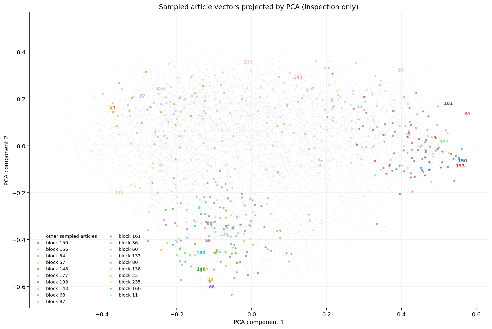
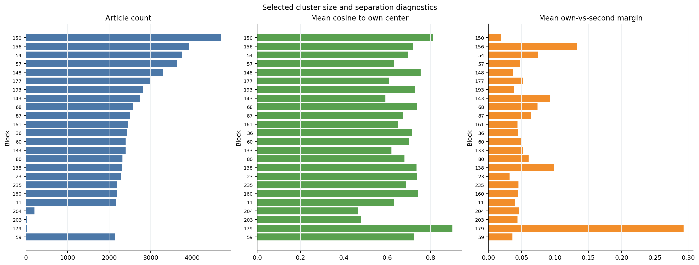
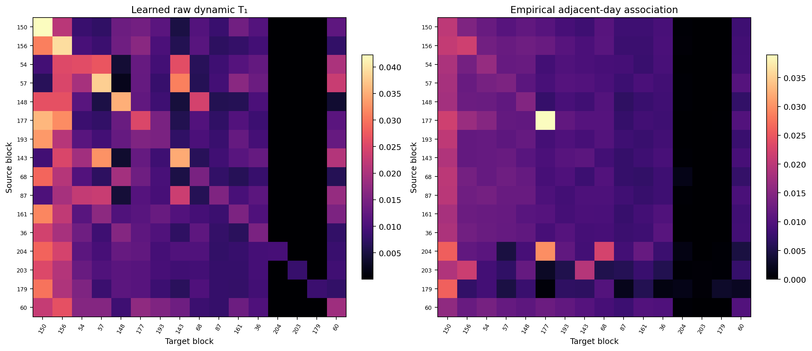
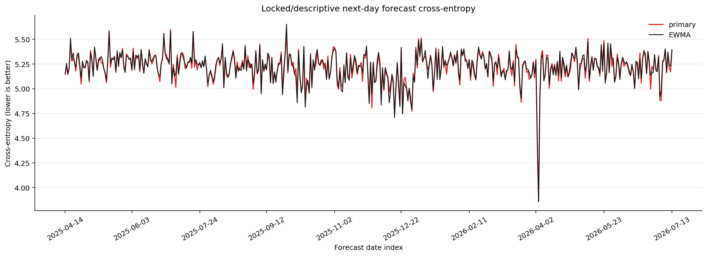

1. 总览与解释边界
报告生成时间范围：2021-07-15 至 2026-07-13；模型格式：V2。
2. 新闻如何变成向量
每篇全文被编码成 384 维向量。原始维度没有可直接命名的含义，因此同时展示向量前缀、PCA二维位置、与所属中心的余弦相似度，以及相对第二近中心的间隔。间隔越大，归簇越明确。

样本混合了簇代表、随机新闻、低中心余弦新闻和低中心间隔新闻，便于同时看正常案例与失败边界。
| 日期 | 抽样原因 | 所属簇 | 中心余弦 | 中心间隔 | 新闻预览 | 向量前缀 |
|---|---|---|---|---|---|---|
| 2026-07-05 | 簇代表 | 块 150 · shares / inc / nasdaq / nyse | 0.947 | 0.026 | Stephens Investment Management Group LLC Purchases 103,538 Shares of Rubrik, Inc. $RBRK。Stephens Investment Management Group LLC raised its position in Rubrik, Inc. (NYSE:RBRK - Free Report) by 17.4% during the first qu… | [-0.013, -0.035, -0.083, -0.034, -0.077, -0.024, +0.057, +0.089, +0.066, -0.042, +0.021, +0.049] |
| 2024-12-01 | 簇代表 | 块 156 · israel / gaza / war / israeli | 0.921 | 0.297 | UN halts aid shipments through Gaza's main crossing after looting. It blames the crisis on Israel。Kerem Shalom is the only crossing between Israel and Gaza that is designed for cargo shipments and has been the main arte… | [+0.024, +0.095, -0.017, -0.046, +0.042, +0.042, +0.015, -0.063, +0.066, +0.075, +0.003, +0.014] |
| 2022-06-25 | 簇代表 | 块 54 · trump / president / congress / supreme | 0.926 | 0.147 | Jan. 6: Pressure, unsung heroes and Trump’s Watergate echoes | KTVE - myarklamiss.com。WASHINGTON (AP) — The House Jan. 6 committee launched under deep political skepticism: What more could be said about the deadly insur… | [+0.023, +0.046, -0.050, -0.008, +0.051, +0.050, -0.011, -0.028, +0.082, -0.009, -0.002, +0.066] |
| 2022-11-13 | 簇代表 | 块 57 · prnewswire / software / network / services | 0.895 | 0.094 | Assembled Joins Forces with Zoom to Empower Contact Center Users with Intelligent Workforce Management - NewsBreak。Related salestechstar.com Rangel’s extensive worldwide channel leadership experience to drive company’s … | [-0.087, -0.065, -0.068, -0.052, -0.049, -0.008, -0.009, -0.013, -0.020, +0.013, +0.046, +0.065] |
| 2021-11-07 | 簇代表 | 块 148 · bowl / nfl / super / injury | 0.938 | 0.084 | NFL midseason awards: Matthew Stafford on MVP pace。The Serby Midseason Awards discovered a way to include the Giants and Jets during yet another season of despair. A list of studs and duds, to be sure: MVP: Matthew Staf… | [-0.009, +0.047, -0.090, -0.059, +0.017, +0.043, +0.098, +0.080, +0.023, -0.060, -0.086, -0.036] |
| 2025-06-18 | 簇代表 | 块 177 · convert / conversion / exchange / rate | 0.867 | 0.053 | Market recap for the North American session - June 17。Log in to today’s North American session Recap for June 17. Today's session has seen a major reversal in sentiment, with headlines about the US potentially entering … | [-0.023, -0.010, -0.005, -0.011, +0.039, -0.042, -0.046, +0.041, +0.073, +0.018, +0.013, +0.013] |
| 2022-01-13 | 簇代表 | 块 193 · stock / price / indian / nasdaq | 0.926 | 0.122 | Associated Banc-Corp. Shares Approach 52-Week High - Market Mover | Nasdaq。Associated Banc-Corp. (ASB) shares closed today at 1.8% below its 52 week high of $25.55, giving the company a market cap of $3B. The stock is c… | [-0.017, -0.049, -0.011, -0.019, -0.025, -0.004, -0.030, +0.055, +0.035, -0.042, +0.020, +0.066] |
| 2026-03-28 | 簇代表 | 块 143 · hdl / 创新 / clinical / ratio | 0.869 | 0.177 | FDA approves Rocket’s Kresladi as first gene therapy for LAD-I | BioWorld。In a win for the rare disease space, the U.S. FDA granted accelerated approval for Rocket Pharmaceuticals Inc.’s Kresladi (marnetegragene autotem… | [-0.082, +0.035, -0.049, -0.072, -0.030, +0.018, -0.022, +0.115, +0.030, -0.023, +0.079, +0.041] |
| 2022-01-28 | 簇代表 | 块 68 · nba / game / celtics / injury | 0.942 | 0.122 | Nuggets' Markus Howard: Ruled out Sunday - NewsBreak。Related CBS Sports The embattled Los Angeles Lakers got a major boost on Tuesday night, when star big man Anthony Davis returned to the lineup in their 106-96 win ove… | [+0.054, -0.049, -0.028, -0.064, -0.025, +0.019, +0.051, +0.059, +0.009, -0.056, -0.070, -0.048] |
| 2026-05-16 | 簇代表 | 块 87 · delhi / police / court / case | 0.901 | 0.164 | POCSO case: Police issue look out notice against Bandi Bageerath, raid home。Hyderabad: The Cyberabad Police on Saturday, May 16, issued a lookout notice against Bandi Sai Bageerath, who is accused in a Protection of Chi… | [+0.001, +0.049, -0.051, -0.052, +0.036, +0.021, +0.088, +0.033, +0.045, +0.009, +0.082, -0.013] |
| 2024-09-17 | 簇代表 | 块 161 · guru / nasdaq / stock / index | 0.861 | 0.063 | 3 AllianceBernstein Mutual Funds for Great Returns | Nasdaq。AllianceBernstein manages various mutual funds spanning equity, fixed-income, alternatives and multi-asset strategies. It has $725 billion in assets under its … | [-0.046, -0.046, -0.076, -0.042, -0.024, +0.034, -0.013, +0.071, +0.011, -0.038, -0.004, +0.057] |
| 2021-09-04 | 簇代表 | 块 36 · liverpool / chelsea / goal / midfielder | 0.927 | 0.039 | Transfer news LIVE: Erling Haaland updates, Wilshere denied Como switch, Saul Niguez first Chelsea training session。DEADLINE DAY did not disappoint as clubs scrambled to get last minute deals over the line. In one of th… | [+0.002, +0.000, -0.007, -0.112, +0.043, -0.006, +0.047, +0.062, +0.007, -0.000, -0.062, -0.074] |
| 2022-11-03 | 簇代表 | 块 60 · 咖啡 / profit / crore / growth | 0.906 | 0.133 | PREMIUM BRANDS HOLDINGS CORPORATION REPORTS RECORD THIRD QUARTER RESULTS, DECLARES FOURTH QUARTER DIVIDEND AND RELEASES ITS 2022 ESG PROGRESS REPORT。VANCOUVER, BC, Nov. 3, 2022 /CNW/ - Premium Brands Holdings Corporatio… | [-0.029, -0.030, -0.029, -0.053, -0.039, +0.022, -0.037, +0.011, +0.056, +0.016, +0.053, +0.011] |
| 2025-09-15 | 簇代表 | 块 133 · india / air / modi / state | 0.862 | 0.154 | India News | Punjab, Haryana Should Act as Elder Brothers to Support Himachal's Interests: CM Sukhu | LatestLY。Shimla (Himachal Pradesh) [India], September 15 (ANI): Chief Minister Sukhvinder Singh Sukhu on Monday said … | [+0.015, +0.013, -0.030, -0.028, -0.071, -0.007, -0.010, +0.003, -0.041, +0.031, +0.027, -0.043] |
| 2022-09-02 | 簇代表 | 块 80 · madrid / cup / goal / com | 0.913 | 0.005 | Chelsea, ManCity on UEFA's FFP watchlist as transfer window ends — NewsDay。Chelsea, Leicester, Manchester City and West Ham have avoided sanctions under UEFA Financial Fair Play (FFP) rules because of “exceptional COVID… | [+0.023, +0.028, -0.035, -0.073, +0.068, +0.035, +0.077, +0.031, +0.037, +0.014, -0.052, -0.085] |
| 2026-04-29 | 簇代表 | 块 138 · india / ipl / pakistan / trophy | 0.935 | 0.156 | IPL 2026 Dispatch, April 29: Abhishek Sharma-Heinrich Klaasen Duo Ruling Roost; GT Prepare To Welcome Rampaging RCB | Outlook India。Summary of this article - Mumbai Indians need to win at least five of their remaining s… | [+0.032, +0.030, -0.067, -0.053, -0.005, +0.025, +0.055, +0.051, -0.011, +0.018, -0.012, -0.115] |
| 2021-08-18 | 簇代表 | 块 23 · yankees / mlb / baseball / his | 0.948 | 0.016 | LEADING OFF: Red Sox-Yanks twinbill, Cabrera tries for 500 – KVEO-TV。A look at what’s happening around the majors today: ___ BRONX TWO-STEP The Yankees host the Red Sox in a day-night doubleheader as the longtime rivals… | [+0.023, +0.018, -0.060, -0.007, +0.005, +0.075, +0.020, +0.098, +0.018, -0.033, -0.042, -0.064] |
| 2022-09-22 | 簇代表 | 块 235 · film / star / season / tom | 0.909 | 0.064 | Harley Quinn' Season 3 Ending Explained: Can Love Conquer All? - NewsBreak。Related Collider Dwayne Johnson’s Black Adam is leaving no stones unturned in hyping fans for the upcoming feature. As the movie stands just a m… | [+0.014, -0.016, -0.026, -0.042, -0.002, +0.053, +0.050, +0.013, +0.048, -0.017, +0.053, +0.016] |
| 2023-09-30 | 簇代表 | 块 160 · city / goal / league / defeat | 0.942 | 0.091 | Man City's perfect start in the Premier League is over. Spurs and Arsenal close the gap at the top。MANCHESTER, England (AP) — Manchester City's perfect start in the Premier League is over after a shock loss to Wolverham… | [+0.011, +0.014, -0.034, -0.041, +0.035, +0.012, +0.079, +0.091, +0.021, +0.017, -0.062, -0.091] |
| 2022-08-10 | 簇代表 | 块 11 · prnewswire / new / group / ceo | 0.837 | 0.036 | DarkPulse, Inc. Reports Second Quarter 2022 Financial Results and Operational Highlights。Company Issues Shareholder Letter NEW YORK and HOUSTON, Aug. 10, 2022 /PRNewswire/ -- DarkPulse, Inc. (OTC Markets: DPLS) ("DarkPu… | [-0.037, -0.001, -0.017, -0.038, -0.093, -0.026, -0.040, +0.002, -0.017, -0.013, +0.043, +0.037] |
| 2023-11-24 | 低中心余弦 | 块 199 · cbd / cannabis / gummies / health | 0.233 | 0.021 | alt level chart - Laman。Bar Chart Of Serum Ast Alt Levels Of The Control C Group . Top Causes Of Elevated Liver Enzymes How To Treat High Ast . Bar Chart On The Comparison Of Activities Of Serum Level Of . Liver Blood T… | [-0.046, +0.041, -0.001, +0.041, +0.015, -0.033, +0.044, +0.011, -0.010, -0.030, -0.009, -0.025] |
| 2025-08-06 | 低中心余弦 | 块 84 · growth / 中國 / 關稅 / trade | 0.236 | 0.049 | Donald Trump imposes additional 25 percent tariff on India。WORLD United States President Donald Trump on Wednesday announced an additional 25 percent tariff on India, taking the total levy on New Delhi to 50 percent. Un… | [+0.038, -0.028, +0.036, -0.008, +0.078, -0.018, +0.087, -0.008, +0.026, +0.002, +0.065, -0.032] |
| 2025-05-06 | 低中心余弦 | 块 203 · dna / family / autosomal / their | 0.252 | 0.021 | Autosomal Inheritance Quiz #1 Flashcards | Channels for Pearson+。Autosomal Inheritance quiz #1 Flashcards Terms in this set (8) How do autosomal dominant disorders differ from autosomal recessive disorders in terms of a… | [+0.040, +0.060, +0.090, +0.018, +0.024, +0.008, -0.024, +0.031, -0.065, -0.088, +0.058, +0.027] |
| 2025-08-27 | 低中心余弦 | 块 154 · hdl / ratio / pearson / e96 | 0.262 | 0.003 | Get Mean Corpuscular Volume tests in Visalia, CA | Empirical Health。MCV measures the average size of red blood cells. Changes can help diagnose different types of anemia. Heart Chol/HDLc Ratio HDL Triglycerides ApoB Lp(… | [-0.055, +0.075, +0.020, -0.008, -0.002, -0.009, +0.059, +0.048, +0.030, -0.002, -0.001, -0.148] |
| 2025-08-20 | 低中心余弦 | 块 204 · hdl / ratio / vara / layer | 0.262 | 0.007 | Get LDL tests in Draper, VA | Empirical Health。LDL (“bad”) cholesterol can build up in your arteries and form plaque that narrows and hardens them. Heart Chol/HDLc Ratio HDL Triglycerides ApoB Lp(a) LDL/HDL Ratio Non HD… | [-0.091, +0.073, +0.030, +0.013, -0.031, +0.029, +0.033, +0.057, -0.015, -0.020, -0.015, -0.126] |
| 2025-08-23 | 低中心间隔 | 块 40 · temp / wind / condition / heart | 0.310 | 0.000 | Get Blood Type tests in Fairdale, KY | Empirical Health。The ABO group classifies blood based on the presence of A and/or B antigens. Blood type can be A, B, AB, or O. Heart Chol/HDLc Ratio HDL Triglycerides ApoB Lp(a) L… | [-0.068, +0.057, +0.008, +0.001, -0.015, +0.013, +0.054, +0.031, -0.032, -0.018, +0.032, -0.188] |
| 2023-02-21 | 低中心间隔 | 块 60 · 咖啡 / profit / crore / growth | 0.605 | 0.000 | Gambling industry generated £7.05bn GVA for British economy in 2022。The estimate comes from the UK government’s Department of Culture, Media and Sport. UK.- The Department of Culture, Media and Sport has estimated that … | [+0.016, +0.030, +0.009, -0.097, +0.042, +0.046, -0.046, +0.058, +0.036, +0.067, +0.003, +0.010] |
| 2022-07-04 | 低中心间隔 | 块 137 · etf / nysearca / ishares / llc | 0.742 | 0.000 | Hartford Investment Management Co. Has $2.14 Million Holdings in Essex Property Trust, Inc. (NYSE:ESS) - American Banking News。Hartford Investment Management Co. lessened its position in shares of Essex Property Trust, … | [+0.009, -0.030, -0.068, -0.041, -0.023, -0.040, -0.011, -0.014, -0.008, -0.017, +0.017, +0.010] |
| 2025-07-30 | 低中心间隔 | 块 213 · nfl / season / brady / nfca | 0.686 | 0.000 | Reports: Twins trading closer Jhoan Duran to Phillies for two top prospects。The Twins are dealing star closer Jhoan Duran to the Philadelphia Phillies for two top-100 prospects in one of the biggest trades before this y… | [-0.018, +0.040, -0.009, -0.046, -0.014, +0.046, +0.014, +0.115, +0.024, -0.042, +0.003, -0.070] |
| 2023-10-18 | 低中心间隔 | 块 56 · base / minister / economy / economic | 0.526 | 0.000 | Cameroon plans clinker-marble substitution in cement production - Business in Cameroon。(Business in Cameroon) - Cimenteries du Cameroun (Cimencam), a local subsidiary of the LafargeHolcim Maroc Afrique group (55%), inte… | [-0.057, +0.055, -0.005, -0.062, -0.022, -0.079, +0.032, +0.015, +0.016, +0.058, -0.005, -0.008] |
| 2024-01-02 | 随机 | 块 244 · they / what / you / older | 0.533 | 0.071 | What I learnt from a room full of introverts。When everything from dating to the supermarket checkout process can take place without seeing a person in real life, those of us who are introverted can really struggle when … | [+0.118, -0.001, +0.004, +0.018, +0.019, +0.011, +0.039, -0.016, -0.022, -0.011, +0.035, +0.086] |
| 2025-01-01 | 随机 | 块 156 · israel / gaza / war / israeli | 0.819 | 0.234 | Palestinians say 17 Gaza civilians killed in New Year's airstrikes by Israel - UPI.com。Palestinians attend the funeral of Kholoud Abu Dahr, 27, and her 8-year-old son Adam near Al Aqsa Martyrs Hospital in Deir Al Balah,… | [+0.009, +0.075, -0.020, -0.057, +0.046, +0.029, +0.030, -0.032, +0.094, +0.089, +0.044, +0.015] |
| 2024-09-05 | 随机 | 块 33 · lithium / its / mining / nasdaq | 0.716 | 0.132 | 5 Best-performing Lithium Stocks of 2024 | Nasdaq。As the market moves into the second half of year, the lithium sector has continued to experience challenges. However, after 2023's broad fluctuations, the lithium sector… | [-0.060, +0.063, +0.043, -0.043, -0.066, -0.035, -0.038, +0.098, +0.027, +0.006, +0.017, -0.015] |
| 2023-11-21 | 随机 | 块 114 · show / episode / awards / time | 0.552 | 0.006 | John Oliver Criticizes Apple TV Amidst Dollar Store Segment。Renowned bird enthusiast John Oliver, known for his sharp commentary, took a slight dig at Apple TV during the latest episode of Last Week Tonight. While prima… | [+0.073, -0.055, +0.013, -0.007, +0.036, +0.012, +0.054, -0.036, +0.016, -0.015, +0.032, +0.001] |
| 2026-04-11 | 随机 | 块 180 · cannabis / dispensaries / weed / results | 0.434 | 0.053 | The Best Dispensaries Near Me in Noel, Missouri | Updated 2026 | Leafly。Best weed dispensaries in Noel, Missouri with authentic reviews Results 1-30 of 3046 Sponsored Dispensaries All Dispensary results Looking for some… | [+0.047, +0.024, -0.038, -0.030, -0.004, +0.008, -0.031, +0.032, -0.027, -0.009, +0.007, -0.006] |
| 2021-10-17 | 随机 | 块 247 · coat / image / source / istock | 0.533 | 0.081 | Womens Yep Still Single Funny Single Women T-Shirt | Real Simple。Cute Leopard Heart Valentines Day tee. Funny holiday gag gift joke for women. Perfect humor shirt for family and friends asking your marital status. Aweso… | [-0.077, -0.012, +0.106, +0.038, +0.014, +0.024, +0.033, -0.044, -0.063, -0.060, -0.021, -0.099] |
| 2026-05-03 | 随机 | 块 102 · sexual / police / child / accused | 0.691 | 0.044 | Allahabad High Court Overturns Life Sentence of Man Accused of Kidnap and S*xual Assault After Learning That Victim Was an Adult Who Entered Into Consensual Relationship | 📰 LatestLY。Allahabad High Court Overturns Life … | [+0.019, +0.107, -0.053, -0.022, +0.043, +0.066, +0.061, +0.001, +0.084, +0.024, +0.115, -0.016] |
| 2022-08-30 | 随机 | 块 35 · com / transportation / wisconsin / water | 0.611 | 0.008 | Arkansas Game and Fish, Transportation Department increase boating access。Three funding reimbursements approved at last week's Arkansas Game and Fish Commission meeting in Texarkana will create improved access for angle… | [+0.031, -0.007, +0.033, +0.007, +0.022, +0.009, -0.032, +0.109, +0.028, +0.014, +0.043, -0.008] |
| 2026-01-30 | 随机 | 块 54 · trump / president / congress / supreme | 0.788 | 0.114 | The Latest: Congress scrambles to save bipartisan spending deal before Friday night deadline。Senate leaders were scrambling to save a bipartisan spending deal and avert a partial government shutdown at midnight Friday. … | [+0.013, +0.076, -0.021, -0.052, +0.112, +0.116, +0.004, +0.006, +0.018, -0.005, +0.007, +0.023] |
| 2022-03-26 | 随机 | 块 205 · grande / khloe / ariana / love | 0.643 | 0.061 | Aadhi Pinisetty gets engaged to Nikki Galrani: ‘We found each other a couple of years ago’ - The Miracle Tech。Actress Aadhi Pinisetti and Nikki Galrani have made their relationship official. The two got engaged on March… | [+0.018, +0.026, -0.078, -0.052, -0.070, +0.008, +0.110, -0.005, +0.061, -0.061, +0.132, +0.006] |
3. 相邻新闻是否语义相近
最近邻只在分层抽样池中搜索，适合人工抽检，不等同于全库精确检索。查看标题是否表达相近事件，并留意高余弦但语义不同的反例。
块 150 · shares / inc / nasdaq / nyse｜United Services Automobile Association Purchases 784 Shares of Webster Financial Co. (NYSE:WBS) - Ticker Report。United …
| 余弦 | 关系 | 日期 | 簇 | 相邻新闻预览 |
|---|---|---|---|---|
| 0.864 | 同簇 | 2025-07-08 | 块 150 · shares / inc / nasdaq / nyse | Curtiss-Wright Corporation (NYSE:CW) Stock Position Raised by Mutual Advisors LLC - ETF Daily News。Mutual Advisors LLC raised its position in shares of Curtiss-Wright Corporation (NYSE:CW – Free Report) by 15.7% in the first quarter, accor… |
| 0.808 | 同簇 | 2024-02-09 | 块 150 · shares / inc / nasdaq / nyse | NIKE, Inc. Plans Quarterly Dividend of $0.37 (NYSE:NKE) - Markets Daily。NIKE, Inc. (NYSE:NKE – Get Free Report) declared a quarterly dividend on Thursday, February 8th, RTT News reports. Shareholders of record on Monday, March 4th will be … |
| 0.789 | 同簇 | 2024-05-01 | 块 150 · shares / inc / nasdaq / nyse | Analysts Issue Forecasts for Alphabet Inc.’s Q2 2024 Earnings (NASDAQ:GOOG) - Markets Daily。Alphabet Inc. (NASDAQ:GOOG – Free Report) – Wedbush lifted their Q2 2024 EPS estimates for shares of Alphabet in a report issued on Thursday, April… |
| 0.786 | 异簇 | 2024-07-21 | 块 137 · etf / nysearca / ishares / llc | Ally Financial (NYSE:ALLY) Price Target Increased to $49.00 by Analysts at Royal Bank of Canada - Markets Daily。Ally Financial (NYSE:ALLY – Free Report) had its price target boosted by Royal Bank of Canada from $46.00 to $49.00 in a resear… |
| 0.784 | 同簇 | 2023-07-22 | 块 150 · shares / inc / nasdaq / nyse | Csenge Advisory Group Has $341,000 Holdings in Enterprise Products Partners L.P. (NYSE:EPD) - American Banking News。Csenge Advisory Group lessened its stake in Enterprise Products Partners L.P. (NYSE:EPD – Free Report) by 15.4% in the 1st … |
块 156 · israel / gaza / war / israeli｜Israeli missile strikes put Damascus airport out of service - The Globe and Mail。Israel’s military fired missiles towar…
| 余弦 | 关系 | 日期 | 簇 | 相邻新闻预览 |
|---|---|---|---|---|
| 0.706 | 同簇 | 2024-07-30 | 块 156 · israel / gaza / war / israeli | Israel says it struck Beirut after an attack in Israeli-controlled Golan Heights。Updated July 30, 2024 at 14:56 PM ET BEIRUT, Lebanon, and TEL AVIV, Israel — A large explosion ripped through the streets of southern Beirut on Tuesday evenin… |
| 0.691 | 同簇 | 2026-03-18 | 块 156 · israel / gaza / war / israeli | Iran lashes out with attacks on Israel and Gulf neighbors as Israel hits Beirut。It alleged he “provided images and information on sensitive locations” to the Mossad. Iran, one of the world’s top executioners, long has put people to death a… |
| 0.657 | 同簇 | 2023-11-23 | 块 156 · israel / gaza / war / israeli | Israel-Hamas conflict: Palestinian women and youths to be swapped for Israeli hostages。By Victor Caivano, Bassam Massoud and Emily Rose Gaza City: The Israeli military has unveiled what it claims is a Hamas military facility under Gaza’s l… |
| 0.654 | 异簇 | 2026-06-28 | 块 90 · iran / talks / trump / president | U.S. and Iran exchange strikes, underscoring the fragility of the ceasefire。Iran's Revolutionary Guard claimed responsibility for launching drone and missile attacks on Bahrain and Kuwait on Sunday, according to a statement issued via stat… |
| 0.649 | 同簇 | 2025-01-01 | 块 156 · israel / gaza / war / israeli | Palestinians say 17 Gaza civilians killed in New Year's airstrikes by Israel - UPI.com。Palestinians attend the funeral of Kholoud Abu Dahr, 27, and her 8-year-old son Adam near Al Aqsa Martyrs Hospital in Deir Al Balah, after they died dur… |
块 54 · trump / president / congress / supreme｜Washington Post: Justice Samuel Alito’s wife said upside-down American flag was ‘an international signal of distress’ i…
| 余弦 | 关系 | 日期 | 簇 | 相邻新闻预览 |
|---|---|---|---|---|
| 0.657 | 异簇 | 2024-06-13 | 块 197 · alerts / banned / email / videos | Employees Tear 'Pride' Flag from Building, Leader Vows 'As Many Times as They Put It Up, We Are Going to Remove It'。The United States exports plenty of its culture to the wider world, although some of it doesn’t quite catch on. Case in poi… |
| 0.638 | 同簇 | 2022-08-31 | 块 54 · trump / president / congress / supreme | Biden hits the campaign trail to tout a string of political wins - NewsBreak。- Mayor Adams Thinking About Sending Migrants Back to TexasTom HandyNew York City, NY - 2022 Most Diverse Places to Live in VirginiaChannelocityVirginia State - O… |
| 0.631 | 异簇 | 2022-02-10 | 块 255 · abc / newsbreak / was / kennedy | Twitter Users Roast Kaepernick After QB's Ad Says His Flag-Hatred Was 'Sign of Respect to the Military'。While corporate America often turns a blind eye to civil and human rights violations in China to protect their access to the world’s bi… |
| 0.629 | 异簇 | 2026-05-08 | 块 255 · abc / newsbreak / was / kennedy | U.S. intercepts Iranian attacks on 3 ships. And, what to know about hantavirus。Good morning. You're reading the Up First newsletter. Subscribe here to get it delivered to your inbox, and listen to the Up First podcast for all the news you … |
| 0.629 | 异簇 | 2022-12-07 | 块 255 · abc / newsbreak / was / kennedy | Mother frets her own daughter is 'bad for the earth' in Washington Post analysis piece - NewsBreak。Related A marriage between a Democrat and a Republican was put under so much stress from the 2020 election that they resorted on writing let… |
块 57 · prnewswire / software / network / services｜Lenovo CEO to Haters: AI Is Inevitable at CES。At the convention here organized by CES in Las Vegas, Lenovo’s top execut…
| 余弦 | 关系 | 日期 | 簇 | 相邻新闻预览 |
|---|---|---|---|---|
| 0.749 | 异簇 | 2025-11-14 | 块 242 · security / 侵权 / 网络 / app | Anthropic warns of AI-driven hacking campaign linked to China。A team of researchers has uncovered what they say is the first reported use of artificial intelligence to direct a hacking campaign in a largely automated fashion. The AI compan… |
| 0.727 | 异簇 | 2025-01-31 | 块 131 · 機器 / 器人 / inventor / 形機 | ເຕັກໂນໂລຢີທີ່ຫນ້າປະຫລາດໃຈທີ່ຊ່ວຍປະຢັດສາງຈາກຄວາມຜິດພາດທີ່ມີລາຄາແພງ | HackerNoon。ຈິນຕະນາການດໍາເນີນທຸລະກິດທີ່ຫຍຸ້ງຢູ່ບ່ອນທີ່ມີຄໍາສັ່ງຫຼາຍຮ້ອຍອັນໃນແຕ່ລະມື້, ແລະທີມງານສາງເຮັດວຽກຢ່າງບໍ່ອິດເມື່ອຍເພື່ອສົ່ງພວກມັນອອກໃຫ້ທັນເວລາ. ຢ່າງໃດກໍຕາມ, ການຊອກຫາ… |
| 0.723 | 异簇 | 2023-04-02 | 块 134 · jobs / fyi / benefits / levels | AI will probably affect your job, according to new reports – The Morning Call。Artificial intelligence (AI) is increasingly being integrated into workplaces across various industries, and it is having a significant impact on most jobs. Whil… |
| 0.720 | 异簇 | 2025-03-24 | 块 29 · nyse / report / inc / proshares | AI budgets are still rising. IBM has a ‘massive opportunity.’ | Company Business News。AI budgets are still rising. IBM has a ‘massive opportunity.’ Summary Wedbush Securities’ Daniel Ives added the company to the firm’s Best Ideas List.Wal… |
| 0.710 | 同簇 | 2024-06-01 | 块 57 · prnewswire / software / network / services | Big Tech develops AI network standard, but without chip market leader Nvidia | Technology News | The Shepherd of the Hills Gazette。Major technology companies including Meta, Microsoft, Advanced Micro Devices and Broadcom announced on Thurs… |
块 148 · bowl / nfl / super / injury｜Panthers GM Bill Zito fires back at 'bold' takes on Seth Jones trade。The Florida Panthers swung a big deal for Chicago …
| 余弦 | 关系 | 日期 | 簇 | 相邻新闻预览 |
|---|---|---|---|---|
| 0.751 | 同簇 | 2026-07-09 | 块 148 · bowl / nfl / super / injury | Jeff Zrebiec Looks at Where Ravens Are Better, Worse, or About the Same As Last Year | Late for Work。Jeff Zrebiec Looks at Where Ravens Are Better, Worse, or About the Same As Last Year General Manager Eric DeCosta is fond of saying that g… |
| 0.720 | 异簇 | 2025-06-25 | 块 213 · nfl / season / brady / nfca | Hawks rumors: 1 big move Atlanta is targeting after Kristaps Porzingis trade。The Atlanta Hawks made their first offseason move speedily. The Hawks acquired Kristaps Porzingis in a three-team trade that also involved the Boston Celtics and … |
| 0.709 | 同簇 | 2024-01-07 | 块 148 · bowl / nfl / super / injury | Steelers top Lamar-less Ravens 17-10, will make the playoffs if Buffalo or Jacksonville loses。“Let us be dangerous,” said Heyward, the Pittsburgh defensive tackle. “We have a formula that’s working right now. Hopefully we can get some guys… |
| 0.701 | 异簇 | 2022-10-03 | 块 184 · leafs / nhl / maple / lightning | Blackhawks notebook: Boris Katchouk injury widens Lukas Reichel’s path to making team - Chicago Sun-Times。MILWAUKEE —It hasn’t come about in a way the Blackhawks would’ve preferred, but Lukas Reichel now has an easier path to make the Hawk… |
| 0.690 | 异簇 | 2022-11-12 | 块 68 · nba / game / celtics / injury | Ira Winderman: Victor Wenbanyama won’t be a Heat game-changer . . . or will he? – The Denver Post。There is no defense played in the NBA draft lottery. And yet with the generational talent of Victor Wenbanyama available in the May 16 drawin… |
块 177 · convert / conversion / exchange / rate｜(31 DECEMBER 2018)EUR/USD:Turning down. - Analytics & Forecasts - 2 January 2019 - Traders' Blogs。Pivot (invalidation):…
| 余弦 | 关系 | 日期 | 簇 | 相邻新闻预览 |
|---|---|---|---|---|
| 0.651 | 同簇 | 2024-10-29 | 块 177 · convert / conversion / exchange / rate | Bank Nifty prediction today – October 29, 2024: Index faces a barrier - The Hindu BusinessLine。Bank Nifty opened today’s session higher at 51,404 versus yesterday’s close of 51,259. The index is now hovering around 51,520, up 0.5 per cent.… |
| 0.622 | 异簇 | 2025-10-18 | 块 193 · stock / price / indian / nasdaq | Buy or sell: Sumeet Bagadia recommends three stocks to buy on Monday — 20 October 2025 | Stock Market News。Buy or sell stocks: The Indian stock market continued the upbeat trend for the third straight session on Friday. The Bank Nifty inde… |
| 0.595 | 异簇 | 2022-12-23 | 块 58 · inflation / fed / rate / 日元 | USD/CHF prints mild gains above 0.9300 as traders await Fed’s favorite inflation gauge。- USD/CHF grinds higher after rising the most in a week, lacks upside momentum of late. - US Dollar cheers firmer data, hawkish Fed bets and US Presiden… |
| 0.590 | 异簇 | 2022-11-29 | 块 193 · stock / price / indian / nasdaq | GBP/USD expected to trade within the 1.1850-1.2080 range - UOB。GBP/USD is now seen navigating the 1.1850-1.2080 range in the next few weeks, suggest Economist Lee Sue Ann and Markets Strategist Quek Ser Leang at UOB Group. Key Quotes 24-ho… |
| 0.576 | 异簇 | 2022-12-20 | 块 193 · stock / price / indian / nasdaq | Editors' Roundtable | Market Down For 3rd Week In A Row!。As investors shy away from markets fearing a recession in the wake of the central bank’s liquidity tightening campaign, Indian indices that showed some resilience on Monday, are back… |
块 193 · stock / price / indian / nasdaq｜Indian shares fall, rupee hits record low as oil prices rebound。Indian shares slipped on Tuesday after three straight s…
| 余弦 | 关系 | 日期 | 簇 | 相邻新闻预览 |
|---|---|---|---|---|
| 0.669 | 同簇 | 2022-11-17 | 块 193 · stock / price / indian / nasdaq | Dow futures: Cisco and Nvidia edge profits; The intensification of the main recession signal。Dow Jones futures rose early Thursday, along with S&P 500 futures and Nasdaq futures, with the focus on earnings from Nvidia and Cisco. X The stoc… |
| 0.628 | 同簇 | 2025-10-18 | 块 193 · stock / price / indian / nasdaq | Buy or sell: Sumeet Bagadia recommends three stocks to buy on Monday — 20 October 2025 | Stock Market News。Buy or sell stocks: The Indian stock market continued the upbeat trend for the third straight session on Friday. The Bank Nifty inde… |
| 0.626 | 同簇 | 2025-02-25 | 块 193 · stock / price / indian / nasdaq | NMDC share price drops 17% in last 1 year but experts remain bullish on this PSU stock. Here’s why | Stock Market News。NMDC share price has witnessed remarkable volatility in the last few months. Shares of India's largest and state-owned i… |
| 0.625 | 异簇 | 2022-09-19 | 块 216 · prices / gas / price / petrol | Crude Oil Price Talking Points The price of oil is under pressure after failing to test the monthly high ($90.39), and crude may track the negative slope in the 50-Day SMA ($91.92) as it reverses course ahead of the moving average. Crude O… |
| 0.621 | 同簇 | 2025-02-08 | 块 193 · stock / price / indian / nasdaq | Borders & Southern Petroleum (LON:BOR) Trading Up 9% – Should You Buy? - Markets Daily。Borders & Southern Petroleum plc (LON:BOR – Get Free Report)’s share price rose 9% during mid-day trading on Wednesday . The stock traded as high as GBX… |
块 143 · hdl / 创新 / clinical / ratio｜JCI - Hepatic glutathione depletion ameliorates MASLD through selective protein oxidation and inhibition of lipogenesis…
| 余弦 | 关系 | 日期 | 簇 | 相邻新闻预览 |
|---|---|---|---|---|
| 0.645 | 同簇 | 2022-07-11 | 块 143 · hdl / 创新 / clinical / ratio | Lung Cancer Research Foundation Creates Scientific Executive Committee。Committee to Guide Foundation's Research Program NEW YORK, July 11, 2022 /PRNewswire/ -- The Lung Cancer Research Foundation (LCRF) is pleased to announce the appointme… |
| 0.555 | 同簇 | 2025-09-06 | 块 143 · hdl / 创新 / clinical / ratio | China Top Protein & Antibody Manufacturer Insights from the 2025 PEGS Boston Summit The 2025 PEGS Boston Summit: A Hub of Biotherapeutic Innovation The PEGS Boston Summit is a premier event for the biopharmaceutical industry, serving as a … |
| 0.543 | 异簇 | 2022-12-01 | 块 211 · chief / prnewswire / new / board | ISHLT Elects New Board Members and Professional Community Leaders。CHICAGO, Dec. 1, 2022 /PRNewswire/ -- The International Society for Heart and Lung Transplantation (ISHLT) has announced the results of the 2022 member election for the 2023… |
| 0.477 | 异簇 | 2022-02-07 | 块 189 · conference / earnings / call / financial | Accuray to Participate in the BTIG MedTech, Digital Health, Life Science & Diagnostic Tools Conference。SUNNYVALE, Calif., Feb. 7, 2022 /PRNewswire/ -- Accuray Incorporated (NASDAQ: ARAY) announced today its participation in the virtual… |
| 0.467 | 同簇 | 2024-12-30 | 块 143 · hdl / 创新 / clinical / ratio | 促进医药产业创新发展--健康·生活--人民网。（人民时评） 促进医药产业创新发展 申少铁 近日，国家药监局批准4款创新医疗器械上市。今年以来，共有65个创新医疗器械获批上市，其中包括医用机器人、医学影像设备等多款高端医疗器械。这些创新产品的上市，为相关疾病治疗提供有效手段，更提升了医药创新水平。 近年来，人们更加重视生命质量和健康。医学的进步让更多疾病的原理被认识，许多过去的“怪病”、大病也能够开展有效治疗。庞大的市场需求，呼唤医药企业加大研发投入，推出更多创新医药产品。 … |
块 68 · nba / game / celtics / injury｜LeBron James News: Will play Sunday | RotoWire。LeBron James News: Will play Sunday James (foot) is available for Sunday…
| 余弦 | 关系 | 日期 | 簇 | 相邻新闻预览 |
|---|---|---|---|---|
| 0.630 | 同簇 | 2025-03-23 | 块 68 · nba / game / celtics / injury | Boston Celtics Injury Report Against Trail Blazers。On Sunday evening, the Boston Celtics and Portland Trail Blazers will face off in Oregon. For the game, the Celtics have announced their injury report. Via The Boston Celtics: "Injury Repo… |
| 0.611 | 同簇 | 2026-04-24 | 块 68 · nba / game / celtics / injury | Luke Kennard And Lakers Square Off Against Rockets In Game 3 | FanDuel Research。Luke Kennard and the Los Angeles Lakers play the Houston Rockets Game 3 of the opening round of the NBA playoffs on Friday, April 24. Kennard's points prop was… |
| 0.573 | 同簇 | 2023-03-18 | 块 68 · nba / game / celtics / injury | Smith hits late 3-pointer, Rockets beat Pelicans 114-112 | KRQE News 13。HOUSTON (AP)Rookie Jabari Smith Jr. hit a 3-pointer with less than a second remaining to give the Houston Rockets a 114-112 victory over the New Orleans Pelicans on Fr… |
| 0.569 | 异簇 | 2026-02-25 | 块 148 · bowl / nfl / super / injury | Chicago Bulls Injury Update: Sounds Like Anfernee Simons Will Miss More Time。The injuries keep coming for the Chicago Bulls. Following news that Jaden Ivey would sit for at least two weeks with knee soreness, Anfernee Simons was forced to … |
| 0.568 | 异簇 | 2023-07-16 | 块 144 · win / points / carolina / against | Kobe Brown shows star power for LA Clippers in Summer League with 35-point performance – WANE 15。Kobe Brown thought he deserved to go higher in the NBA draft, and he’s beginning to show why. Brown, the final pick in the first round at No. … |
块 87 · delhi / police / court / case｜Manipur: RSS Slams Merciless Killing Of Hostages, Asks Govt For Swift Resolution。(MENAFN- IANS) Imphal, Nov 18 (IANS) T…
| 余弦 | 关系 | 日期 | 簇 | 相邻新闻预览 |
|---|---|---|---|---|
| 0.739 | 异簇 | 2022-05-28 | 块 77 · killed / people / were / least | Two killed after minibus plunges into Tawi river in Jammu - Hindustan Times。Two killed after minibus plunges into Tawi river in Jammu A minibus driver and conductor were killed on the spot after their rashly driven vehicle veered off the b… |
| 0.705 | 异簇 | 2025-07-27 | 块 77 · killed / people / were / least | Haridwar Stampede: AAP Slams System Failure After Mansa Devi Tragedy Kills 6 Devotees。The Aam Aadmi Party (AAP) has expressed anguish over the tragic stampede at the Mansa Devi Temple in Haridwar, in which several devotees lost their lives… |
| 0.692 | 异簇 | 2026-01-18 | 块 74 · party / minister / bangladesh / india | Jamiat President Maulana Mahmood Madani Writes To Bihar CM Nitish Kumar Over Mob Lynching Cases Madani counting incidents of brutality against Muslims in Bihar while demanding justice to the victims. Patna: President of the Jamiat Ulema-e-… |
| 0.681 | 异簇 | 2021-08-14 | 块 224 · afghanistan / kabul / balochistan / taliban | One FC man martyred, two injured in terrorist attack in Balochistan。Saturday Aug 14, 2021 RAWALPINDI: A Frontier Corps (FC) personnel was martyred and two others injured when terrorists attacked their vehicle in Balochistan’s Loralai, the … |
| 0.675 | 异簇 | 2026-07-07 | 块 69 · 害者 / 受害 / his / death | Did Siya Goyal Research the Raja Raghuvanshi Case?。Key Points: AS THE KETAN AGARWAL MURDER CASE continues to progress, new updates keep emerging. On July 3, 2026, both Siya Goyal (20) and Chetan Chaudhary (22), who are co-accused in the al… |
块 161 · guru / nasdaq / stock / index｜Executive Chair At HubSpot Exercises Options Worth $61K | Nasdaq。In a new SEC filing on March 13, it was revealed that …
| 余弦 | 关系 | 日期 | 簇 | 相邻新闻预览 |
|---|---|---|---|---|
| 0.722 | 异簇 | 2024-05-01 | 块 150 · shares / inc / nasdaq / nyse | Analysts Issue Forecasts for Alphabet Inc.’s Q2 2024 Earnings (NASDAQ:GOOG) - Markets Daily。Alphabet Inc. (NASDAQ:GOOG – Free Report) – Wedbush lifted their Q2 2024 EPS estimates for shares of Alphabet in a report issued on Thursday, April… |
| 0.706 | 异簇 | 2023-04-01 | 块 193 · stock / price / indian / nasdaq | Does FMC Corporation (FMC) Stock Really Excited You? | BOVNews。Redburn raised the price target for the FMC Corporation (NYSE:FMC) stock from “a Neutral” to “a Buy”. The rating was released on March 17, 2023, according to finviz. The resear… |
| 0.693 | 异簇 | 2023-05-11 | 块 193 · stock / price / indian / nasdaq | Investors Heavily Search Procter & Gamble Company (The) (PG): Here is What You Need to Know | Nasdaq。Procter & Gamble (PG) has been one of the most searched-for stocks on Zacks.com lately. So, you might want to look at some of the facts th… |
| 0.687 | 异簇 | 2024-02-09 | 块 150 · shares / inc / nasdaq / nyse | NIKE, Inc. Plans Quarterly Dividend of $0.37 (NYSE:NKE) - Markets Daily。NIKE, Inc. (NYSE:NKE – Get Free Report) declared a quarterly dividend on Thursday, February 8th, RTT News reports. Shareholders of record on Monday, March 4th will be … |
| 0.684 | 异簇 | 2022-10-15 | 块 150 · shares / inc / nasdaq / nyse | Commonwealth Equity Services LLC Has $1.52 Million Stake in NetApp, Inc. (NASDAQ:NTAP) - The AM Reporter。Commonwealth Equity Services LLC grew its holdings in shares of NetApp, Inc. (NASDAQ:NTAP – Get Rating) by 14.2% in the 2nd quarter, a… |
块 36 · liverpool / chelsea / goal / midfielder｜Hojlund available to face Grimsby despite rumours of Man Utd exit。MANCHESTER UNITED BOSS Ruben Amorim says Rasmus Hojlu…
| 余弦 | 关系 | 日期 | 簇 | 相邻新闻预览 |
|---|---|---|---|---|
| 0.759 | 同簇 | 2023-06-26 | 块 36 · liverpool / chelsea / goal / midfielder | Football Transfer Live Updates: Man United Approach Rabiot, Barcelona Want Palhinha - News18。Live now Manchester United have reportedly contacted the agent of French midfielder Adrien Rabiot whose contract with Italian giants Juventus expi… |
| 0.749 | 同簇 | 2022-10-28 | 块 36 · liverpool / chelsea / goal / midfielder | Erik ten Hag faces first public detractor as Cristiano Ronaldo theory debunked by team-mate - Mirror Online。Diogo Dalot has become the first Manchester United player to publicly disagree with Erik ten Hag's use of Cristiano Ronaldo. The Po… |
| 0.732 | 异簇 | 2022-07-31 | 块 160 · city / goal / league / defeat | Nunez scores as Liverpool wins Community Shield | WSYR。LEICESTER, England (AP) — Darwin Nunez shaded Erling Haaland in their first matchup by scoring Liverpool’s final goal as they beat Manchester City 3-1 in the Community Shield on Saturd… |
| 0.726 | 异簇 | 2022-05-14 | 块 160 · city / goal / league / defeat | Chelsea ratings: Marcos Alonso impresses in FA Cup final but Romelu Lukaku offers nothing in Wembley defeat。LIVERPOOL lifted the FA Cup after beating Chelsea on penalties at Wembley for the second time this season. After normal time and ex… |
| 0.724 | 异簇 | 2022-10-08 | 块 160 · city / goal / league / defeat | Haaland scores again as Man City rolls; Chelsea beats Wolves。Haaland has been in such prolific form that going without a goal for more than 60 minutes is enough to raise eyebrows these days. His teammates were happy to fill the void, thoug… |
块 60 · 咖啡 / profit / crore / growth｜My Top TSX Growth Stock for April 2023 | The Motley Fool Canada。Park Lawn (TSX:PLC) is a Toronto-based company that own…
| 余弦 | 关系 | 日期 | 簇 | 相邻新闻预览 |
|---|---|---|---|---|
| 0.657 | 异簇 | 2023-05-23 | 块 182 · inc / dividend / stock / nasdaq | R3 Global Dividend Growth ETF Plans Dividend of $0.15 (NYSEARCA:GDVD) - Community Financial News。R3 Global Dividend Growth ETF (NYSEARCA:GDVD – Get Rating) declared a dividend on Monday, May 22nd, NASDAQ reports. Investors of record on Wed… |
| 0.649 | 同簇 | 2025-03-06 | 块 60 · 咖啡 / profit / crore / growth | Descartes Systems Group Reports Record Income from Operations for Fiscal Year 2025 | Nasdaq。Descartes Systems Group reports record operational income and revenue growth for fiscal year 2025, highlighting strong global logistics performance… |
| 0.636 | 异簇 | 2025-08-26 | 块 243 · nasdaq / pharmaceuticals / inc / shares | LifeStance Health Group, Inc. (LFST) Stock Analysis: Strong Buy Ratings Point To 56% Upside Potential。LifeStance Health Group, Inc. (NASDAQ: LFST) is making waves in the healthcare sector, specifically within the medical care facilities in… |
| 0.621 | 异簇 | 2025-02-12 | 块 31 · earnings / per / reported / snapshot | Ceragon Networks (CRNT) Q4 Earnings Lag Estimates | Nasdaq。Ceragon Networks (CRNT) came out with quarterly earnings of $0.09 per share, missing the Zacks Consensus Estimate of $0.10 per share. This compares to earnings of $0.04 per share a… |
| 0.619 | 异簇 | 2025-12-17 | 块 182 · inc / dividend / stock / nasdaq | Q4 EPS Estimates for Lands’ End Reduced by Small Cap Consu - Ticker Report。Lands’ End, Inc. (NASDAQ:LE – Free Report) – Research analysts at Small Cap Consu cut their Q4 2026 earnings per share estimates for Lands’ End in a research note i… |
块 133 · india / air / modi / state｜PM Modi unveils infra projects worth Rs 4,500 cr in northern West Bengal | India News - Business Standard。Prime Ministe…
| 余弦 | 关系 | 日期 | 簇 | 相邻新闻预览 |
|---|---|---|---|---|
| 0.813 | 同簇 | 2023-10-02 | 块 133 · india / air / modi / state | Gas Pipeline, LPG Plant, IIIT Kota Campus: PM Modi Announces Big Gifts For Rajasthan Ahead of Assembly Polls PM Modi said the development of Rajasthan is a big priority for his government, which has focused on building modern infrastructur… |
| 0.679 | 异簇 | 2023-12-03 | 块 229 · highway / traffic / closed / bridge | Trains see cancellations, diversions - The Hindu。Due to railway related works between Vasco-da-Gama-Majorda stations, it has been decided to extend the cancellation of Train Nos. 07379/07380 Vasco da Gama-Kulem-Vasco da Gama DEMU Special t… |
| 0.634 | 同簇 | 2024-09-30 | 块 133 · india / air / modi / state | Telangana Govt plans to roll out 500 electric buses in state。Karimnagar: The state government will launch 500 electric buses across the state in the first phase to improve the efficiency of the Road Transport Corporation (RTC), said transp… |
| 0.573 | 异簇 | 2025-08-19 | 块 248 · bjp / election / assembly / congress | Tejashwi Yadav backs Rahul Gandhi as next PM; BJP dismisses claim | India News - Times Now。India News 'Rahul Gandhi Will be Next PM,' Tejashwi Tells Bihar Crowd; BJP Mocks Claim as 'Mungeri Lal's Daydreams' Speaking at a rally in Nawada du… |
| 0.573 | 异簇 | 2022-08-22 | 块 74 · party / minister / bangladesh / india | Kalyan Singh: The Pillar Of Ram Mandir Movement - The Hills Times。By: Er. Prabhat Kishore The country witnessed two major movements in the early Nineties, one the Mandal and other the Kamandal (i.e. Ram Mandir) Movement. Overall, the Manda… |
块 80 · madrid / cup / goal / com｜One last dance: Portugal’s Bruno Fernandes wants World Cup glory for Ronaldo’s farewell | Malay Mail。LONDON, April 25 —…
| 余弦 | 关系 | 日期 | 簇 | 相邻新闻预览 |
|---|---|---|---|---|
| 0.765 | 同簇 | 2026-07-06 | 块 80 · madrid / cup / goal / com | Portugal's updated FIFA ranking before 2026 World Cup clash with Spain - World Soccer Talk。Portugal entered the 2026 World Cup as one of the clear top contenders, but their performances have fallen short of expectations. In a highly compet… |
| 0.706 | 异簇 | 2022-10-28 | 块 36 · liverpool / chelsea / goal / midfielder | Erik ten Hag faces first public detractor as Cristiano Ronaldo theory debunked by team-mate - Mirror Online。Diogo Dalot has become the first Manchester United player to publicly disagree with Erik ten Hag's use of Cristiano Ronaldo. The Po… |
| 0.706 | 同簇 | 2022-12-15 | 块 80 · madrid / cup / goal / com | Why is Morocco MAR at FIFA World Cup? Explaining the tricode used for African country at Qatar 2022 - NewsBreak。Related Sporting News Lionel Messi and Julian Alvarez fired Argentina to a place in the World Cup final with a dominant 3-0 sem… |
| 0.675 | 异簇 | 2024-01-16 | 块 121 · cup / world / soccer / league | Black Princesses move closer to U-20 World Cup spot - Graphic Online。Black Princesses move closer to U-20 World Cup spot Head coach of the Black Princesses, Yusif Basigi, says the dream to qualify for the 2024 FIFA Women’s World Cup in Col… |
| 0.670 | 异簇 | 2024-01-22 | 块 121 · cup / world / soccer / league | Pedro Gonçalves defines tactical plan for the game with Burkina Faso - World Today Journal。The coach of the national team said this Saturday, 21st, in Bouaké, that he has a well-defined tactical plan for the game with Burkina Faso, next Tu… |
块 138 · india / ipl / pakistan / trophy｜T20 World Cup: India and Pakistan fans bring the party to the USA - News | Khaleej Times。India and Pakistan cricket fan…
| 余弦 | 关系 | 日期 | 簇 | 相邻新闻预览 |
|---|---|---|---|---|
| 0.666 | 同簇 | 2025-09-28 | 块 138 · india / ipl / pakistan / trophy | Asia Cup 2025 - Salman Agha has no issues with Pakistan quicks' aggression on ground | ESPNcricinfo。Danyal Rasool is ESPNcricinfo's Pakistan correspondent. @Danny61000 There is no sign that Pakistan's fast bowlers will rein in the aggressi… |
| 0.638 | 异簇 | 2022-05-26 | 块 122 · australia / test / ashes / england | City's Maclaren rallies Victorian fans for A-League decider。Socceroos and Melbourne City striker Jamie Maclaren has issued a rallying cry to supporters ahead of the A-League Men's grand final. Jamie Maclaren has cheekily called on Melbourn… |
| 0.632 | 同簇 | 2025-03-07 | 块 138 · india / ipl / pakistan / trophy | IND vs NZ: Sunil Gavaskar pinpoints India’s weak points before Champions Trophy final; ‘clearly, there’s a shortcoming’ | Mint。Get Instant Loan up to ₹10 Lakh! India might have been the only unbeaten team in the ICC Champions Trophy 2025 s… |
| 0.632 | 异簇 | 2024-03-09 | 块 122 · australia / test / ashes / england | 'Can't believe…': Waugh blasts Alastair Cook for ‘England aren’t robots' defence | Cricket - Hindustan Times。'Can't believe I'm hearing this': Mark Waugh blasts Alastair Cook for 'England aren't robots' defence as Bazball crushed Mark Waug… |
| 0.631 | 同簇 | 2025-02-09 | 块 138 · india / ipl / pakistan / trophy | Kohli returns as India wins toss and bats in 2nd ODI against England - KSTP.com 5 Eyewitness News。Kohli returns as India wins toss and bats in 2nd ODI against England CUTTACK, India (AP) — Virat Kohli has returned from a knee injury as Eng… |
块 23 · yankees / mlb / baseball / his｜MLB Probable Starting Pitchers Tonight: May 17。MLB Probable Starting Pitchers Tonight: Wednesday, May 17 As we approach…
| 余弦 | 关系 | 日期 | 簇 | 相邻新闻预览 |
|---|---|---|---|---|
| 0.671 | 异簇 | 2022-06-11 | 块 8 · braves / atlanta / field / reds | Andre Pallante St. Louis Cardinals Cincinnati Reds - TSN.ca。ST. LOUIS (AP) — Andre Pallante took a shutout into the sixth inning in his second major league start, helping the St. Louis Cardinals snap a three-game skid with a 2-0 win over t… |
| 0.655 | 异簇 | 2023-07-08 | 块 8 · braves / atlanta / field / reds | Sean Murphy homers as MLB-best Braves edge AL-best... | Daily Mail Online。Sean Murphy homers as MLB-best Braves edge AL-best Rays, 2-1 ST. PETERSBURG, Fla. (AP) - Sean Murphy hit a two-run homer and the red-hot Atlanta Braves began a serie… |
| 0.651 | 同簇 | 2023-03-22 | 块 23 · yankees / mlb / baseball / his | World Baseball Classic Odds: USA-Japan prediction, pick, how to watch。It is the finals of the World Baseball Classic! The United States goes for their second straight crown after winning in 2017, led by Trea Turner and Nolan Arenado. Japan… |
| 0.649 | 异簇 | 2023-11-09 | 块 1 · goal / scored / win / scores | Will Matt Nieto Score a Goal Against the Kings on November 9? In the upcoming contest against the Los Angeles Kings, which starts at 10:30 PM ET on Thursday, can we count on Matt Nieto to find the back of the net for the Pittsburgh Penguin… |
| 0.649 | 同簇 | 2024-03-29 | 块 23 · yankees / mlb / baseball / his | Kyle Muller's scoreless relief outing - Yahoo Sports。The Dodgers would love for us to move on from the Shohei Ohtani and Ippei Mizuhara gambling allegations, but there are still too many questions. With the MLB season starting with Opening… |
块 235 · film / star / season / tom｜Nolte: Ryan Murphy's 'American Crime Story: Impeachment' Miniseries Tanks | CauseACTION Clarion。“The Ryan Murphy FX ser…
| 余弦 | 关系 | 日期 | 簇 | 相邻新闻预览 |
|---|---|---|---|---|
| 0.675 | 同簇 | 2024-04-12 | 块 235 · film / star / season / tom | 'Civil War' is a doomsday thought experiment — that could have used more thinking | Ideastream Public Media。Releasing a movie called Civil War in this election year is certainly one way to grab headlines. Surprisingly, though, Alex Garland… |
| 0.647 | 异簇 | 2026-05-12 | 块 38 · his / who / was / lewis | Kevin Hart's Roast Delivered Doses Of Racist Barbs (Op-Ed)。In the three-hour live roast of Kevin Hart aired by Netflix on Sunday, the inclusion of Shane Gillis as the host seemed like a Hail Mary move to go viral. In the midst, Kevin Hart … |
| 0.638 | 异簇 | 2024-06-27 | 块 38 · his / who / was / lewis | WATCH: Tucker Carlson Absolutely ROASTS an Australian 'Journo' on the Barbie – Twitchy。Love him or hate him, but you, dear readers, are going to LOVE this clip of Tucker Carlson laying absolute waste to an Australian 'journalist' who asked… |
| 0.631 | 异簇 | 2026-03-09 | 块 55 · season / new / netflix / series | BLACK WATCH: (3.6.26) ‘Paradise' Season 2 & More。How is it already March? After a solid Black History Month, and despite the world turmoil thanks to your know who, March is coming through with plenty of must-see TV. CassiusLife’s latest Bl… |
| 0.631 | 异簇 | 2024-01-15 | 块 114 · show / episode / awards / time | Emmys finally arrive for a changed Hollywood, as ‘Succession’ and ‘Last of Us’ vie for top awards | Yourbasin。LOS ANGELES (AP) — The time has finally come for a most unusual Emmys. The 75th Primetime Emmy Awards are arriving four months pa… |
块 160 · city / goal / league / defeat｜PAOK, on the other hand, strolled to an easy 2-0 result at home against semi-professional Lincoln Red Imps and finished…
| 余弦 | 关系 | 日期 | 簇 | 相邻新闻预览 |
|---|---|---|---|---|
| 0.708 | 异簇 | 2023-06-21 | 块 121 · cup / world / soccer / league | Under-21 EURO preview: All Thursday's opening games including France vs Italy, Czechia vs England, Germany vs Israel | Under-21 | UEFA.com。Article summary The opening games in Groups C and D at the 2023 finals in Georgia and Romania take p… |
| 0.684 | 异簇 | 2023-01-04 | 块 186 · title / open / win / world | Tennis roundup: Daniil Medvedev breezes to victory | Fieldlevel | mdjonline.com。Third-seeded Daniil Medvedev of Russia coasted to a 6-0, 6-3 win over Miomir Kecmanovic of Serbia on Wednesday in the second round of the Adelaide Internationa… |
| 0.683 | 同簇 | 2022-10-08 | 块 160 · city / goal / league / defeat | Haaland scores again as Man City rolls; Chelsea beats Wolves。Haaland has been in such prolific form that going without a goal for more than 60 minutes is enough to raise eyebrows these days. His teammates were happy to fill the void, thoug… |
| 0.679 | 同簇 | 2022-05-14 | 块 160 · city / goal / league / defeat | Chelsea ratings: Marcos Alonso impresses in FA Cup final but Romelu Lukaku offers nothing in Wembley defeat。LIVERPOOL lifted the FA Cup after beating Chelsea on penalties at Wembley for the second time this season. After normal time and ex… |
| 0.677 | 同簇 | 2023-11-08 | 块 160 · city / goal / league / defeat | Man Utd throw away lead twice after Rashford red in damaging Copenhagen defeat | Shropshire Star。Man Utd throw away lead twice after Rashford red in damaging Copenhagen defeat United’s 4-3 defeat in Denmark leaves them bottom of their Cham… |
块 11 · prnewswire / new / group / ceo｜Ascent Named to Newsweek's Most Trustworthy Companies in America 2023 List。BELLEVILLE, Mich., April 6, 2023 /PRNewswire…
| 余弦 | 关系 | 日期 | 簇 | 相邻新闻预览 |
|---|---|---|---|---|
| 0.612 | 同簇 | 2022-06-24 | 块 11 · prnewswire / new / group / ceo | JDC Group Named as One of Atlanta's Best and Brightest Companies to Work For。Annual list by National Association for Business Resources recognizes companies with the most innovative business and HR practices ATLANTA, June 24, 2022 /PRNewsw… |
| 0.577 | 异簇 | 2022-02-01 | 块 242 · security / 侵权 / 网络 / app | ReviewRight Protect™ by HaystackID® Named to The National Law Journal's 2022 Legal Technology Trailblazers List。WASHINGTON, Feb. 1, 2022 /PRNewswire/ -- HaystackID, a specialized eDiscovery services firm supporting law firms and corporate … |
| 0.558 | 异簇 | 2024-02-08 | 块 57 · prnewswire / software / network / services | Echostor Named To Channel Insider's Hybrid Solutions Provider 250 List | MENAFN.COM。(MENAFN- PR Newswire) Regional expansion, rapid growth, and increased focus on networking and security services creating new momentum for tech solutions pr… |
| 0.557 | 异簇 | 2025-05-27 | 块 42 · inc / nyse / shares / report | Validea's Top Consumer Discretionary Stocks Based On Peter Lynch - 5/27/2025 | Nasdaq。The following are the top rated Consumer Discretionary stocks according to Validea's P/E/Growth Investor model based on the published strategy of Peter L… |
| 0.557 | 异簇 | 2021-11-23 | 块 168 · market / software / global / size | 2021 Affiliate Tracking Software Market | Statistical Analysis, Size, Share, and Forecast to 2027 By Key Players: QualityUnit, Tipalti, LeadDyno – Clark County Blog。“ United States, –In this study, we have uploaded a latest industry analys… |
块 204 · hdl / ratio / vara / layer｜ppr pipe size chart - Keski。Hot Item Popular Ppr Pipe Size Chart Plastic Tubes Of Plumbing Series . All Types Of Ppr Pi…
| 余弦 | 关系 | 日期 | 簇 | 相邻新闻预览 |
|---|---|---|---|---|
| 0.489 | 异簇 | 2024-05-18 | 块 219 · dallas / chart / best / explore | honest diapers weight chart - Keski。Honest Diaper Size Chart Honest Diapers Diaper Size Chart . Baby Diapers Honest Diapers Cloth Diaper Pattern Free . 40 Competent Honest Diaper Size Chart . Diaper Size And Weight Chart Guide Baby Weight … |
| 0.464 | 异簇 | 2023-12-06 | 块 129 · fishing / shark / whale / are | Fish Tank Ph Level Chart: A Visual Reference of Charts | Chart Master。Fish Tank Ph Level Chart is a topic that can benefit from charts. Charts are visual aids that help you display and understand data, patterns, or trends. They can be used… |
| 0.458 | 异簇 | 2023-11-14 | 块 219 · dallas / chart / best / explore | homebrew carbonation chart - Laman。Pin On Brew It Yourself Biy . Force Carbonation Chart Beer Brewing Home Brewing Beer . Pin On Liqueur Brews Home Made . Beer Carbonation Guide Getting It Just Right . Pin On Wine . Force Carbonation Chart… |
| 0.412 | 异簇 | 2023-12-26 | 块 183 · pixels / dpi / jpg / illustration | Full Chart Paper Size: A Visual Reference of Charts | Chart Master。Full Chart Paper Size is a topic that can benefit from charts. Charts are visual aids that help you display and understand data, patterns, or trends. They can be used for v… |
| 0.406 | 异簇 | 2024-04-24 | 块 219 · dallas / chart / best / explore | Types Of Hops Chart - Minga。hops chart visualizing bitterness flavors aromas of Charts Brewgeeks Worlds Best Beer And Food Pairing Chart Tap Trail. Types Of Hops Chart How To Be A Beer Snob In One Simple Chart Business Insider. Types Of Ho… |
块 203 · dna / family / autosomal / their｜Alan Jackson is a Granddaddy again! – K92.3。Alan Jackson’s oldest daughter Mattie is Mama times two! She and husband Co…
| 余弦 | 关系 | 日期 | 簇 | 相邻新闻预览 |
|---|---|---|---|---|
| 0.566 | 异簇 | 2022-07-07 | 块 64 · baby / her / daughter / irwin | Kris Jenner Says She Would ‘Never Judge’ Her Family for Kids Out of Wedlock – NBC Boston。Kris Jenner is not one to judge. During a recent podcast interview, the Kardashian matriarch was asked how she feels about her daughters having childr… |
| 0.564 | 同簇 | 2021-09-15 | 块 203 · dna / family / autosomal / their | Long Lost Family in show first as viewer comes forward with life-changing information about missing brother。LONG Lost Family had a show first after a viewer came forward with life-changing information about a missing brother. Last night sa… |
| 0.561 | 异簇 | 2023-09-13 | 块 38 · his / who / was / lewis | Adam Thomas facts: Age, height and TV career - Heart。Adam Thomas facts: Age, height and TV career 13 September 2023, 12:25 The Waterloo Road actor continues to dominate our screens but who is he? And what do we need to know about him? Here… |
| 0.547 | 同簇 | 2024-06-21 | 块 203 · dna / family / autosomal / their | Two and a Half Men - S4 Ep. 18 - Network Ten。Not a member? Create your free account now After realising that Jake's childhood is almost over, Alan makes a last-minute try at father-son bonding. Meanwhile, Kandi embarks on a new career. |
| 0.527 | 异簇 | 2022-04-29 | 块 64 · baby / her / daughter / irwin | Liverpool FC fans asked to pay tribute to young dad who died suddenly - Liverpool Echo。The heartbroken wife of a lifelong Liverpool fan has called on fellow supporters to pay tribute to him at the game against Newcastle United on Saturday.… |
块 179 · smollett / jussie / jail / chicago｜Jussie Smollett Says 'I Am Not Suicidal' at Least 8 Times After Jail Sentence。Jussie Smollett repeatedly insisted he wa…
| 余弦 | 关系 | 日期 | 簇 | 相邻新闻预览 |
|---|---|---|---|---|
| 0.866 | 同簇 | 2022-03-11 | 块 179 · smollett / jussie / jail / chicago | Jussie Smollett Sentenced to 150 Days in Jail For False Police Report - E! Online。Jussie Smollett has finally learned his fate. The former Empire actor was sentenced to 150 days in a county jail on Thursday, March 10, for filing a false po… |
| 0.846 | 同簇 | 2022-03-17 | 块 179 · smollett / jussie / jail / chicago | Court: Jussie Smollett can leave county jail during appeal CHICAGO (AP) — Jussie Smollett was ordered released from jail Wednesday by an appeals court that agreed with his lawyers that he should be free pending the appeal of his conviction… |
| 0.840 | 同簇 | 2022-03-12 | 块 179 · smollett / jussie / jail / chicago | Jussie Smollett starts 150-day jail term in protected status CHICAGO (AP) — Jussie Smollett began a 150-day jail sentence for staging a hate crime against himself in protective custody, separated from other detainees and watched by securit… |
| 0.836 | 同簇 | 2022-03-17 | 块 179 · smollett / jussie / jail / chicago | Court: Jussie Smollett can leave county jail during appeal – Boston Herald。By DON BABWIN and SARA BURNETT CHICAGO — Jussie Smollett was ordered to be released from jail Wednesday by an appeals court that agreed with his lawyers that he sho… |
| 0.833 | 同簇 | 2022-03-11 | 块 179 · smollett / jussie / jail / chicago | Jussie Smollett sentenced to 150 days in jail in staged hate crime | EW.com。Jussie Smollett sentenced to 150 days in jail in staged hate crime Empire actor Jussie Smollett has been sentenced to 30 months of felony probation, with the first… |
块 59 · coach / sheffield / their / over｜Sheffield Wednesday’s surprise decision on Marvin Johnson’s position explained | The Star。Sheffield Wednesday’s surpris…
| 余弦 | 关系 | 日期 | 簇 | 相邻新闻预览 |
|---|---|---|---|---|
| 0.751 | 异簇 | 2023-12-05 | 块 128 · t20 / first / loss / lowestoft | Jake Browning steals spotlight as Bengals stun Jaguars 34-31 in OT. Trevor Lawrence injures ankle | Fox 59。JACKSONVILLE, Fla. (AP) — Jake Browning insists his first career start was the real surprise. Everyone else would disagree. Browning… |
| 0.720 | 异簇 | 2024-01-07 | 块 148 · bowl / nfl / super / injury | Steelers top Lamar-less Ravens 17-10, will make the playoffs if Buffalo or Jacksonville loses。“Let us be dangerous,” said Heyward, the Pittsburgh defensive tackle. “We have a formula that’s working right now. Hopefully we can get some guys… |
| 0.714 | 异簇 | 2022-08-01 | 块 160 · city / goal / league / defeat | João Pedro strikes to give Watford winning start against Sheffield United | Championship | The Guardian。João Pedro’s second-half goal earned Watford a 1-0 victory over Sheffield United and ensured Rob Edwards’ side made a winning start to … |
| 0.712 | 异簇 | 2024-01-08 | 块 20 · off / texas / win / team | Jacksonville Jaguars eliminated from playoff race in 28-20 loss to Tennessee Titans。NASHVILLE, Tenn. (AP) — Trevor Lawrence called his own number on fourth-and-goal at the 1, stretching the ball out with the right arm that had him question… |
| 0.705 | 同簇 | 2025-03-30 | 块 59 · coach / sheffield / their / over | Harry McKay a chance to return for Carlton after playing in VFL scratch match | 7NEWS。Carlton spearhead Harry McKay is in the frame to return for Thursday night’s blockbuster against Collingwood. McKay, who missed the Round 2 clash against… |
块 181 · arrested / charges / man / 賭博｜Porter County police seeking man in public indecency case | Crime and Courts | nwitimes.com。VALPARAISO — Porter County …
| 余弦 | 关系 | 日期 | 簇 | 相邻新闻预览 |
|---|---|---|---|---|
| 0.673 | 异簇 | 2023-02-06 | 块 94 · man / murder / was / who | 30-year sentence for Harvey man who shot and killed ex-girlfriend's mother - NewsBreak。- New Orleans Saints Make Major New AdditionOnlyHomers - What is the maximum length of a Conex box?ShaunMurfeeyNew Orleans, LA - The richest person in N… |
| 0.651 | 异簇 | 2022-07-28 | 块 94 · man / murder / was / who | Million-dollar bonds, multiple warrants issued for Lake Jackson homicide case。LAKE JACKSON, Texas — Homicide warrants were issued to multiple people over the murder of a Lake Jackson resident. The Lake Jackson Police Department reported Tu… |
| 0.624 | 异簇 | 2023-11-22 | 块 165 · missing / police / found / year-old | Florence County deputies look for missing man who may have mental health issues | WBTW。FLORENCE COUNTY, S.C. (WBTW) — The Florence County Sheriff’s Office is looking for a man missing since Sunday night who may have mental health issues. T… |
| 0.623 | 异簇 | 2021-09-13 | 块 102 · sexual / police / child / accused | Warton child abuse offences lead to Golborne company director jailed for 17 years | Blackpool Gazette。Warton child abuse offences lead to Golborne company director jailed for 17 years A paedophile has been jailed for 17 years, with a one y… |
| 0.612 | 异簇 | 2023-05-26 | 块 94 · man / murder / was / who | Who Is Andrew Bankhead? Ex-Cop Who Killed Cornelius McGee。Former Mississippi police officer Andrew Bankhead has been identified through social media as the man who shot and killed 15-year-old Cornelius McGee Jr. while he was running away a… |
块 240 · traded / ending / dollar / period｜Tellor (TRB) Hits 24 Hour Trading Volume of $31.83 Million - Markets Daily。Tellor (TRB) traded 6.6% higher against the …
| 余弦 | 关系 | 日期 | 簇 | 相邻新闻预览 |
|---|---|---|---|---|
| 0.830 | 同簇 | 2022-05-25 | 块 240 · traded / ending / dollar / period | Lith Token (LITH) Market Cap Reaches $4.33 Million - WKRB News。Lith Token (LITH) traded up 12.9% against the U.S. dollar during the twenty-four hour period ending at 0:00 AM Eastern on May 24th. One Lith Token coin can currently be bought … |
| 0.819 | 同簇 | 2022-04-03 | 块 240 · traded / ending / dollar / period | Hord Market Capitalization Achieves $5.37 Million (HORD) - ETF Daily News。Hord (HORD) traded 1.1% lower against the dollar during the one day period ending at 21:00 PM E.T. on April 2nd. Over the last week, Hord has traded up 18.9% against… |
| 0.818 | 同簇 | 2024-01-12 | 块 240 · traded / ending / dollar / period | Wrapped Bitcoin (WBTC) Price Tops $46,030.70 - The AM Reporter。Wrapped Bitcoin (WBTC) traded 2.2% lower against the US dollar during the 24 hour period ending at 7:00 AM E.T. on January 12th. In the last seven days, Wrapped Bitcoin has tra… |
| 0.815 | 异簇 | 2023-07-18 | 块 172 · traded / ending / usd / dollar | Crypto.com Coin Market Capitalization Achieves $29.98 Million (CRO) - WKRB News。Crypto.com Coin (CRO) traded 1% higher against the U.S. dollar during the 1 day period ending at 22:00 PM ET on July 17th. In the last week, Crypto.com Coin ha… |
| 0.812 | 同簇 | 2023-09-30 | 块 240 · traded / ending / dollar / period | Revain (REV) Price Down 2.7% Over Last 7 Days - Community Financial News。Revain (REV) traded 1.6% higher against the U.S. dollar during the twenty-four hour period ending at 16:00 PM Eastern on September 30th. One Revain token can currentl… |
块 245 · her / she / 滾筒 / 柴智｜黃淑蔓重提「W大胸小三」指控 經歷不愉快感情唔再戀愛腦 | am730。黃淑蔓(Feanna)曾兩次創下叱咤樂壇流行榜紀錄；2015年14歲時，電影主題曲《差一點我們會飛》，令她成為史上最年輕的叱咤樂壇生力軍銅獎得主；到2019年18歲時…
| 余弦 | 关系 | 日期 | 簇 | 相邻新闻预览 |
|---|---|---|---|---|
| 0.655 | 异簇 | 2023-02-09 | 块 151 · album / music / new / release | The Grammys | GRAMMY.com。Photo: Robyn Beck/AFP via Getty Images video GRAMMY Rewind: Cardi B Gets Sentimental As She Accepts Her GRAMMY Award For Best Rap Album In 2019 Revisit Cardi B's emotional speech after she won her first-ever GRAMMY… |
| 0.643 | 异簇 | 2024-08-05 | 块 125 · her / she / woman / mini | Katy Perry reveals her lookalike daughter Daisy's expensive taste in rare photo | HELLO!。Katy Perry is continuing to share droplets from her ongoing vacation through Europe with fiancé Orlando Bloom, daughter Daisy Dove Bloom, and other fr… |
| 0.626 | 异簇 | 2025-01-02 | 块 232 · his / jay-z / drake / show | 曾比特新一年望搵番下顎線 挑戰魏浚笙顏值｜即時新聞｜繽FUN星網｜on.cc東網。曾比特新一年望搵番下顎線 挑戰魏浚笙顏值 2025年01月02日 20:01 歌手曾比特立心求變，2025年誇下海口無論髮型、身形和音樂上會做多種不同嘗試，加入樂壇不經不覺踏入第5個年度，直言好想有個小改變，爆炸頭髮型一向是他的大標誌，對於髮型上如何變髮？他笑言：「要賣關子先，因為仲未諗到，可以試吓變，依家大家記得曾比特就係爆炸頭，可能我剃咗爆炸頭就唔記得我？好希望可以記得我。」 由去年11月… |
| 0.624 | 同簇 | 2024-04-19 | 块 245 · her / she / 滾筒 / 柴智 | 51歲鄭秀文驚爆是「高齡產婦」深夜貼文解畫：親愛的歌迷們 不用疑問了 | am730。51歲天后鄭秀文（Sammi）上年確診新冠肺炎病癒，早前現身金像獎頒獎典禮擔任頒獎嘉賓，狀態大勇。近來，Sammi 積極為七月的演唱會備戰，日前她在社交網分享了一條綵排的片段，並透露自己年紀大，記舞步方便亦比較慢，有網民留言送上鼓勵表示：「記唔到，跳少d..見到你就夠！」怎料，Sammi 的回覆語出驚人：「真體貼我這位高齡產婦人士！」嚇窒一眾粉絲 Sammi 的回應惹起熱議，網民紛紛留言討… |
| 0.622 | 异簇 | 2021-11-18 | 块 39 · spears / britney / against / lawsuit | Inside Britney Spears's plans for her new freedom: from hopes of a baby girl to cutting off family from her £45m fortune。FINALLY free, Britney Spears has been busy making up for lost time. The 39-year-old singer was last Friday handed back… |
块 215 · flooded / canal / water / tunnel｜'Expedite SLBC tunnel works': Telangana Minister Uttam。HYDERABAD: Irrigation Minister N Uttam Kumar Reddy on Wednesday …
| 余弦 | 关系 | 日期 | 簇 | 相邻新闻预览 |
|---|---|---|---|---|
| 0.610 | 异簇 | 2026-07-07 | 块 35 · com / transportation / wisconsin / water | Boro moving forward with almost $1 million, 85% grant-funded study of Little Lott's Creek - Statesboro Herald。The city of Statesboro is set to move forward with a hydrologic and hydraulic study of the Little Lott’s Creek basin, by acceptin… |
| 0.599 | 同簇 | 2025-08-24 | 块 215 · flooded / canal / water / tunnel | Odisha CM conducts aerial survey of flood-hit districts, extends free kitchen facility by week。Bhubaneswar, Jul 30 (PTI) Odisha Chief Minister Mohan Charan Majhi on Wednesday announced the extension of free kitchen facilities for flood-aff… |
| 0.596 | 异簇 | 2021-09-04 | 块 145 · minister / labour / prime / keir | Progress on Wet’suwet’en rights and title slower than parties would have liked – Cloverdale Reporter。British Columbia’s minister of Indigenous relations and reconciliation says the progress on a memorandum of understanding signed last year… |
| 0.593 | 同簇 | 2023-04-11 | 块 215 · flooded / canal / water / tunnel | Texas residents wait and watch as a sinkhole in their town grows。Getting swallowed up by the gaping maw of the ground beneath one's feet is the stuff of nightmares. And it is what's happening — again — in the small Texas town of Daisetta. … |
| 0.578 | 同簇 | 2021-11-06 | 块 215 · flooded / canal / water / tunnel | TN Minister inspects Mullaperiyar Dam following Kerala's concerns about its safety | Headlines。TN Minister inspects Mullaperiyar Dam following Kerala's concerns about its safety Tamil Nadu Water Resources Minister Durai Murugan inspected M… |
块 130 · exbulletin / insurance / google / schumer｜Listen Why John Bolton thinks Trump lost Syria for lifting penalties - ExBulletin。John Bolton's former Trump's national…
| 余弦 | 关系 | 日期 | 簇 | 相邻新闻预览 |
|---|---|---|---|---|
| 0.965 | 同簇 | 2025-05-17 | 块 130 · exbulletin / insurance / google / schumer | Zelensky says Putin 'feared' ceasefire to come to Turkey - ExBulletin。Vladimir Putin Russian president Volodymyr Zelensky or Vladimir Putin did not participate in peace talks after days of confusion. At a meeting in Albania, Zelensky said … |
| 0.964 | 同簇 | 2025-04-18 | 块 130 · exbulletin / insurance / google / schumer | Two small studies show how stem cells can help treat Parkinson's disease - ExBulletin。Two new studies suggest that stem cells are closer to helping people with Parkinson's disease. The result is a victory for scientists who have spent deca… |
| 0.934 | 同簇 | 2025-05-17 | 块 130 · exbulletin / insurance / google / schumer | Firefighters give emotional expression - ExBulletin。Two firefighters and public affiliate killed in a large fire in a former RAF base of Oxfordshire, now it's a business park.[Harpidetu: [Subscribe: https://bit.ly/c4_news_subscribe] The fi… |
| 0.917 | 同簇 | 2022-12-24 | 块 130 · exbulletin / insurance / google / schumer | Toronto store in operation since 1985 closes - ExBulletin。A store that has been in business for nearly 40 years in Toronto is closing, with a large “store closing” sign in the window. LaManna fashion for men at2223 Queen St. E. currently h… |
| 0.907 | 同簇 | 2023-01-29 | 块 130 · exbulletin / insurance / google / schumer | Boris Johnson's taxpayer-funded publicity trip to Ukraine: his latest scandal - ExBulletin。Last weekend, Rishi Sunak failed to wear his seat belt in the back seat of a moving vehicle, an offense punishable by a $125 fine. In doing so, he b… |
块 214 · africa / says / new / liberia｜Turkey Cracks Down on May Day — What Africa Must Learn | panapress.org。Turkish police detained more than 500 demonstrat…
| 余弦 | 关系 | 日期 | 簇 | 相邻新闻预览 |
|---|---|---|---|---|
| 0.681 | 异簇 | 2024-04-01 | 块 230 · election / party / 陈川 / 川仁 | In a setback to Turkey's Erdogan, opposition makes huge gains in local election。ANKARA, Turkey — Turkey's main opposition party retained its control over key cities and made huge gains elsewhere in Sunday's local elections, in a major upse… |
| 0.629 | 异簇 | 2023-10-05 | 块 208 · ukraine / european / spain / greece | Some 50 European leaders are to stress their support for Ukraine at a meeting in Spain – KIRO 7 News Seattle。GRANADA, Spain — (AP) — Some 50 European leaders are gathering in southern Spain's Granada on Thursday to stress they that they st… |
| 0.601 | 异簇 | 2024-07-28 | 块 45 · pakistan / afghanistan / india / new | Erdogan, Assad To Hold Meeting Next Month: Report - Iran Front Page。The Turkish-language daily newspaper Türkiye, citing government sources, reported on Saturday that the two heads of state will likely meet sometime in August at the Yaylad… |
| 0.586 | 异簇 | 2023-09-22 | 块 208 · ukraine / european / spain / greece | EU Commission Prepares to Recommend Ukraine Membership Talks。(Bloomberg) -- The European Union’s executive arm is preparing to recommend starting membership talks with Ukraine in earnest, offering a boost to Kyiv as it seeks to ensure that… |
| 0.580 | 异簇 | 2021-09-12 | 块 225 · ukrainians / 新加 / 加坡 / turkey | Turkey talks with UN over returning Syrian refugees。ISTANBUL (AP) — Turkey is working with the UN’s refugee agency to repatriate Syrians to their home country, the Turkish foreign minister said Sunday. His comments are at odds with the UNH… |
4. 每个聚类里是什么新闻

同时抽取高频簇、低中心相似度簇和小簇。关键词只是从抽样标题自动提取的浏览标签，不是人工命名。
块 150 · shares / inc / nasdaq / nyse｜4,697篇｜中心余弦 0.813｜间隔 0.019
出现日期：938；最近语义簇：块 42 · inc / nyse / shares / report (0.971)、块 29 · nyse / report / inc / proshares (0.928)、块 2 · rating / price / stock / get (0.927)
最靠近中心的新闻
- Stephens Investment Management Group LLC Purchases 103,538 Shares of Rubrik, Inc. $RBRK。Stephens Investment Management Group LLC raised its position in Rubrik, Inc. (NYSE:RBRK - Free Report) by 17.4% during the first quarter, acc…
- Prime Capital Investment Advisors LLC Has $12.17 Million Stock Holdings in NIKE, Inc. (NYSE:NKE) - The AM Reporter。Prime Capital Investment Advisors LLC decreased its stake in NIKE, Inc. (NYSE:NKE – Free Report) by 14.2% in the s…
- Intuit Inc. (NASDAQ:INTU) Shares Bought by MJP Associates Inc. ADV - Community Financial News。MJP Associates Inc. ADV lifted its stake in shares of Intuit Inc. (NASDAQ:INTU – Free Report) by 9.9% during the second quarter, accord…
- CVA Family Office LLC Has $190,000 Stock Holdings in Intuit Inc. (NASDAQ:INTU) - American Banking News。CVA Family Office LLC raised its holdings in Intuit Inc. (NASDAQ:INTU – Get Rating) by 8.2% during the first quarter, Holdings…
- Neuberger Berman Group LLC Sells 31,266 Shares of Intuit Inc. $INTU - Markets Daily。Neuberger Berman Group LLC reduced its stake in shares of Intuit Inc. (NASDAQ:INTU – Free Report) by 4.9% during the 2nd quarter, according to th…
随机抽样新闻
- Analysts Issue Forecasts for Alphabet Inc.’s Q2 2024 Earnings (NASDAQ:GOOG) - Markets Daily。Alphabet Inc. (NASDAQ:GOOG – Free Report) – Wedbush lifted their Q2 2024 EPS estimates for shares of Alphabet in a report issued on Thurs…
- United Services Automobile Association Purchases 784 Shares of Webster Financial Co. (NYSE:WBS) - Ticker Report。United Services Automobile Association grew its position in shares of Webster Financial Co. (NYSE:WBS – Free Report) …
- Selective Insurance Group (NASDAQ:SIGI) Releases Quarterly Earnings Results, Meets Expectations - WKRB News。Selective Insurance Group (NASDAQ:SIGI – Get Rating) announced its earnings results on Friday. The insurance provider rep…
- Cambridge Trust Co. Has $26.28 Million Holdings in Verisk Analytics, Inc. (NASDAQ:VRSK) - Enterprise Leader。Cambridge Trust Co. grew its holdings in shares of Verisk Analytics, Inc. (NASDAQ:VRSK – Get Rating) by 31.2% during the …
- Mandy Clements Buys 209 Shares of Personal Assets Trust plc (LON:PNL) Stock - Ticker Report。Personal Assets Trust plc (LON:PNL – Get Rating) insider Mandy Clements acquired 209 shares of Personal Assets Trust stock in a transacti…
块 156 · israel / gaza / war / israeli｜3,927篇｜中心余弦 0.718｜间隔 0.133
出现日期：1208；最近语义簇：块 173 · iraq / drones / armed / washington (0.727)、块 45 · pakistan / afghanistan / india / new (0.721)、块 90 · iran / talks / trump / president (0.694)
最靠近中心的新闻
- UN halts aid shipments through Gaza's main crossing after looting. It blames the crisis on Israel。Kerem Shalom is the only crossing between Israel and Gaza that is designed for cargo shipments and has been the main artery for aid…
- Ultra-Orthodox anti-draft protesters storm Israeli army base | Arab News。JERUSALEM: The United States said it was working "around the clock" to avert an all-out war in the Middle East, as Israel remained on high alert Tuesday for…
- Bahrain summit could bring 'binding measures' on Israel's Gaza invasion - TRT World。Arab leaders are gathering in Bahrain for a summit dominated by the Israel's genocidal war in besieged Gaza which has been raging on without a ce…
- Israeli forces move further into Gaza as Netanyahu declares ‘time for war’ | Israel-Palestine conflict News | Al Jazeera。Israeli military forces have advanced further into the besieged Gaza Strip and battled with Palestinian figh…
- War in the Middle East: Israeli minister sees “first signs” of new hostage agreement - Pledge Times。IAccording to media reports, the Gaza war is moving into tough negotiations over a new ceasefire and the release of the remaining…
随机抽样新闻
- Israel Gaza War, Israel Hamas War, Death Count In Gaza Crosses 28,000: Health Ministry。Israel-Hamas war has been going on since October 7 (File) The health ministry in the Hamas-ruled Gaza Strip on Saturday said that at least 28,…
- Jama Masjid Shahi Imam on the Israeli-Palestinian conflict: “The Muslim world has failed to live up to its responsibilities, I hope Prime Minister Modi…” | The Shepherd of the Hills Gazette。Israel-Gaza war: Shahi Imam of Delhi's …
- Read Tafsir (Commentary) of Surah Al-Ma'idah 5:108 by Rebar Kurdish Tafsir - Quran.com。In this way it is more likely that witnesses will give true testimony or else fear that their oaths could be refuted by those of the heirs. Be…
- The West is making a muddle of its Syria sanctions | World News - Hindustan Times。The West is making a muddle of its Syria sanctions Outsiders should be much clearer about how and when they will be lifted FOR many Syrians, the pa…
- IDF Warns Soldiers Over Travel After Pro-Palestinian Groups Calls For Arrest Over War Crimes。Israel: Huge Car Bomb Blast Near Tel Aviv; Casualties In Central Israeli City Of Petah Tikva 2 weeks agoBid To Assassinate Israel's Far-…
块 54 · trump / president / congress / supreme｜3,756篇｜中心余弦 0.698｜间隔 0.074
出现日期：1300；最近语义簇：块 82 · court / supreme / new / trump (0.864)、块 47 · election / democratic / senate / voters (0.785)、块 53 · biden / president / joe / trump (0.766)
最靠近中心的新闻
- Jan. 6: Pressure, unsung heroes and Trump’s Watergate echoes | KTVE - myarklamiss.com。WASHINGTON (AP) — The House Jan. 6 committee launched under deep political skepticism: What more could be said about the deadly insurrection at…
- Jan. 6: Pressure, unsung heroes and Trump’s Watergate echoes | KLRT - FOX16.com。WASHINGTON (AP) — The House Jan. 6 committee launched under deep political skepticism: What more could be said about the deadly insurrection at the C…
- Some Trump rivals rally to his side as possible charges loom NORTH CHARLESTON, S.C. (AP) — Top Republicans, including some of Donald Trump’s potential rivals for the GOP’s 2024 presidential nomination, rushed to his defense Satur…
- Some Trump rivals rally to his side as possible charges loom。NORTH CHARLESTON, S.C. (AP) — Top Republicans, including some of Donald Trump's potential rivals for the GOP's 2024 presidential nomination, rushed to his defense Satur…
- POLITICAL ROUNDUP: | News | tahlequahdailypress.com。Those who have tuned into the hearings from the Jan. 6 Committee have heard evidence about the mob that penetrated the U.S. Capitol following then-President Donald Trump’s loss …
随机抽样新闻
- National Portrait Gallery removes impeachment references next to Trump photo | Maine Public。The wall text next to a new portrait of President Trump on display in the Smithsonian's National Portrait Gallery in Washington, D.C., no…
- Donald Trump Mocks Chris Christie Ahead Of Him Dropping Out Of GOP Primary。Trump took to his personal social media service, Truth Social, where he posted, "I hear Chris Christie is dropping out of the race today — I might even ge…
- Historians sue DOJ as Trump shrugs off law meant to preserve White House papers | Hawai'i Public Radio。The Trump administration asserts a nearly 50-year-old law requiring the preservation of federal government records is unconsti…
- Trump Boots Mike Waltz As National Security Adviser, Taps Marco Rubio As Interim Replacement - Benzinga。President Donald Trump’s national security team saw a major reshuffle with the removal of national security adviser Mike Walt…
- Mike Johnson downplays Musk's influence and says Republicans will pass Trump's tax and budget bill – WSB-TV Channel 2 - Atlanta。With an uncharacteristically feistiness, Speaker Mike Johnson took clear sides Sunday in President Do…
块 57 · prnewswire / software / network / services｜3,638篇｜中心余弦 0.631｜间隔 0.047
出现日期：1238；最近语义簇：块 11 · prnewswire / new / group / ceo (0.860)、块 189 · conference / earnings / call / financial (0.796)、块 242 · security / 侵权 / 网络 / app (0.788)
最靠近中心的新闻
- Assembled Joins Forces with Zoom to Empower Contact Center Users with Intelligent Workforce Management - NewsBreak。Related salestechstar.com Rangel’s extensive worldwide channel leadership experience to drive company’s hyper-grow…
- Near Raises $100 Million from Blue Torch Capital as it Prepares for its Next Phase of Growth - NewsBreak。Related salestechstar.com Rangel’s extensive worldwide channel leadership experience to drive company’s hyper-growth with pa…
- AI and Automation to Power Banking Sector Transformation: SPIN Analytics at DTW 2022 - NewsBreak。Related The world of technology continues to meet the firsts. Recently, the China-based mobile game company NetDragon Websoft appoin…
- SAS is Recognized as a Leader in 2022 Gartner Magic Quadrant for Data Quality Solutions - NewsBreak。Related salestechstar.com Astera is proud to announce that two of their products, Astera Centerprise and Astera ReportMiner, feat…
- Singtel and Trustwave Earn Acclaim from Frost & Sullivan for Their Managed SD-WAN and Security Services, Respectively。A global footprint and local expertise position both companies as the ideal partners to help enterprises naviga…
随机抽样新闻
- Microsoft – Q4 sees a slight miss on Cloud growth | HL。Microsoft reported a 16% rise in revenue, ignoring currency impacts, to $64.7bn. Growth was seen across divisions with Intelligent Cloud the standout at 20%. Within Cloud, Az…
- Echostor Named To Channel Insider's Hybrid Solutions Provider 250 List | MENAFN.COM。(MENAFN- PR Newswire) Regional expansion, rapid growth, and increased focus on networking and security services creating new momentum for tech so…
- Big Tech develops AI network standard, but without chip market leader Nvidia | Technology News | The Shepherd of the Hills Gazette。Major technology companies including Meta, Microsoft, Advanced Micro Devices and Broadcom announce…
- Pure Storage Empowers Toss Bank to Drive Exceptional Digital Financial Services。Pure Storage enables South Korea's fastest growing internet-only bank to save nearly $500,000 in disk purchasing costs, and over $120,000 in data cen…
- Digital Competition Bill a threat to MSMEs: India SME forum - The Hindu BusinessLine。India SME Forum (ISF), a non-governmental, not-for-profit organisation for small and medium businesses, has written to the Corporate Affairs Min…
块 148 · bowl / nfl / super / injury｜3,289篇｜中心余弦 0.755｜间隔 0.036
出现日期：1104；最近语义簇：块 213 · nfl / season / brady / nfca (0.918)、块 20 · off / texas / win / team (0.896)、块 139 · football / coach / his / recruiting (0.871)
最靠近中心的新闻
- NFL midseason awards: Matthew Stafford on MVP pace。The Serby Midseason Awards discovered a way to include the Giants and Jets during yet another season of despair. A list of studs and duds, to be sure: MVP: Matthew Stafford (QB, …
- NFL power rankings, Week 6: Giants rise, Broncos fall - NewsBreak。Related thecomeback.com Odell Beckham Jr. hasn’t played in the NFL since suffering an ACL injury during the Los Angels Rams‘ Super Bowl victory over the Cincinnati…
- Starting receiver has a little hands-on experience for punt returns。PHOENIX — DeVonta Smith’s role could include punt returns Sunday when the Eagles oppose the Chiefs in Super Bowl LVII. With punter returner Britain Covey nursing…
- Secret Superstars for Week 2 of the 2022 NFL season。There are all kinds of reasons that NFL players are underrated. Perhaps they’re in systems that don’t best show their skills. Maybe they’re buried on a depth chart. Or, they’re …
- Packers-Panthers Injury Report: Quay Walker’s Status, Micah Parsons’ Mic Drop。GREEN BAY, Wis. – Green Bay Packers linebacker Quay Walker is questionable for Sunday’s home game against the Panthers while Carolina quarterback Bryce…
随机抽样新闻
- Nick Emmanwori injury: Seahawks rookie hurts ankle before Super Bowl vs. Patriots - CBS Sports。Nick Emmanwori injury: Seahawks rookie hurts ankle in practice ahead of Super Bowl vs. Patriots Emmanwori was limited during Wednesday…
- Jeff Zrebiec Looks at Where Ravens Are Better, Worse, or About the Same As Last Year | Late for Work。Jeff Zrebiec Looks at Where Ravens Are Better, Worse, or About the Same As Last Year General Manager Eric DeCosta is fond of say…
- Buccaneers' Tom Brady on Signing INT For Jets' Brandin Echols: 'That's the Last Time' | Bleacher Report | Latest News, Videos and Highlights。New York Jets cornerback Brandin Echols picked off Tampa Bay Buccaneers quarterback Tom …
- NFL GOATs: Nine players who could become best at their positions - ESPN。How many NFL players lining up in 2023 have a shot at being the best at their position in league history? It's a complicated question. Even picking the great…
- Eagles' A.J. Brown will miss a few weeks with a hamstring injury he suffered in practice。The Eagles started their 2024 season on the road for a neutral site game in São Paulo, Brazil vs. the Packers. In Week 2, Philadelphia was a…
块 177 · convert / conversion / exchange / rate｜2,985篇｜中心余弦 0.608｜间隔 0.053
出现日期：658；最近语义簇：块 240 · traded / ending / dollar / period (0.819)、块 172 · traded / ending / usd / dollar (0.810)、块 58 · inflation / fed / rate / 日元 (0.799)
最靠近中心的新闻
- Market recap for the North American session - June 17。Log in to today’s North American session Recap for June 17. Today's session has seen a major reversal in sentiment, with headlines about the US potentially entering the confli…
- Markets Wait For Powell Testimony, CPI Data。CANBERA (dpa-AFX) - Monetary policy and rate cut expectations dominated market sentiment ahead of Fed Chair Jerome Powell's semi-annual testimony on monetary policy at the Senate Bankin…
- FTSE 100 edges higher despite oil price gains | LBC。FTSE 100 edges higher despite oil price gains The FTSE 100 closed up 11.13 points, 0.1%, at 10,443.47. The FTSE 100 ended a see-saw session in the green, as rising mining stocks…
- Ringgit eases vs US dollar amidst wait-and-see mode | Money | Malay Mail。KUALA LUMPUR, Sept 8 — The ringgit eased versus the US dollar at Wednesday’s opening as traders await Bank Negara Malaysia’s interest rate decision and the …
- Dollar Boosted by Liquidity Demand as Stocks Falter。The dollar index (DXY00) today is up by +0.34%. Today's stock slump has boosted liquidity demand for the dollar. Also, higher T-note yields today have strengthened the dollar's …
随机抽样新闻
- ELK to GIP: Convert Elk Finance to Gibraltar Pound | Live ELK Price in GIP | MEXC。Elk Finance to Gibraltar Pound Conversion Table ELK to GIP Conversion Table - 1 ELK0,01 GIP - 2 ELK0,03 GIP - 3 ELK0,04 GIP - 4 ELK0,06 GIP - 5 ELK…
- 危地馬拉格查爾兌to Egyptian pounds匯率。將GTQ兌換成EGP - Wise。危地馬拉格查爾兌埃及鎊匯率 以實時匯率將GTQ兌換成EGP 如何將危地馬拉格查爾兌換成to Egyptian pounds - 1輸入金額只需在框内輸入你要兌換的金額。 - 2選擇你的貨幣點擊下拉列表，在第一個下拉列表中選擇GTQ你要兌換的來源貨幣，在第二個下拉列表中選擇EGP你要兌換成哪一種目標貨幣。 - 3完成了我們的貨幣轉換器爲你顯示當前GTQ兌EGP的匯…
- Grains lower, Livestock higher。CHICAGO (AP) — Grain futures were lower Wednesday in early trading on the Chicago Board of Trade. Wheat for Mar. declined 20.75 cents at $7.7250 a bushel; Mar. corn was off 5.25 cents at $6.7825 a b…
- BASEDPEPE to HTG: Convert Based Pepe to Haitian Gourde | Live BASEDPEPE Price in HTG | MEXC。Based Pepe to Haitian Gourde Conversion Table BASEDPEPE to HTG Conversion Table - 1 BASEDPEPE0.00 HTG - 2 BASEDPEPE0.00 HTG - 3 BASEDPEPE…
- Gold price per tola falls Rs1,900 in Pakistan - Markets - Business Recorder。Gold prices fell in Pakistan on Tuesday in line with a decrease in the international rate. In the local market, gold price per tola clocked in at Rs248,5…
块 193 · stock / price / indian / nasdaq｜2,823篇｜中心余弦 0.730｜间隔 0.038
出现日期：968；最近语义簇：块 2 · rating / price / stock / get (0.889)、块 29 · nyse / report / inc / proshares (0.888)、块 182 · inc / dividend / stock / nasdaq (0.883)
最靠近中心的新闻
- Associated Banc-Corp. Shares Approach 52-Week High - Market Mover | Nasdaq。Associated Banc-Corp. (ASB) shares closed today at 1.8% below its 52 week high of $25.55, giving the company a market cap of $3B. The stock is currently u…
- Agree Realty Corp. Shares Near 52-Week High - Market Mover | Nasdaq。Agree Realty Corp. (ADC) shares closed today at 0.2% below its 52 week high of $74.96, giving the company a market cap of $5B. The stock is currently up 7.0% yea…
- National Bank Holdings Corp - Class A Shares Near 52-Week High - Market Mover | Nasdaq。National Bank Holdings Corp - Class A (NBHC) shares closed today at 1.8% below its 52 week high of $48.24, giving the company a market cap of …
- Exact Sciences Corp. Shares Close in on 52-Week Low - Market Mover | Nasdaq。Exact Sciences Corp. (EXAS) shares closed today at 1.5% above its 52 week low of $73.41, giving the company a market cap of $12B. The stock is currently …
- Reneo Pharmaceuticals Inc Shares Close the Day 13.0% Higher - Daily Wrap | Nasdaq。Reneo Pharmaceuticals Inc (RPHM) shares closed today 13.0% higher than it did at the end of yesterday. The stock is currently down 35.6% year-to-da…
随机抽样新闻
- Kimberly-Clark Corp. stock underperforms Thursday when compared to competitors - MarketWatch。Shares of Kimberly-Clark Corp. KMB, -0.24% slid 0.24% to $138.89 Thursday, on what proved to be an all-around great trading session for …
- Indian Stock Markets Surge Amid Global Positivity, IT Stocks Lead Gains | Business。Indian Stock Markets Surge Amid Global Positivity, IT Stocks Lead Gains Indian stock markets opened higher on Tuesday, driven by IT stocks, amid p…
- Dow futures: Cisco and Nvidia edge profits; The intensification of the main recession signal。Dow Jones futures rose early Thursday, along with S&P 500 futures and Nasdaq futures, with the focus on earnings from Nvidia and Cisco. …
- Quipt Home Medical Corp. (CVE:QIP) Senior Officer Patrick Dennis Gamble Acquires 10,000 Shares of Stock - Ticker Report。Quipt Home Medical Corp. (CVE:QIP – Get Free Report) Senior Officer Patrick Dennis Gamble acquired 10,000 sha…
- Do Valero Energy Corporation (VLO) beta value of 2.12 signposts another twist? – Invest Chronicle。Let’s start up with the current stock price of Valero Energy Corporation (VLO), which is $66.02 to be very precise. The Stock rose …
块 143 · hdl / 创新 / clinical / ratio｜2,738篇｜中心余弦 0.592｜间隔 0.092
出现日期：1090；最近语义簇：块 246 · health / care / healthcare / idaho (0.724)、块 72 · health / center / medical / cancer (0.702)、块 88 · immune / system / disease / covid-19 (0.697)
最靠近中心的新闻
- FDA approves Rocket’s Kresladi as first gene therapy for LAD-I | BioWorld。In a win for the rare disease space, the U.S. FDA granted accelerated approval for Rocket Pharmaceuticals Inc.’s Kresladi (marnetegragene autotemcel) as th…
- Early FDA wins: Corcept’s Lifyorli, Denali’s Avlayah | BioWorld。The U.S. FDA approved Corcept Therapeutics Inc.’s oral, selective glucocorticoid receptor antagonist Lifyorli (relacorilant) nearly four months ahead of schedule for…
- Genialis Raises $13M to Build Clinical Biomarkers that Predict Patient Response。Debiopharm Innovatoin Fund & Taiwania Capital co-lead financing round for Genialis to propel drug development, diagnostics and treatment planning thr…
- Econ Corp Services DBA Investorideas.com: Innovation Driving Cancer's Solid Tumors Market。Vancouver, Kelowna, and Delta, British Columbia--(Newsfile Corp. - September 17, 2024) - Investorideas.com, a go-to investing platform, rel…
- Scrip Insights: Leadership, R&D, Advanced Therapies, & More | Scrip。Scrip In this week's episode: Marks on Trump’s threat to FDA; Amgen’s Phase II MariTide data lack clarity; Roche’s Poseida buyout; Roche’s CMO on his biotech les…
随机抽样新闻
- Get Monocytes tests in Pen Argyl, PA | Empirical Health。Monocytes are white blood cells that help fight chronic infections and remove dead or damaged tissues. Heart Chol/HDLc Ratio HDL Triglycerides ApoB Lp(a) LDL/HDL Ratio Non H…
- JCI - Hepatic glutathione depletion ameliorates MASLD through selective protein oxidation and inhibition of lipogenesis。Advertisement Research ArticleCell biologyHepatologyMetabolism Open Access | 10.1172/JCI197556 1Section of In…
- China Top Protein & Antibody Manufacturer Insights from the 2025 PEGS Boston Summit The 2025 PEGS Boston Summit: A Hub of Biotherapeutic Innovation The PEGS Boston Summit is a premier event for the biopharmaceutical industry, ser…
- Phenylketonuria Market Size In The 7MM Was 700 USD Million In 2023, Estimated Delveinsight。(MENAFN- EIN Presswire) Phenylketonuria Market Phenylketonuria Market DELHI, DELHI, INDIA, May 29, 2024 /EINPresswire / -- DelveInsight's …
- EuroPCR: Medtronic renal denervation system shows better blood pressure control with significantly more time in target range。Medtronic adds to SPYRAL HTN Global Clinical Program with late breaking clinical data for SPYRAL HTN-ON …
块 68 · nba / game / celtics / injury｜2,585篇｜中心余弦 0.736｜间隔 0.074
出现日期：956；最近语义簇：块 20 · off / texas / win / team (0.852)、块 144 · win / points / carolina / against (0.810)、块 128 · t20 / first / loss / lowestoft (0.807)
最靠近中心的新闻
- Nuggets' Markus Howard: Ruled out Sunday - NewsBreak。Related CBS Sports The embattled Los Angeles Lakers got a major boost on Tuesday night, when star big man Anthony Davis returned to the lineup in their 106-96 win over the Broo…
- When the All-Star break ends, the NBA’s stretch run begins | Yourbasin。CLEVELAND (AP) — When the All-Star break ends, the stretch run begins. There isn’t much time left in the NBA season. The All-Star weekend came at about the 60…
- Curry, Warriors rally past Mavs for 2-0 lead in West finals | WYTV。SAN FRANCISCO (AP) — Luka Doncic had been dominating for most of the night, yelling in celebration and flexing his arms in Stephen Curry’s house. Then Curry and t…
- Kawhi Leonard tosses shade at Spurs over comparisons to 2018 injury - NewsBreak。- This Huge Flea Market in Texas is a Must-VisitJoe MertensSchertz, TX - Some Texans Who Use Medical Marijuana Can Now Get Their Drugs From the Canna…
- ‘Overrated!’: Hawks’ Young dealing with more playoff misery | who13.com。ATLANTA (AP) — Trae Young was showered with chants of “overrated!” after two dismal games in Boston. The Atlanta star will need to find his playoff groove at…
随机抽样新闻
- Luke Kennard And Lakers Square Off Against Rockets In Game 3 | FanDuel Research。Luke Kennard and the Los Angeles Lakers play the Houston Rockets Game 3 of the opening round of the NBA playoffs on Friday, April 24. Kennard's point…
- Once forbidden to wear jeans, now WNBA players are in charge of their appearance - KESQ。By Leah Asmelash, CNN (CNN) — One month before this WNBA season was set to start, the league made an unconventional announcement: Coach, the …
- Mavericks' Naji Marshall, Suns' Jusuf Nurkic receive suspensions from NBA after fight。The Dallas Mavericks defeated the Phoenix Suns 98-89 on Friday night, however, an incident occurred during the game. Naji Marshall and Jusuf Nu…
- Knicks are trading former lottery pick and fan favorite Obi Toppin to Pacers, AP source says – KETK.com | FOX51.com。NEW YORK (AP) — The New York Knicks are trading Obi Toppin to the Indiana Pacers, dealing away a former lottery p…
- Ira Winderman: Victor Wenbanyama won’t be a Heat game-changer . . . or will he? – The Denver Post。There is no defense played in the NBA draft lottery. And yet with the generational talent of Victor Wenbanyama available in the May…
块 87 · delhi / police / court / case｜2,508篇｜中心余弦 0.673｜间隔 0.064
出现日期：1007；最近语义簇：块 5 · prison / nigeria / federal / 穆哈 (0.808)、块 74 · party / minister / bangladesh / india (0.807)、块 133 · india / air / modi / state (0.732)
最靠近中心的新闻
- POCSO case: Police issue look out notice against Bandi Bageerath, raid home。Hyderabad: The Cyberabad Police on Saturday, May 16, issued a lookout notice against Bandi Sai Bageerath, who is accused in a Protection of Children from…
- Self-styled godman booked for 'sexually harassing' students at Delhi institute, on the run。New Delhi, Sep 24 (PTI) A self-styled godman, once associated with a reputed religious organisation, is at the centre of a police investig…
- Vaishno Devi online chopper booking scam: Chargesheet filed against 7 from Bihar, Rajasthan - Hindustan Times。Vaishno Devi online chopper booking scam: Chargesheet filed against 7 from Bihar, Rajasthan The Jammu and Kashmir polic…
- India News | Crime Branch Kashmir Nabs Fraudster Impersonating as Duty Officer to Lieutenant Governor in Rs 50 Lakh Scam | LatestLY。Srinagar (Jammu and Kashmir) [India], September 15 (ANI): The Economic Offences Wing (EOW) of Cri…
- Ludhiana: Neighbour booked for trying to rape girl - Hindustan Times。Ludhiana: Neighbour booked for trying to rape girl A man has been booked for trying to rape a 13-year-old girl who lives in his neighbourhood in Dholewal, polic…
随机抽样新闻
- Kolkata Doctor Rape-Murder Case: '23 Dead Due To Doctors' Strike', Kapil Sibal Tells Supreme Court | India News | Zee News。Kolkata Doctor Rape-Murder Case: '23 Dead Due To Doctors' Strike', Kapil Sibal Tells Supreme Court The Sup…
- Delhi police ASI injured after being stabbed by unidentified assaliant | www.lokmattimes.com。Delhi police ASI injured after being stabbed by unidentified assaliant By ANI | Published: June 2, 2023 04:31 PM2023-06-02T16:31:32+5:30…
- ED probes Manish Sisodia's personal assistant in Delhi Excise Policy scam case。New Delhi:The Enforcement Directorate on Saturday questioned Delhi Deputy Chief Minister Manish Sisodia's personal assistant in connection with its mo…
- BC Commission Chairman visits Kummera。Nagarkurnool: BC Commission Chairman Niranjan termed the death of a two-month-old infant during the incident at the Shiva temple in Kummera village of Nagarkurnool mandal as extremely tragic.…
- Banka double murder main accused injured in police firing | Hindustan Times。Sachin Kumar Singh, who was arrested from Ranchi in Jharkhand on charges of killing two persons, Gunjan Kumar Singh and Sittu Kumar Singh, was injured in…
块 161 · guru / nasdaq / stock / index｜2,450篇｜中心余弦 0.650｜间隔 0.044
出现日期：1042；最近语义簇：块 117 · ucits / net / etf / amundi (0.863)、块 182 · inc / dividend / stock / nasdaq (0.840)、块 60 · 咖啡 / profit / crore / growth (0.791)
最靠近中心的新闻
- 3 AllianceBernstein Mutual Funds for Great Returns | Nasdaq。AllianceBernstein manages various mutual funds spanning equity, fixed-income, alternatives and multi-asset strategies. It has $725 billion in assets under its management…
- In this article, we will take a look at the 12 best high risk penny stocks to buy now. To see more such companies, go directly to 5 Best High Risk Penny Stocks to Buy Now. Investors are jubilant over Nvidia crushing analyst estim…
- 7 Penny Stocks to Pick Up for Real Profit in Q3 | InvestorPlace。The U.S. equities market has been incredibly volatile since the beginning of the year. The top market indices have been on historical losing streaks, putting investo…
- RIVERNORTH OPPORTUNITIES FUND, INC. LAUNCHES SERIES A PERPETUAL PREFERRED STOCK OFFERING。DENVER, April 5, 2022 /PRNewswire/ -- RiverNorth Opportunities Fund, Inc. (NYSE: RIV) (the "Fund") today announced that it plans to offer sh…
- Alternative Credit Income Fund (RCIIX) Celebrates Outperformance at 2nd Anniversary under BC Partners。- Ground-breaking corporate credit fund continues to outpace competitors and benchmarks, highlights "Reverse T.I.N.A" market NE…
随机抽样新闻
- Guru Fundamental Report for COIN - Martin Zweig | Nasdaq。Below is Validea's guru fundamental report for COINBASE GLOBAL INC (COIN). Of the 22 guru strategies we follow, COIN rates highest using our Growth Investor model based on …
- Executive Chair At HubSpot Exercises Options Worth $61K | Nasdaq。In a new SEC filing on March 13, it was revealed that Halligan, Executive Chair at HubSpot (NYSE:HUBS), executed a significant exercise of company stock options. Wh…
- Business News | PNB MetLife Launches Value Fund: Build Long-Term Wealth Through Value Investing | LatestLY。PNN New Delhi [India], July 21: Value investing is a time-tested investment approach that focuses on identifying fundament…
- FirstBank confirms Tunde Hassan-Odukale as single-largest shareholder, ranks Femi Otedola second - TODAY。FBN Holdings Plc, the holding company of First Bank Nigeria Limited, has confirmed Mr Tunde Hassan-Odukale as the single-lar…
- Court upholds Michael Avenatti's conviction for plotting to extort up to $25 million from Nike。Get all the relevant market information you need — get it fast, on time, and accurately with Barchart Plus. FREE 30 Day Trial - Market…
块 36 · liverpool / chelsea / goal / midfielder｜2,436篇｜中心余弦 0.714｜间隔 0.045
出现日期：954；最近语义簇：块 160 · city / goal / league / defeat (0.888)、块 59 · coach / sheffield / their / over (0.887)、块 80 · madrid / cup / goal / com (0.874)
最靠近中心的新闻
- Transfer news LIVE: Erling Haaland updates, Wilshere denied Como switch, Saul Niguez first Chelsea training session。DEADLINE DAY did not disappoint as clubs scrambled to get last minute deals over the line. In one of the signings…
- Transfer news LIVE: Merino heading to Arsenal, Villa want Sterling and Trippier could leave Newcastle | The Independent。The 2024/25 Premier League season is now underway, with clubs and managers finalising their squads ahead of w…
- Transfer news LIVE: Cristiano Ronaldo LATEST with Sporting Lisbon offer, Dele Alli Besiktas loan deal, Pulisic update | The Sun。CRISTIANO RONALDO could be rescued from Manchester United by the club where the journey first began. …
- Arsenal hijacking Rashford, Man Utd signing PL striker among potential last-minute January Big Six loans。The Big Six could enter the loan market in the final days of the January window amid heightened desperation with Marcus Rash…
- Chelsea transfer news LIVE: Aubameyang terms AGREED, Harry Maguire enquiry, Wesley Fofana LATEST | The Sun。CHELSEA have made a surprise enquiry for Harry Maguire, according to reports. The Blues are said to feel they may be in wi…
随机抽样新闻
- VIDEO: 'That feels good' - Paul Pogba put through his paces as ex-Man Utd & Juventus midfielder steps up preparations for return from doping ban amid mystery surrounding next club | Goal.com South Africa。VIDEO: 'That feels good' …
- Liverpool Skipper Virgil Van Dijk Reveals Key Reason For Signing New Deal, Sounds 'Summer Plans' Warning to Rivals | Republic World。Updated April 27th 2025, 18:42 IST Liverpool may have a big summer rebuild coming after what coul…
- Summer transfer window: Rob McElhenney and Ryan Reynolds' Wrexham target Portsmouth man, Charlton Athletic sign Luton Town veteran and Mansfield Town sign versatile midfielder after Burton departure The transfer window has thrown…
- Hojlund available to face Grimsby despite rumours of Man Utd exit。MANCHESTER UNITED BOSS Ruben Amorim says Rasmus Hojlund is available to face Grimsby in the Carabao Cup despite seemingly heading for the Old Trafford exit. Hojlun…
- 'Definitely a dig at Trent!' - Liverpool accused of using Mohamed Salah contract extension to fire shots at Alexander-Arnold as Real Madrid free transfer nears | Goal.com Uganda。'Definitely a dig at Trent!' - Liverpool accused of…
块 60 · 咖啡 / profit / crore / growth｜2,399篇｜中心余弦 0.700｜间隔 0.051
出现日期：940；最近语义簇：块 182 · inc / dividend / stock / nasdaq (0.847)、块 193 · stock / price / indian / nasdaq (0.819)、块 31 · earnings / per / reported / snapshot (0.801)
最靠近中心的新闻
- PREMIUM BRANDS HOLDINGS CORPORATION REPORTS RECORD THIRD QUARTER RESULTS, DECLARES FOURTH QUARTER DIVIDEND AND RELEASES ITS 2022 ESG PROGRESS REPORT。VANCOUVER, BC, Nov. 3, 2022 /CNW/ - Premium Brands Holdings Corporation (TSX: PB…
- CarGurus Announces Second Quarter 2023 Results。GAAP consolidated net income was $13.8 million; Consolidated Adjusted EBITDA was $45.2 million, exceeding high-end of guidance range Digital Wholesale demonstrated ongoing efficiency…
- ABM Reports Fourth Quarter and Full Fiscal 2024 Results and。- Revenue of $2.2 billion in the fourth quarter, including 3.2% organic growth - Net loss of $11.7 million and GAAP loss per share of $0.19 in the fourth quarter, largel…
- Brady Revenue Jumps 16% in Fiscal Q4 | Nasdaq。Key Points- - Revenue rose 15.7% to $397.3 million, driven primarily by acquisitions, led mostly by acquisitions while organic sales edged up 2.4%. - - Adjusted diluted earnings per s…
- VISN Q4 Earnings Miss Estimates, Top Line Increase Y/Y | Nasdaq。Vistance Networks, Inc. VISN reports soft fourth-quarter results with both the bottom line and top line missing the Zacks Consensus Estimate. It should be noted that…
随机抽样新闻
- Nile Q3 Results 2025 on 12 Feb, 2025: profit falls by 14.41% YOY, profit at ₹10.16 crore and revenue at ₹232.51 crore | Company Business News。Nile Q3 Results 2025:Nile declared their Q3 results on 10 Feb, 2025, revealing a challe…
- My Top TSX Growth Stock for April 2023 | The Motley Fool Canada。Park Lawn (TSX:PLC) is a Toronto-based company that owns and operates cemeteries, crematoriums, and funeral homes in Canada and the United States. Today, I want to d…
- Gambling industry generated £7.05bn GVA for British economy in 2022。The estimate comes from the UK government’s Department of Culture, Media and Sport. UK.- The Department of Culture, Media and Sport has estimated that the gambli…
- Starbucks Q3 Print Largely Disappoints Even As CEO Pitches 'A Wave Of Innovation In 2026' — Retail Isn’t Convinced Yet | Asianet Newsable。The results, which showed some pockets of improvement, such as growth in the China business…
- Market Mover: Streamline Health, (STRM) Up at Midday July 22 | Equities News。Market Mover: Streamline Health, (STRM) Up at Midday July 22 Equities Staff |Shares of Streamline Health Solutions, Inc (NASDAQ: STRM) are up 12.39% Fri…
块 133 · india / air / modi / state｜2,398篇｜中心余弦 0.619｜间隔 0.052
出现日期：972；最近语义簇：块 248 · bjp / election / assembly / congress (0.812)、块 74 · party / minister / bangladesh / india (0.808)、块 78 · india / 進安 / 安宮 / day (0.763)
最靠近中心的新闻
- India News | Punjab, Haryana Should Act as Elder Brothers to Support Himachal's Interests: CM Sukhu | LatestLY。Shimla (Himachal Pradesh) [India], September 15 (ANI): Chief Minister Sukhvinder Singh Sukhu on Monday said that Himac…
- Kerala Governor calls for qualitative transformation in higher education in his Republic Day speech - The Hindu。Kerala Governor Arif Mohammed Khan has called for progressive qualitative transformation in the State’s higher educat…
- Bandi stresses dedicated efforts for uplifting backward areas。Live - Gold rates in Visakhapatnam today surges, check the rates on 27 December, 2024 - Bhubaneswar: MBBS student dies by suicide - Money of Urban Coop Bank depositors…
- ’Proud to be Jat,’ says RS Chairman Jagdeep Dhankhar。Dhankhar's statement came during BJP member Ghanshyam Tiwari's speech during the debate on the Budget Jagdeep Dhankar. File Pic/PTI Rajya Sabha Chairman Jagdeep Dhankhar on Tue…
- ‘Centre to assist States in implementing projects benefiting common man’ - The Hindu。‘Centre to assist States in implementing projects benefiting common man’ April 20, 2022 08:45 ISTThe Union government is ready to provide funds …
随机抽样新闻
- Bhel-Hitachi receives Khavda Nagpur HVDC project from Power Grid Corp | Company News - Business Standard。State-owned engineering firm Bharat Heavy Electricals Ltd (Bhel) on Monday said it has, along with Hitachi Energy India, sec…
- Jobs Outside India - Levels.fyi Community。Jobs Outside India I am a Data Engineer working at an Indian Company Operating business in UAE and Saudai Arabaia. I have a total 6+ years of experiance and want to move to any good count…
- Data Story: In Support of a Caste Census to Minimise Access Inequities。advertisement [This article has been written by the Azaad Awaaz initiative of the Centre for New Economics Studies (CNES), OP Jindal Global University. See it…
- Gas Pipeline, LPG Plant, IIIT Kota Campus: PM Modi Announces Big Gifts For Rajasthan Ahead of Assembly Polls PM Modi said the development of Rajasthan is a big priority for his government, which has focused on building modern inf…
- Chandrababu Naidu Asks Collectors To Focus On Achieving 15 Pc Growth Rate During 2024-25, the State achieved a growth rate of 12.02 per cent and the target should be 15 per cent, he said. Addressing the concluding session of the …
块 80 · madrid / cup / goal / com｜2,323篇｜中心余弦 0.680｜间隔 0.061
出现日期：926；最近语义簇：块 36 · liverpool / chelsea / goal / midfielder (0.874)、块 160 · city / goal / league / defeat (0.847)、块 59 · coach / sheffield / their / over (0.741)
最靠近中心的新闻
- Chelsea, ManCity on UEFA's FFP watchlist as transfer window ends — NewsDay。Chelsea, Leicester, Manchester City and West Ham have avoided sanctions under UEFA Financial Fair Play (FFP) rules because of “exceptional COVID deduction…
- Barcelona-linked Betis star Fekir finally back to his best after collapse of Liverpool transfer | Goal.com。This year, La Liga looks different. Champions Atletico Madrid are down in fifth, Barcelona have only just clawed their way…
- Barcelona-linked Betis star Fekir finally back to his best after collapse of Liverpool transfer | Goal.com。This year, La Liga looks different. Champions Atletico Madrid are down in fifth, Barcelona have only just clawed their way…
- Barcelona-linked Betis star Fekir finally back to his best after collapse of Liverpool transfer | Goal.com。This year, La Liga looks different. Champions Atletico Madrid are down in fifth, Barcelona have only just clawed their way…
- Jamie Carragher replies to Steven Gerrard criticism — NewsDay。Jamie Carragher has pointed to two key issues that Steven Gerrard must navigate as he attempts to cling onto his position at Aston Villa. The Liverpool icon has come u…
随机抽样新闻
- Nigerian midfielder Uche scores in his Spanish league debut as Getafe draws 1-1 with Athletic Bilbao - WTOP News。MADRID (AP) — Two years ago, Nigerian midfielder Christantus Uche was playing in the fifth division of Spanish socce…
- Rayo avoids Copa loss in shootout against 5th-tier team – KETK.com | FOX51.com。MADRID (AP)Rayo Vallecano came close to becoming the first top-flight club to be eliminated in the first round of the Copa del Rey this season, needin…
- Liverpool ask Barcelona for one final favour over £148m Coutinho | TEAMtalk。Liverpool will allow Philippe Coutinho to complete a reported £148million transfer to Barcelona this week – but have asked the La Liga giants to announce…
- Mikel Arteta hails Pierre-Emerick Aubameyang’s form - One News Page。Mikel Arteta hails Pierre-Emerick Aubameyang’s form but demands he keeps going Published Published OPINION: Emile Smith Rowe's form since signing a new contract …
- Confirmed, deal closed with Valencia: new partner for Antonio Rüdiger Xabi Alonso moves pieces in defense and Valencia makes an unexpected move Antonio Rüdiger doesn't have a guaranteed starting spot in Xabi Alonso's new project.…
块 138 · india / ipl / pakistan / trophy｜2,305篇｜中心余弦 0.735｜间隔 0.098
出现日期：879；最近语义簇：块 122 · australia / test / ashes / england (0.815)、块 59 · coach / sheffield / their / over (0.720)、块 160 · city / goal / league / defeat (0.706)
最靠近中心的新闻
- IPL 2026 Dispatch, April 29: Abhishek Sharma-Heinrich Klaasen Duo Ruling Roost; GT Prepare To Welcome Rampaging RCB | Outlook India。Summary of this article - Mumbai Indians need to win at least five of their remaining six matches…
- Super 8s: Tilak and Surya's guarded batting approach to face its first real test vs SA。AHMEDABAD: Skipper Suryakumar Yadav and Tilak Varma's rejigged philosophy of dropping anchor rather than going for big strokes will be tested …
- India Call Up Vaibhav Sooryavanshi for England T20s | EasternEye。Highlights - Sooryavanshi, 15, called up for T20 series against Ireland, England - He topped IPL charts with 776 runs, broke Gayle's sixes record - Iyer named capta…
- T20 World Cup, India vs Pakistan, India Predicted XI: Will India Take Hardik Pandya Gamble? | Cricket News。T20 World Cup, IND vs PAK, India Predicted XI: Will India Take Hardik Pandya Gamble? T20 World Cup: India open their campa…
- India vs Pakistan - a look back at five memorable tournament finals | ESPNcricinfo。Sreshth Shah is a sub-editor at ESPNcricinfo. @sreshthx The India and Pakistan men's teams have played each other in 210 matches across formats, b…
随机抽样新闻
- Kohli returns as India wins toss and bats in 2nd ODI against England - KSTP.com 5 Eyewitness News。Kohli returns as India wins toss and bats in 2nd ODI against England CUTTACK, India (AP) — Virat Kohli has returned from a knee inj…
- IPL 2022, PBKS vs SRH Stats & Records Preview: Bhuvneshwar, Shikhar Dhawan close in on big records - myKhel。1 PBKS vs SRH head to head Punjab Kings and Sunrisers Hyderabad have met 17 times in the IPL so far and the Hyderabad out…
- Not Sachin Tendulkar Or Virat Kohli ! Ricky Ponting Picks This Player As 'Best Cricketer That's Ever Played' - WATCH | Cricket News | Zee News。Not Sachin Tendulkar Or Virat Kohli ! Ricky Ponting Picks This Player As 'Best Cricket…
- Ashwin Muralidharan | Goal en-sa。Hails from Kerala, a hotbed of football in India. Loves the flair that Dutch total football and Brazilian samba brings. However, Sir Alex Ferguson's Red Devils were the first love.
- T20 World Cup: India and Pakistan fans bring the party to the USA - News | Khaleej Times。India and Pakistan cricket fans gathered in New York in their thousands on Sunday for the T20 World Cup clash between the two nations bringi…
块 23 · yankees / mlb / baseball / his｜2,282篇｜中心余弦 0.739｜间隔 0.032
出现日期：843；最近语义簇：块 8 · braves / atlanta / field / reds (0.969)、块 128 · t20 / first / loss / lowestoft (0.871)、块 148 · bowl / nfl / super / injury (0.808)
最靠近中心的新闻
- LEADING OFF: Red Sox-Yanks twinbill, Cabrera tries for 500 – KVEO-TV。A look at what’s happening around the majors today: ___ BRONX TWO-STEP The Yankees host the Red Sox in a day-night doubleheader as the longtime rivals jostle fo…
- Nola gives up key homer as Phillies lose 3-1 to Cubs。This is a carousel. Use Next and Previous buttons to navigate CHICAGO (AP) — Aaron Nola surrendered Christopher Morel's three-run homer in the fifth inning, and the Philadelphi…
- LEADING OFF: Votto on COVID list, Yanks try for 12 straight | CW33 Dallas / Ft. Worth。A look at what’s happening around the majors today: ___ VOTTO OUT A rough year for Joey Votto and the Reds got worse when the slumping first ba…
- LEADING OFF: Braves make their pitch to close out Brewers - NewsBreak。LEADING OFF: Braves make their pitch to close out Brewers A look at what's happening around the majors on today: ___ BLANKIN' BRAVES Boosted by a sharp start f…
- Red Sox's Connor Seabold: Knocked around in two innings - NewsBreak。Related Over the Monster The Red Sox lost all four games of this weekend’s series with the Yankees, which was probably intended to intensify a playoff race but i…
随机抽样新闻
- Yankees' Kevin Smith: Outrighted to Triple-A - CBSSports.com。The Yankees sent Smith outright to Triple-A Scranton/Wilkes-Barre on Saturday. The Yankees DFA'd Smith on Thursday after claiming Taylor Trammell off waivers from the D…
- Hector Martinez News: Unused sub Tuesday | RotoWire。Hector Martinez News: Unused sub Tuesday Martinez (ankle) was on the bench for Tuesday's 3-1 win over Sporting Kansas City in the CONCACAF, indicating he has fully recovered fro…
- Will the Angels Use a Six-Man Rotation?。With MLB rosters expanding from 26 players to 28 at the start of September, the Los Angeles Angels called up Reid Detmers. Now that the Angels have called up Detmers, the team has six start…
- `Big Spender' is the theme music for MLB final four as high-payroll Mets, Yankees, Dodgers reach LCS | News Channel 3-12。AP Baseball Writer NEW YORK (AP) — “Big Spender” is the theme music for baseball’s final four. The New York …
- Grayson Rodriguez injury: Orioles righty shut down for a week with elbow 'discomfort,' will start season on IL - CBSSports.com。The Baltimore Orioles will be without one of their top starters to begin the regular season. Right-han…
块 235 · film / star / season / tom｜2,192篇｜中心余弦 0.686｜间隔 0.045
出现日期：1075；最近语义簇：块 55 · season / new / netflix / series (0.887)、块 38 · his / who / was / lewis (0.834)、块 209 · her / star / she / character (0.821)
最靠近中心的新闻
- Harley Quinn' Season 3 Ending Explained: Can Love Conquer All? - NewsBreak。Related Collider Dwayne Johnson’s Black Adam is leaving no stones unturned in hyping fans for the upcoming feature. As the movie stands just a month away …
- Here are the movies we can't wait to watch this fall。With no end in sight for the Hollywood strikes, we check in on new film releases for the fall. Our critics share recommendations for more than 25 films coming out between now a…
- Aquaman 2: What Critics Are Saying About the Film。- The much-anticipated sequel to "Aquaman" arrives in theaters on Friday. - So far, film critics are not fans, likening it to a deep-fried Filet-O-Fish sandwich. - But they aren't…
- 15 movies we can't wait to see this summer, from Spielberg to 'Spider-Man' | KMUW。It's Hollywood's blockbuster season, meaning something for everyone (and sometimes a couple of somethings — two Zendaya/Tom Holland epics, for inst…
- 15 movies we can't wait to see this summer, from Spielberg to 'Spider-Man'。It's Hollywood's blockbuster season, meaning something for everyone (and sometimes a couple of somethings — two Zendaya/Tom Holland epics, for instance). …
随机抽样新闻
- 金馬獎2023丨《年少日記》導演卓亦謙父親為任政務司副司長 卓永興：希望他繼續努力 - 香港經濟日報 - TOPick - 娛樂 - D231125。金馬獎2023丨《年少日記》導演卓亦謙父親為任政務司副司長 卓永興：希望他繼續努力 由爾冬陞監製、卓亦謙導演的《年少日記》是「首部劇情電影計劃」第五屆大專組得獎作品，故事探討學生輕生問題，在今年金馬獎共獲5項提名，當中包括入圍候選最佳劇情長片（最佳電影）、最佳新導演等，亦是今屆金馬獎唯一入圍爭最佳劇情長片的…
- Star Trek: Lower Decks Season 3 Showcases Just How Annoying Living On A Starfleet Vessel Would Be Prior to "Star Trek: Lower Decks," the experiences of lower-ranking Starfleet officers were largely placed in the hands of the noto…
- Morning 5: ‘Beetlejuice’ | Republican-American。https://youtu.be/CoZqL9N6Rx4?si=YyPd2ZccD8WggAMW “Beetlejuice Beetlejuice” … don’t say it a third time. Tim Burton, Michael Keaton and the rest of the cast were at the Venice Film Fe…
- 'Obi-Wan Kenobi' star Moses Ingram faces racist attacks online。“Obi-Wan Kenobi” star Moses Ingram has been the target of racist attacks online. She’s not the first actor of color in the “Star Wars” franchise to face such online h…
- ‘Avatar: The Way of Water’ Trailer Pulls in Marvel-Level Viewing Figures。For the last decade, the perception of James Cameron’s Avatar has changed significantly, with the blockbuster sci-fi seemingly following the Forrest Gump ro…
块 160 · city / goal / league / defeat｜2,182篇｜中心余弦 0.742｜间隔 0.044
出现日期：900；最近语义簇：块 36 · liverpool / chelsea / goal / midfielder (0.888)、块 59 · coach / sheffield / their / over (0.867)、块 80 · madrid / cup / goal / com (0.847)
最靠近中心的新闻
- Man City's perfect start in the Premier League is over. Spurs and Arsenal close the gap at the top。MANCHESTER, England (AP) — Manchester City's perfect start in the Premier League is over after a shock loss to Wolverhampton on Sa…
- Man City takes advantage of Chelsea, Liverpool slip-ups。LONDON (AP) — Chelsea complained about having to play with a coronavirus-depleted squad in drawing at Wolverhampton. Liverpool grumbled about the refereeing in being held by…
- Chelsea crash out of FA Cup at Brighton, Man City survive Orient scare - News | Khaleej Times。Brighton & Hove Albion's Kaoru Mitoma celebrates scoring their second goal against Chelsea. — Reuters Brighton's Kaoru Mitoma sent Chel…
- EPL Overlays for October 8 - NewsBreak。Related MANCHESTER, England (AP) — Erling Haaland scored his 20th goal in just 13 games this season as Manchester City routed Southampton 4-0 to lead the English Premier League on Saturday. …
- Ronaldo back with a bang as Reds roll on – Five things we learned in Premier League。By Phil Casey, PA It was a weekend of contrasting fortunes in the Premier League for Merseyside’s clubs, with Liverpool keeping up their title bi…
随机抽样新闻
- Chelsea ratings: Marcos Alonso impresses in FA Cup final but Romelu Lukaku offers nothing in Wembley defeat。LIVERPOOL lifted the FA Cup after beating Chelsea on penalties at Wembley for the second time this season. After normal t…
- Wilson's overhead kick earns Newcastle draw at Palace in EPL - KYMA。LONDON (AP) — Callum Wilson’s goal from an overhead kick rescued a 1-1 draw for Newcastle at Crystal Palace but the team now under Saudi ownership remained witho…
- Haaland scores again as Man City rolls; Chelsea beats Wolves。Haaland has been in such prolific form that going without a goal for more than 60 minutes is enough to raise eyebrows these days. His teammates were happy to fill the v…
- EPL: Nigerian striker in induced coma after surgery - Graphic Online。EPL: Nigerian striker in induced coma after surgery Nottingham Forest striker Taiwo Awoniyi is in an induced coma after having the first phase of surgery on a s…
- Luis Milla News: Seven crosses, three accurate | RotoWire。Luis Milla News: Seven crosses, three accurate Milla had one shot (one on goal), seven crosses (three accurate) and three corners in Sunday's 2-1 defeat versus Villarreal.…
块 11 · prnewswire / new / group / ceo｜2,166篇｜中心余弦 0.633｜间隔 0.040
出现日期：938；最近语义簇：块 57 · prnewswire / software / network / services (0.860)、块 211 · chief / prnewswire / new / board (0.805)、块 189 · conference / earnings / call / financial (0.781)
最靠近中心的新闻
- DarkPulse, Inc. Reports Second Quarter 2022 Financial Results and Operational Highlights。Company Issues Shareholder Letter NEW YORK and HOUSTON, Aug. 10, 2022 /PRNewswire/ -- DarkPulse, Inc. (OTC Markets: DPLS) ("DarkPulse" and t…
- EQS-News: LAIQON AG enters 2026 with strengthened management team | 14.01.26 | finanzen.at。LAIQON AG enters 2026 with strengthened management team - Key positions filled with seasoned experts Hamburg, 14 January 2026 On 1 January…
- CARET Announces Two New Additions to Executive Team。SAN DIEGO, June 22, 2023 (GLOBE NEWSWIRE) -- CARET, a leading software provider for legal and accounting professionals, today announces the addition of two new members to the ex…
- Kontent.ai Appoints New Senior Executives and Joins MACH Alliance to Support Global Expansion, Business News - AsiaOne。NEW YORK, Dec. 01, 2022 (GLOBE NEWSWIRE) -- Kontent.ai, the vendor behind the leading modular content platform…
- Insight Partners Announces Enterprise Technology Exchange to Drive Unparalleled Innovation and Leadership Within the Enterprise Software Sector。NEW YORK, July 15, 2022 /PRNewswire/ -- Today, global software investor Insight Partn…
随机抽样新闻
- Cherry Bekaert Acquires Cordia Partners and Cordia Resources。- Acquisition broadens Cherry Bekaert's Outsourced Accounting Services offerings - Introduces Executive Search, Recruiting and Temporary Staffing offering to Cherry Bek…
- LAMBERT HIRES BETH WIEGARD TO JOIN INDUSTRY-LEADING PRIVATE EQUITY TEAM | 13.09.22 | finanzen.at。LAMBERT HIRES BETH WIEGARD TO JOIN INDUSTRY-LEADING PRIVATE EQUITY TEAM NEW YORK, Sept. 13, 2022 /PRNewswire/ -- Lambert, a strategi…
- Ascent Named to Newsweek's Most Trustworthy Companies in America 2023 List。BELLEVILLE, Mich., April 6, 2023 /PRNewswire/ -- Ascent, a leading global logistics company, has been recognized on Newsweek's list of Most Trustworthy Co…
- Basic Metals, Inc.。Germantown | Founded: 1980 Employees: 67 | Industry: Metals distribution Basic Metals is a metals distributor offering aluminum, stainless steel and carbon steel products in coil, sheet, plate, circle and extru…
- JP Minda Group Carreiras | Levels.fyi。JP Minda Group is a leading automotive parts manufacturer in India, known for high-quality products such as alloy wheels, LED lights, and E Rickshaws. They supply Tier 1 OEMs and have a signi…
块 204 · hdl / ratio / vara / layer｜205篇｜中心余弦 0.465｜间隔 0.046
出现日期：58；最近语义簇：块 199 · cbd / cannabis / gummies / health (0.726)、块 95 · coffee / cold / reseda / brew (0.596)、块 48 · 抗菌 / your / error / rcher (0.562)
最靠近中心的新闻
- Cannadips: Cannadips CBD: Natural Mint Tin 150mg | Leafly。A balanced mix of sweet and cool mints sensations. Crafted using all-natural (tobacco-free) ingredients. Each tin contains 150mg of water-dispersible CBD. 10mg per pouch. …
- Cannadips: Cannadips CBD: American Spice Tin | Leafly。American features a blend of cinnamon/chocolate with a hint of craft coffee. Crafted using all-natural (tobacco-free) ingredients. Each tin contains 150mg of water-dispersible…
- KYND Cannabis Company: B-Witched Pure Vape Cartridge 0.5g | Leafly。About this product Earthy, sweet and citrusy, B-Witched is an enchanting cross between OGS Wizard’s Potion and the ever-popular Witches Weed. It’s an ideal strain…
- Cannabis Pharmacy: Cannabis Pharmacy THC Blend CBD Gummies | 100mg CBD + 10mg Delta 9 THC – Black Razz – 60ct | Leafly。🍇 Cannabis Pharmacy THC Blend CBD Gummies – Black Razz – 100 mg CBD + 10 mg D9 – 60ct Balanced relief with bol…
- Cannabis Pharmacy: Cannabis Pharmacy Delta-9 THC Gummies | 25mg – Oreoz – 40ct | Leafly。Cannabis Pharmacy Delta-9 THC Gummies | 25mg – Oreoz – 40ct Loaded with 25mg of Delta-9 THC in each gummy, this 40ct jar of Oreoz-flavored fi…
随机抽样新闻
- Get Platelets tests in Pen Argyl, PA | Empirical Health。Platelet count measures the number of platelets in the blood, which are essential for clotting and wound healing. Heart Chol/HDLc Ratio HDL Triglycerides ApoB Lp(a) LDL/HDL …
- Bay Ridge NYC - Passion Fruit (Energy)。VARA Juice - Brooklyn Bay Ridge NYC VARA Smoothies - Vara Juice$5.97+ - Pomango Passion$6.88Pomegranate Seeds as the first layer, 2nd layer Strawberry banana smoothie, 3rd Layer Mango smooth…
- NASHA: Mendo Punch 1.2g Green Unpressed Hash (Whitethorn Valley) | Leafly。LINEAGE: Mendo Breath x Purple Punch F2 TASTE: Funk, Vanilla, Honey, Caramel. FEELING: Cerebral, Relaxed FARM: Whitethorn Valley Farm PLACE GROWN: Humboldt…
- Men's Journal Picks: The Best CBD Gifts This Holiday。Pick up these 2 pack of very flavorful CBD Lip Balm to soothe those lips and relax you just a bit. See It! Get the CBD Lip Balm 2 Pack ($14; was $16) at Neurogan For access to …
- ppr pipe size chart - Keski。Hot Item Popular Ppr Pipe Size Chart Plastic Tubes Of Plumbing Series . All Types Of Ppr Pipe Fittings Full Size Chart Ppr Pipe Buy Ppr Pipe Specification Ppr Pipe Size Chart All Types Of Ppr Pipe Fitt…
块 203 · dna / family / autosomal / their｜22篇｜中心余弦 0.478｜间隔 0.044
出现日期：18；最近语义簇：块 209 · her / star / she / character (0.657)、块 64 · baby / her / daughter / irwin (0.586)、块 205 · grande / khloe / ariana / love (0.574)
最靠近中心的新闻
- Long Lost Family in show first as viewer comes forward with life-changing information about missing brother。LONG Lost Family had a show first after a viewer came forward with life-changing information about a missing brother. Las…
- Emmerdale's David is devastated as family secrets are revealed ahead of exit | Radio Times。Emmerdale's David is devastated as family secrets are revealed ahead of exit A confrontation led to more heartbreak. Warning: This article…
- Anne Haggerty feared that her ancestors may have 'owned' some of Sean Wallace's relatives。Chase star Anne Haggerty learns she’s related to Queen Elizabeth II on tonight’s DNA Secrets, while fellow chaser Sean Wallace learns of hi…
- LEBANON, Pa. (AP) — “I think I found your brother”: German-born siblings meet for the first time in Lebanon Matthew Toth Lebanon Daily News About five years ago, Elizabeth Lynch was looking for information about her birth mother,…
- These twin brothers are identical, but their autism isn't | WWNO。The Science of Siblings is a new series exploring the ways our siblings can influence us, from our money and our mental health all the way down to our very molecule…
随机抽样新闻
- Autosomal Inheritance Quiz #2 Flashcards | Channels for Pearson+。Which of the following is an autosomal dominant disorder: polydactyly, cystic fibrosis, hemophilia, or sickle cell anemia? Polydactyly is an autosomal dominant diso…
- New DNA evidence exposes lives of ancient Pompeii residents | Daily Sabah。New DNA evidence revealed that long-told stories of people in ancient Pompeii were not as they seemed. When a volcanic eruption engulfed the ancient city o…
- Autosomal Inheritance Quiz #1 Flashcards | Channels for Pearson+。Autosomal Inheritance quiz #1 Flashcards Terms in this set (8) How do autosomal dominant disorders differ from autosomal recessive disorders in terms of allele requ…
- Ancient DNA Reveals a Distinct Neanderthal Lineage That Evolved Separately for Over 50,000 Years | Technology News。Photo Credit: Unplash/David Clode In a groundbreaking discovery, researchers have identified a previously unknown …
- Who were the Jacobites? Details explored as Outlander: Blood of my Blood season 1 builds on the historical reference in episode 7。Outlander: Blood of My Blood season 1 episode 7 premiered on Starz on Friday night, September 12, 2…
块 179 · smollett / jussie / jail / chicago｜29篇｜中心余弦 0.901｜间隔 0.293
出现日期：20；最近语义簇：块 200 · murder / who / his / was (0.646)、块 192 · trial / diddy / combs / jeffrey (0.631)、块 91 · court / investigation / former / fraud (0.572)
最靠近中心的新闻
- Jussie Smollett Sentenced to 150 Days in Jail For False Police Report - E! Online。Jussie Smollett has finally learned his fate. The former Empire actor was sentenced to 150 days in a county jail on Thursday, March 10, for filing …
- Jussie Smollett sentenced to 150 days in jail in staged hate crime | EW.com。Jussie Smollett sentenced to 150 days in jail in staged hate crime Empire actor Jussie Smollett has been sentenced to 30 months of felony probation, with…
- Jussie Smollett sentenced to 150 days in prison。The long, strange legal journey of former Empire star Jussie Smollett hit a new inflection point tonight, as a Chicago court has now sentenced the actor and musician to 150 days in …
- Court: Jussie Smollett can leave county jail during appeal CHICAGO (AP) — Jussie Smollett was ordered released from jail Wednesday by an appeals court that agreed with his lawyers that he should be free pending the appeal of his …
- Jussie Smollett starts 150-day jail term in protected status CHICAGO (AP) — Jussie Smollett began a 150-day jail sentence for staging a hate crime against himself in protective custody, separated from other detainees and watched …
随机抽样新闻
- Jussie Smollett sentenced to 150 days in prison。The long, strange legal journey of former Empire star Jussie Smollett hit a new inflection point tonight, as a Chicago court has now sentenced the actor and musician to 150 days in …
- Jussie Smollett claims innocence in new song ‘Thank You God’ after jail release | WDVM25 & DCW50 | Washington, DC。CHICAGO (WGN) – Former “Empire” actor Jussie Smollett has released a new song in which he again claims to be innoce…
- Court orders Jussie Smollett release from jail during appeal Jussie Smollett was ordered released from jail Wednesday by an appeals court that agreed with his lawyers that he should be free pending the appeal of his conviction fo…
- Jussie Smollett to be sentenced March 10 for lying to police | WSAV-TV。CHICAGO (AP) — Jussie Smollett, who was convicted last month for lying to police about a racist, homophobic attack that authorities said he staged, will retur…
- Chicago Cop Nails Smollett, Says Actor Told Police White Man Savagely Attacked Him on Night of Incident。A former Chicago police detective on Tuesday testified in the Jussie Smollett trial that police worked hard to substantiate t…
块 59 · coach / sheffield / their / over｜2,142篇｜中心余弦 0.725｜间隔 0.036
出现日期：969；最近语义簇：块 36 · liverpool / chelsea / goal / midfielder (0.887)、块 160 · city / goal / league / defeat (0.867)、块 122 · australia / test / ashes / england (0.844)
最靠近中心的新闻
- I’m not beaten by it – Vincent Kompany vows to keep up Burnley battle | NewsChain。I’m not beaten by it – Vincent Kompany vows to keep up Burnley battle Vincent Kompany insisted he would “not be defeated” by Burnley’s hugely damag…
- 'Heroes and villains' young and old for Sheffield Wednesday and Leeds United If Alan Hansen had only added the word "just", he might not have had to spend three decades having it parroted back to him. The Class of 92 did not win …
- "Our future" - Key Sheffield United man offers chink of light from Bournemouth wreckage ahead of Burnley clash Sheffield United low on positives from Bournemouth loss but striker's cameo offered some hope amongst wreckage The pos…
- FA Cup: Horsham FC not at their ‘vintage’ best – but progress is secured Dan Ajakaiye and Reece Myles-Meekums both struck in the first half to give the Hornets a 2-0 half-time lead. Albie Nolan-French put through his own net to m…
- Shrewsbury Town ticked all the boxes – boss Steve Cotterill | Shropshire Star。Town continued their impressive home form with a memorable 3-1 victory despite a man disadvantage on a day Daniel Udoh's brace helped pay a fitting tri…
随机抽样新闻
- Vehicle Repair Group Sponsors Grassroots Football Clubs。An independent network of vehicle repair centres has teamed up with grassroots football clubs across South Wales as kit or player sponsor this season. Dinas Powys FC have be…
- Rangers star Ianis Hagi quotes Union Bears rallying cry as he sends powerful message to title rivals。IANIS HAGI has sent a confident message to Rangers' title rivals by taking inspiration from a popular terraces song in the proce…
- Jota's Injury Timeline Confirmed as Celtic Fears Come True。Celtic have quite a ways to go before they look to be a stronger roster, as they have seemingly shuffled things up ahead of the 2025-2026 season. While this was likely ne…
- Harry McKay a chance to return for Carlton after playing in VFL scratch match | 7NEWS。Carlton spearhead Harry McKay is in the frame to return for Thursday night’s blockbuster against Collingwood. McKay, who missed the Round 2 cla…
- Tyrone return to All Ireland U20 Final - Full Time Report - Highland Radio - Latest Donegal News and Sport。Tyrone’s quest for three in a row All Ireland U20 titles remains on course as the Red Hand County progressed to another fi…
5. 模型预测什么簇在什么簇后面

模型列：原始低秩动态 T₁ 的单源簇转向；真实列：开发历史中相邻日组成的描述性条件分布。lift>1 表示该后继相对其日常基准更常见。
| 前一日源簇 | 模型Top后继 | 真实Top后继 | Top重合 | 真实相邻日实例 |
|---|---|---|---|---|
| 块 150 · shares / inc / nasdaq / nyse 有效支持 25.0 | 块 150 · shares / inc / nasdaq / nyse: 4.23% 块 156 · israel / gaza / war / israeli: 2.15% 块 42 · inc / nyse / shares / report: 1.54% 块 177 · convert / conversion / exchange / rate: 1.43% 块 161 · guru / nasdaq / stock / index: 1.41% | 块 150 · shares / inc / nasdaq / nyse: 2.02% (lift 1.10) 块 156 · israel / gaza / war / israeli: 1.43% (lift 1.20) 块 54 · trump / president / congress / supreme: 1.21% (lift 1.02) 块 148 · bowl / nfl / super / injury: 1.15% (lift 0.99) 块 177 · convert / conversion / exchange / rate: 1.05% (lift 1.24) | 3/5 | 2025-04-06 → 2025-04-07 前日：3M (NYSE:MMM) Position Trimmed by Cullen Capital Management LLC - Ticker Report。Cullen Capital Management LLC decreased its holdings in 3M (NYSE:MMM – Free Report) by 1.8% during the 4th quarter, according to the company in its most recent…；Quadrant… 次日：Massachusetts Financial Services Co. MA Buys 50,779 Shares of Synchrony Financial (NYSE:SYF) - Markets Daily。Massachusetts Financial Services Co. MA increased its stake in Synchrony Financial (NYSE:SYF – Free Report) by 24.9% during the 4th…；10,089 … 2025-03-21 → 2025-03-22 前日：MRP Capital Investments LLC Has $280,000 Stake in Shift4 Payments, Inc. (NYSE:FOUR) - Enterprise Leader。MRP Capital Investments LLC lifted its position in Shift4 Payments, Inc. (NYSE:FOUR – Free Report) by 5.9% in the fourth quarter, accord…；MRP Cap… 次日：Prudential Financial, Inc. (NYSE:PRU) EVP Caroline Feeney Acquires 129 Shares of Stock - Ticker Report。Prudential Financial, Inc. (NYSE:PRU – Get Free Report) EVP Caroline Feeney acquired 129 shares of the company’s stock in a transaction o…；Mariett… |
| 块 156 · israel / gaza / war / israeli 有效支持 16.2 | 块 156 · israel / gaza / war / israeli: 3.94% 块 150 · shares / inc / nasdaq / nyse: 3.10% 块 177 · convert / conversion / exchange / rate: 1.65% 块 148 · bowl / nfl / super / injury: 1.39% 块 100 · china / 中國 / 日企 / chinese: 1.17% | 块 156 · israel / gaza / war / israeli: 2.18% (lift 1.84) 块 150 · shares / inc / nasdaq / nyse: 2.08% (lift 1.13) 块 54 · trump / president / congress / supreme: 1.30% (lift 1.10) 块 148 · bowl / nfl / super / injury: 1.27% (lift 1.09) 块 57 · prnewswire / software / network / services: 1.20% (lift 1.08) | 3/5 | 2024-10-06 → 2024-10-07 前日：Israel intensifies bombardment of Gaza and southern Lebanon ahead of Oct. 7 anniversary。Israel’s military confirmed a Hezbollah attack on the northern city of Haifa, though it was not immediately clear whether shrapnel from “fallen projecti…；Israeli… 次日：Ahead of attack anniversary, Netanyahu says: ‘We will win’ | Prothom Alo。Israeli Prime Minister Benjamin Netanyahu on Sunday vowed victory and said his country’s military “completely transformed reality” in the year since Hamas’s October 7…；Mideast … 2023-10-21 → 2023-10-22 前日：At Cairo summit, even Arab leaders at peace with Israel expressed growing anger over the Gaza war - KESQ。By SAMY MAGDY Associated Press CAIRO (AP) — Egypt and Jordan harshly criticized Israel over its actions in Gaza at a summit on Saturday…；At Cair… 次日：Israel Latest: Leaders to Meet in Cairo After Hostage Release - BNN Bloomberg。(Bloomberg) -- Israel said it will step up aerial strikes over Gaza in preparation for the “next stage” of its military operation, likely a ground invasion. Food…；Israel s… |
| 块 54 · trump / president / congress / supreme 有效支持 16.2 | 块 57 · prnewswire / software / network / services: 2.71% 块 143 · hdl / 创新 / clinical / ratio: 2.59% 块 54 · trump / president / congress / supreme: 2.58% 块 156 · israel / gaza / war / israeli: 2.54% 块 60 · 咖啡 / profit / crore / growth: 2.00% | 块 150 · shares / inc / nasdaq / nyse: 1.85% (lift 1.01) 块 54 · trump / president / congress / supreme: 1.64% (lift 1.38) 块 156 · israel / gaza / war / israeli: 1.32% (lift 1.12) 块 148 · bowl / nfl / super / injury: 1.21% (lift 1.04) 块 57 · prnewswire / software / network / services: 1.19% (lift 1.08) | 3/5 | 2024-10-25 → 2024-10-26 前日：'Washington Post' won't endorse in White House race for first time since 1980s。Updated October 25, 2024 at 17:34 PM ET Even though the presidential race between former President Donald Trump and Vice President Kamala Harris is neck and neck…；Washing… 次日：McAdam LLC Has $252,000 Stock Holdings in NIKE, Inc. (NYSE:NKE) - Ticker Report。McAdam LLC grew its position in shares of NIKE, Inc. (NYSE:NKE – Free Report) by 6.3% during the third quarter, HoldingsChannel.com reports. The firm owned 2,85…；Harbour… 2023-08-01 → 2023-08-02 前日：Trump charged with 4 felony counts for attempt to overturn the 2020 election | KVCR News。Former President Donald Trump was indicted Tuesday by a federal grand jury on four counts related to efforts to overturn the results of the 2020 presid…；Trump c… 次日：ZRC Wealth Management LLC Acquires Shares of 16,247 Alphabet Inc. (NASDAQ:GOOG) - American Banking News。ZRC Wealth Management LLC bought a new stake in Alphabet Inc. (NASDAQ:GOOG – Free Report) during the 1st quarter, according to the compa…；MQS Man… |
| 块 57 · prnewswire / software / network / services 有效支持 15.2 | 块 57 · prnewswire / software / network / services: 3.80% 块 143 · hdl / 创新 / clinical / ratio: 3.12% 块 11 · prnewswire / new / group / ceo: 2.75% 块 156 · israel / gaza / war / israeli: 2.48% 块 242 · security / 侵权 / 网络 / app: 2.40% | 块 150 · shares / inc / nasdaq / nyse: 1.80% (lift 0.98) 块 57 · prnewswire / software / network / services: 1.41% (lift 1.27) 块 54 · trump / president / congress / supreme: 1.35% (lift 1.14) 块 156 · israel / gaza / war / israeli: 1.21% (lift 1.02) 块 148 · bowl / nfl / super / injury: 1.09% (lift 0.94) | 2/5 | 2025-01-10 → 2025-01-11 前日：内容分发网络 (CDN) 软件 - 最热门应用 - 菲律宾 - WebCatalog。Web 应用的应用商店 找到合适的软件和服务。 内容交付网络 (CDN) 提供商提供服务器和服务网络，旨在通过高效交付内容来增强网站性能。 CDN 利用地理上分布的接入点 (PoP) 来优化从源服务器到用户最近的 PoP 的数字内容交付。此策略可减少延迟并缩短网站的加载时间。组织利用 Web 缓存、请求路由和服务器负载平衡等 CDN 服务来确保可靠的内容交付。受益于 CDN 的企业示例包括在…；对话智能软件 … 次日：Fortitude Family Office LLC Buys 100 Shares of Laboratory Co. of America Holdings (NYSE:LH) - Ticker Report。Fortitude Family Office LLC boosted its position in Laboratory Co. of America Holdings (NYSE:LH – Free Report) by 312.5% in the four…；Fortitu… 2024-09-21 → 2024-09-22 前日：计费软件 - 最热门应用 - 安哥拉 - WebCatalog。Web 应用的应用商店 找到合适的软件和服务。 使用 WebCatalog Desktop 将网站转化为桌面应用，并访问大量 Mac、Windows、Linux 专属的应用。使用空间组织应用，在多个帐户之间轻松切换，通过前所未有的方式提高工作效率。 公司使用发票和计费软件生成发票并将其发送给客户，要求为交付的产品和服务付款。该软件简化了发票流程，减少了所需的时间和精力，并提高了计费准确性。 发票和计费软件主要由会…；自动拨号软件 … 次日：StockNews.com Upgrades Silgan (NYSE:SLGN) to “Buy” - Community Financial News。Silgan (NYSE:SLGN – Get Free Report) was upgraded by research analysts at StockNews.com from a “hold” rating to a “buy” rating in a report released on Friday. Sev…；SITE Ce… |
| 块 148 · bowl / nfl / super / injury 有效支持 15.9 | 块 148 · bowl / nfl / super / injury: 3.53% 块 156 · israel / gaza / war / israeli: 2.63% 块 150 · shares / inc / nasdaq / nyse: 2.63% 块 68 · nba / game / celtics / injury: 2.42% 块 92 · teams / schedule / season / games: 1.70% | 块 150 · shares / inc / nasdaq / nyse: 1.77% (lift 0.97) 块 148 · bowl / nfl / super / injury: 1.47% (lift 1.27) 块 156 · israel / gaza / war / israeli: 1.24% (lift 1.05) 块 54 · trump / president / congress / supreme: 1.23% (lift 1.03) 块 57 · prnewswire / software / network / services: 1.13% (lift 1.01) | 3/5 | 2025-03-03 → 2025-03-04 前日：NFL rumors: Giants, Raiders weren't prepared to trade top picks for Matthew Stafford。The first big NFL offseason domino fell when Matthew Stafford agreed to return to the Los Angeles Rams. He was on the trade market with many of the quarter…；NFL rum… 次日：Alta Capital Management LLC Lowers Stock Holdings in Copart, Inc. (NASDAQ:CPRT) - Markets Daily。Alta Capital Management LLC trimmed its position in Copart, Inc. (NASDAQ:CPRT – Free Report) by 2.1% during the fourth quarter, HoldingsChannel…；Alphabet… 2024-10-25 → 2024-10-26 前日：Biggest Takeaways From Rams Big Win Against Vikings。The Los Angeles Rams stunned the football world when they upset the Minnesota Vikings in a 30-20 triumph Thursday night. Here are three takeaways from the stunning victory. 1. The Rams wer…；The Hit… 次日：McAdam LLC Has $252,000 Stock Holdings in NIKE, Inc. (NYSE:NKE) - Ticker Report。McAdam LLC grew its position in shares of NIKE, Inc. (NYSE:NKE – Free Report) by 6.3% during the third quarter, HoldingsChannel.com reports. The firm owned 2,85…；Harbour… |
| 块 177 · convert / conversion / exchange / rate 有效支持 11.5 | 块 150 · shares / inc / nasdaq / nyse: 3.59% 块 156 · israel / gaza / war / israeli: 3.21% 块 177 · convert / conversion / exchange / rate: 2.50% 块 193 · stock / price / indian / nasdaq: 1.50% 块 148 · bowl / nfl / super / injury: 1.32% | 块 177 · convert / conversion / exchange / rate: 3.89% (lift 4.64) 块 150 · shares / inc / nasdaq / nyse: 2.18% (lift 1.19) 块 156 · israel / gaza / war / israeli: 1.68% (lift 1.42) 块 54 · trump / president / congress / supreme: 1.50% (lift 1.27) 块 57 · prnewswire / software / network / services: 1.16% (lift 1.05) | 3/5 | 2024-08-09 → 2024-08-10 前日：Dollar steady on US jobs relief, yen heads for first weekly drop in six。PHOTO TOKYO - The dollar hovered close to a one-week high against other major currencies on Friday, after the biggest drop in U.S. jobless claims in close to a year all…；马来西亚林吉特… 次日：5,000 Bermudan dollars to Lebanese pounds Exchange Rate. Convert BMD/LBP - Wise。5,000 Bermudan dollars to Lebanese pounds Convert BMD to LBP at the real exchange rate 1 BMD to LBP stats The performance of BMD to LBP in the last 30 days saw…；2,000 Be… 2024-08-08 → 2024-08-09 前日：澳门元 至圣赫勒拿镑 汇率历史 | 汇率换算器 | Wise。澳门元 至圣赫勒拿镑 历史汇率 欢迎查看 澳门元 至圣赫勒拿镑 历史摘要。这是 澳门元 (MOP) 至圣赫勒拿镑 (SHP) 汇率历史摘要页面，详细介绍了从 08-08-2019 到 08-08-2024 5 年的 MOP 和 SHP 历史数据。 澳门元 至圣赫勒拿镑 汇率历史 今日 澳门元 至圣赫勒拿镑 的汇率目前为 0.098，较昨日变动 -0.425%。过去一周，澳门元 的价值保持相对稳定，与 7 天前的价值…；1,000 澳… 次日：Dollar steady on US jobs relief, yen heads for first weekly drop in six。PHOTO TOKYO - The dollar hovered close to a one-week high against other major currencies on Friday, after the biggest drop in U.S. jobless claims in close to a year all…；马来西亚林吉特… |
| 块 193 · stock / price / indian / nasdaq 有效支持 13.4 | 块 150 · shares / inc / nasdaq / nyse: 3.32% 块 156 · israel / gaza / war / israeli: 2.12% 块 177 · convert / conversion / exchange / rate: 1.56% 块 193 · stock / price / indian / nasdaq: 1.52% 块 58 · inflation / fed / rate / 日元: 1.30% | 块 150 · shares / inc / nasdaq / nyse: 2.04% (lift 1.11) 块 54 · trump / president / congress / supreme: 1.19% (lift 1.00) 块 148 · bowl / nfl / super / injury: 1.18% (lift 1.01) 块 156 · israel / gaza / war / israeli: 1.17% (lift 0.99) 块 57 · prnewswire / software / network / services: 1.10% (lift 0.99) | 2/5 | 2025-02-06 → 2025-02-07 前日：Dow Dips 150 Points; Bristol Myers Squibb Issues Weak Outlook - American Superconductor (NASDAQ:AMSC), Digital Turbine (NASDAQ:APPS) - Benzinga。U.S. stocks traded mixed midway through trading, with the Dow Jones index falling around 150 poi…；Stocks … 次日：KBC Group NV Raises Position in Five9, Inc. (NASDAQ:FIVN) - Ticker Report。KBC Group NV raised its position in Five9, Inc. (NASDAQ:FIVN – Free Report) by 49.2% during the 4th quarter, HoldingsChannel reports. The institutional investor owned…；NorthWe… 2024-02-24 → 2024-02-25 前日：Codexis Inc. (NASDAQ: CDXS) Stock Jumped 12.43% Over A Month – Is There Any Hope Of A Gain? – Marketing Sentinel。During the last session, Codexis Inc. (NASDAQ:CDXS)’s traded shares were 0.44 million, with the beta value of the company hitti…；How Wil… 次日：LPL Financial LLC Raises Holdings in Booking Holdings Inc. (NASDAQ:BKNG) - ETF Daily News。LPL Financial LLC lifted its holdings in shares of Booking Holdings Inc. (NASDAQ:BKNG – Free Report) by 8.8% during the 3rd quarter, according to its…；One Char… |
| 块 143 · hdl / 创新 / clinical / ratio 有效支持 12.1 | 块 143 · hdl / 创新 / clinical / ratio: 3.48% 块 57 · prnewswire / software / network / services: 3.25% 块 156 · israel / gaza / war / israeli: 2.49% 块 11 · prnewswire / new / group / ceo: 2.35% 块 117 · ucits / net / etf / amundi: 2.12% | 块 150 · shares / inc / nasdaq / nyse: 1.89% (lift 1.03) 块 57 · prnewswire / software / network / services: 1.21% (lift 1.09) 块 54 · trump / president / congress / supreme: 1.17% (lift 0.99) 块 156 · israel / gaza / war / israeli: 1.17% (lift 0.99) 块 143 · hdl / 创新 / clinical / ratio: 1.08% (lift 1.22) | 3/5 | 2024-06-22 → 2024-06-23 前日：Медицина - Самые популярные приложения - Бурунди - WebCatalog。Отправить новое приложение Medical Chat medical.chat-data.com CDC cdc.gov Amazon Pharmacy amazon.com One Medical onemedical.com athenaNet athenahealth.com Tata 1mg 1mg.com doxy.m…；תרופה -… 次日：Executive Wealth Group LLC Has $3.68 Million Stock Holdings in Adient plc (NYSE:ADNT) - Enterprise Leader。Executive Wealth Group LLC boosted its stake in Adient plc (NYSE:ADNT – Free Report) by 200.0% during the 1st quarter, according to it…；Hummer … 2025-03-21 → 2025-03-22 前日：Blood Collection Devices Market Size to Reach US$ 14.02。US & Canada, March 21, 2025 (GLOBE NEWSWIRE) -- According to a comprehensive report from The Insight Partners, “Blood Collection Devices Market Size and Forecast (2020 - 2030), Global…；Anteris … 次日：Prudential Financial, Inc. (NYSE:PRU) EVP Caroline Feeney Acquires 129 Shares of Stock - Ticker Report。Prudential Financial, Inc. (NYSE:PRU – Get Free Report) EVP Caroline Feeney acquired 129 shares of the company’s stock in a transaction o…；Mariett… |
| 块 68 · nba / game / celtics / injury 有效支持 12.1 | 块 150 · shares / inc / nasdaq / nyse: 2.87% 块 156 · israel / gaza / war / israeli: 2.10% 块 148 · bowl / nfl / super / injury: 1.91% 块 68 · nba / game / celtics / injury: 1.49% 块 177 · convert / conversion / exchange / rate: 1.38% | 块 150 · shares / inc / nasdaq / nyse: 2.00% (lift 1.09) 块 156 · israel / gaza / war / israeli: 1.34% (lift 1.13) 块 57 · prnewswire / software / network / services: 1.26% (lift 1.14) 块 54 · trump / president / congress / supreme: 1.18% (lift 0.99) 块 148 · bowl / nfl / super / injury: 1.17% (lift 1.01) | 3/5 | 2023-10-27 → 2023-10-28 前日：No. 1 pick Wembanyama scores 15 points in NBA debut as Spurs fall to Mavericks in opener | WREG.com。SAN ANTONIO (AP) — The Victor Wembanyama era is underway in San Antonio. Wembanyama made his NBA debut with the Spurs against the Dallas Mav…；No. 1 p… 次日：Maltin Wealth Management Inc. Invests $385,000 in U.S. Bancorp (NYSE:USB) - ETF Daily News。Maltin Wealth Management Inc. purchased a new position in shares of U.S. Bancorp (NYSE:USB – Free Report) during the 2nd quarter, according to the co…；Jenniso… 2024-10-25 → 2024-10-26 前日：Experts Pick Phoenix Suns vs Los Angeles Lakers Prop Bets。Both the Phoenix Suns and Los Angeles Lakers look to march forward as undefeated after Friday night thanks to each squad winning their respective season opener. All stars are healthy…；Phoenix… 次日：McAdam LLC Has $252,000 Stock Holdings in NIKE, Inc. (NYSE:NKE) - Ticker Report。McAdam LLC grew its position in shares of NIKE, Inc. (NYSE:NKE – Free Report) by 6.3% during the third quarter, HoldingsChannel.com reports. The firm owned 2,85…；Harbour… |
| 块 87 · delhi / police / court / case 有效支持 10.0 | 块 143 · hdl / 创新 / clinical / ratio: 2.33% 块 57 · prnewswire / software / network / services: 2.31% 块 54 · trump / president / congress / supreme: 2.25% 块 156 · israel / gaza / war / israeli: 1.96% 块 78 · india / 進安 / 安宮 / day: 1.84% | 块 150 · shares / inc / nasdaq / nyse: 1.99% (lift 1.08) 块 54 · trump / president / congress / supreme: 1.33% (lift 1.12) 块 156 · israel / gaza / war / israeli: 1.28% (lift 1.08) 块 148 · bowl / nfl / super / injury: 1.21% (lift 1.04) 块 57 · prnewswire / software / network / services: 1.20% (lift 1.08) | 3/5 | 2025-03-21 → 2025-03-22 前日：'94% rise in communal violence between 2019-2024'。AAP MP Sanjay Singh targeted the BJP in the Rajya Sabha on Friday, claiming cases of communal violence have gone up by 94 per cent between 2019 and 2024 "due to incendiary and hate speeches"…；'Not tr… 次日：Prudential Financial, Inc. (NYSE:PRU) EVP Caroline Feeney Acquires 129 Shares of Stock - Ticker Report。Prudential Financial, Inc. (NYSE:PRU – Get Free Report) EVP Caroline Feeney acquired 129 shares of the company’s stock in a transaction o…；Mariett… 2025-03-07 → 2025-03-08 前日：Madras HC reserves orders on cop's bail plea in Sathankulam custodial death case。MADURAI: The Madurai Bench of the Madras High Court on Thursday reserved orders on a bail petition filed by former sub-inspector P Ragu Ganesh, one of the key…；Naba Das… 次日：United Bankshares, Inc. (NASDAQ:UBSI) Shares Sold by Mutual of America Capital Management LLC - ETF Daily News。Mutual of America Capital Management LLC cut its holdings in United Bankshares, Inc. (NASDAQ:UBSI – Free Report) by 2.3% during t…；Insider… |
| 块 161 · guru / nasdaq / stock / index 有效支持 10.6 | 块 150 · shares / inc / nasdaq / nyse: 3.16% 块 156 · israel / gaza / war / israeli: 2.22% 块 57 · prnewswire / software / network / services: 1.70% 块 161 · guru / nasdaq / stock / index: 1.53% 块 60 · 咖啡 / profit / crore / growth: 1.52% | 块 150 · shares / inc / nasdaq / nyse: 1.82% (lift 0.99) 块 156 · israel / gaza / war / israeli: 1.23% (lift 1.04) 块 54 · trump / president / congress / supreme: 1.20% (lift 1.01) 块 57 · prnewswire / software / network / services: 1.20% (lift 1.08) 块 148 · bowl / nfl / super / injury: 1.05% (lift 0.91) | 3/5 | 2024-04-18 → 2024-04-19 前日：Crude Recovers Early Losses on Lingering Geopolitical Risks。Join Barchart Premier to attend LIVE "Market on Close" program each Friday with John Rowland. FREE 30 Day Trial - Market Pulse - - Options Market Overview - Unusual Options Activit…；1 Semic… 次日：International Assets Investment Management LLC Purchases 30,097 Shares of Pinnacle Financial Partners, Inc. (NASDAQ:PNFP) - ETF Daily News。International Assets Investment Management LLC boosted its position in shares of Pinnacle Financial P…；Needham… 2024-05-17 → 2024-05-18 前日：Federal Reserve Chair Jerome Powell working from home after testing positive for COVID-19。Get your Portfolio automatically emailed to you up to 4 times a day with Barchart Premier. FREE 30 Day Trial - Market Pulse - - Options Market Overvie…；Shopify… 次日：Navellier & Associates Inc. Buys New Shares in The Progressive Co. (NYSE:PGR) - Ticker Report。Navellier & Associates Inc. purchased a new position in The Progressive Co. (NYSE:PGR – Free Report) in the fourth quarter, Holdings Channel.com r…；Insperi… |
| 块 36 · liverpool / chelsea / goal / midfielder 有效支持 11.6 | 块 150 · shares / inc / nasdaq / nyse: 2.39% 块 156 · israel / gaza / war / israeli: 1.97% 块 148 · bowl / nfl / super / injury: 1.61% 块 36 · liverpool / chelsea / goal / midfielder: 1.51% 块 160 · city / goal / league / defeat: 1.41% | 块 150 · shares / inc / nasdaq / nyse: 1.86% (lift 1.01) 块 156 · israel / gaza / war / israeli: 1.30% (lift 1.10) 块 54 · trump / president / congress / supreme: 1.23% (lift 1.03) 块 57 · prnewswire / software / network / services: 1.17% (lift 1.06) 块 148 · bowl / nfl / super / injury: 1.13% (lift 0.97) | 3/5 | 2024-02-26 → 2024-02-27 前日：Arsenal make approach for Barcelona regular Ronald Araujo after Man Utd links。Arsenal are rivalling Manchester United for the signature of Barcelona defender Ronald Araujo, according to one reporter who reveals both clubs have made contract…；Rangnic… 次日：Staley Capital Advisers Inc. Has $639,000 Stock Holdings in The PNC Financial Services Group, Inc. (NYSE:PNC) - WKRB News。Staley Capital Advisers Inc. grew its holdings in shares of The PNC Financial Services Group, Inc. (NYSE:PNC – Free Re…；Reuter … 2025-03-21 → 2025-03-22 前日：Jorrel Hato, Tyler Dibling and six NXGN wonderkids set for summer transfers in 2025 | Goal.com India。It promises to be a very busy summer transfer window, with some of the biggest names in the game being linked with moves, while other prove…；Harry K… 次日：Prudential Financial, Inc. (NYSE:PRU) EVP Caroline Feeney Acquires 129 Shares of Stock - Ticker Report。Prudential Financial, Inc. (NYSE:PRU – Get Free Report) EVP Caroline Feeney acquired 129 shares of the company’s stock in a transaction o…；Mariett… |
| 块 204 · hdl / ratio / vara / layer 有效支持 0.6 | 块 150 · shares / inc / nasdaq / nyse: 2.86% 块 156 · israel / gaza / war / israeli: 2.43% 块 148 · bowl / nfl / super / injury: 1.29% 块 177 · convert / conversion / exchange / rate: 1.25% 块 54 · trump / president / congress / supreme: 1.18% | 块 177 · convert / conversion / exchange / rate: 2.98% (lift 3.55) 块 150 · shares / inc / nasdaq / nyse: 2.58% (lift 1.41) 块 68 · nba / game / celtics / injury: 2.25% (lift 2.52) 块 59 · coach / sheffield / their / over: 1.37% (lift 1.78) 块 73 · climate / lifestyle / 研究 / change: 1.36% (lift 3.33) | 2/5 | 2024-04-21 → 2024-04-22 前日：Bay Ridge NYC - Vara Juice。VARA Juice - Brooklyn Bay Ridge NYC Featured Items - Awar Qalb$6.81 - Strawberry (Energy)$6.99+ - Vara Juice$5.97+ Vara Juice VARA Smoothies - Vara Juice$5.97+ - Pomango Passion$6.88Pomegranate Seeds as the first…；Bay Ridg… 次日：澳元 至孟加拉国塔卡斯 Exchange Rate History | Currency Converter | Wise。澳元 至孟加拉国塔卡斯 Historical Exchange Rates Welcome to the 澳元 至孟加拉国塔卡斯 history summary. This is the 澳元 (AUD) 至孟加拉国塔卡斯 (BDT) exchange rate history summary page, detailing 5 years of AUD…；澳元 至波斯尼… 2024-05-14 → 2024-05-15 前日：Southern Sky Brands: Apple Pie Bubble Hash Gummies 100 mg (11mg THC) | Leafly。Juicy sugar-coated edibles infused with our premium Bubble Hash from Indica Strains like Gelato 45, MAC 1, and Ole Bliss. 10mg of THC per square (100mg package to…；Pharmic… 次日：Nagarro SE stock price / NA9.FRK share quote summary - Wise CZ。Nagarro SE stock price (NA9.FRK) NA9.FRK Buying or selling a stock that’s not traded in your local currency? Don’t let the currency conversion trip you up. Convert Nagarro SE st…；Nagarro… |
| 块 203 · dna / family / autosomal / their 有效支持 0.1 | 块 150 · shares / inc / nasdaq / nyse: 2.51% 块 156 · israel / gaza / war / israeli: 2.08% 块 54 · trump / president / congress / supreme: 1.31% 块 235 · film / star / season / tom: 1.27% 块 148 · bowl / nfl / super / injury: 1.16% | 块 156 · israel / gaza / war / israeli: 2.15% (lift 1.81) 块 143 · hdl / 创新 / clinical / ratio: 1.94% (lift 2.20) 块 150 · shares / inc / nasdaq / nyse: 1.89% (lift 1.03) 块 78 · india / 進安 / 安宮 / day: 1.25% (lift 2.25) 块 92 · teams / schedule / season / games: 1.20% (lift 1.88) | 2/5 | 2023-11-28 → 2023-11-29 前日：Emmerdale's David is devastated as family secrets are revealed ahead of exit | Radio Times。Emmerdale's David is devastated as family secrets are revealed ahead of exit A confrontation led to more heartbreak. Warning: This article contains m… 次日：Israel releases 30 captives after Hamas frees 12 hostages in extended truce deal | The Business Standard。Hamas freed 12 more hostages and Israel released 30 Palestinian captives on Tuesday, the fifth day of an extended six-day truce between…；With de… 2023-12-03 → 2023-12-04 前日：Pedigree Chart For Family History Of Genetic Disorder: A Visual Reference of Charts | Chart Master。Pedigree Chart For Family History Of Genetic Disorder is a topic that can benefit from charts. Charts are visual aids that help you display a… 次日：Israel orders mass evacuations as it widens offensive; Palestinians are running out of places to go – WDBO。DEIR AL-BALAH, Gaza Strip — (AP) — The Israeli military on Monday renewed its calls for mass evacuations from the southern town of Kh…；Live up… |
| 块 179 · smollett / jussie / jail / chicago 有效支持 0.2 | 块 150 · shares / inc / nasdaq / nyse: 3.00% 块 156 · israel / gaza / war / israeli: 2.04% 块 54 · trump / president / congress / supreme: 1.54% 块 148 · bowl / nfl / super / injury: 1.18% 块 200 · murder / who / his / was: 1.15% | 块 150 · shares / inc / nasdaq / nyse: 2.59% (lift 1.41) 块 144 · win / points / carolina / against: 2.22% (lift 3.36) 块 96 · russia / russian / ukraine / putin: 1.62% (lift 2.19) 块 202 · domain / sale / name / you: 1.48% (lift 5.88) 块 20 · off / texas / win / team: 1.27% (lift 1.67) | 1/5 | 2023-12-02 → 2023-12-03 前日：Illinois appeals court affirms actor Jussie Smollett’s convictions and jail sentence | WETM - MyTwinTiers.com。An appeals court upheld the disorderly conduct convictions Friday of actor Jussie Smollett, who was accused of staging a racist, h…；Illinoi… 次日：Ossiam Decreases Position in Block, Inc. (NYSE:SQ) - Ticker Report。Ossiam decreased its position in Block, Inc. (NYSE:SQ – Free Report) by 64.7% in the second quarter, HoldingsChannel.com reports. The fund owned 7,426 shares of the technolo…；Ossiam … 2022-04-12 → 2022-04-13 前日：Jussie Smollett claims innocence in new song ‘Thank You God’ after jail release | WDVM25 & DCW50 | Washington, DC。CHICAGO (WGN) – Former “Empire” actor Jussie Smollett has released a new song in which he again claims to be innocent of lying…；Jussie … 次日：Research Analysts Offer Predictions for Interactive Brokers Group, Inc.’s Q2 2022 Earnings (NASDAQ:IBKR) - WKRB News。Interactive Brokers Group, Inc. (NASDAQ:IBKR – Get Rating) – Equities research analysts at Jefferies Financial Group upped…；U.S. Ban… |
| 块 60 · 咖啡 / profit / crore / growth 有效支持 10.6 | 块 156 · israel / gaza / war / israeli: 2.63% 块 150 · shares / inc / nasdaq / nyse: 2.27% 块 60 · 咖啡 / profit / crore / growth: 1.87% 块 177 · convert / conversion / exchange / rate: 1.72% 块 54 · trump / president / congress / supreme: 1.61% | 块 150 · shares / inc / nasdaq / nyse: 1.58% (lift 0.86) 块 54 · trump / president / congress / supreme: 1.34% (lift 1.13) 块 177 · convert / conversion / exchange / rate: 1.24% (lift 1.47) 块 156 · israel / gaza / war / israeli: 1.22% (lift 1.03) 块 57 · prnewswire / software / network / services: 1.18% (lift 1.06) | 4/5 | 2024-08-15 → 2024-08-16 前日：新科工程上半年净利和营收双位数增长 | 联合早报。三大业务皆表现良好，新科工程上半年营收和净利都取得双位数增长。 新科工程星期三（8月14日）开市前发布截至今年6月底的上半年业绩，显示集团净利同比增加19.9％至3亿3650万元，每股盈利也相应增加到10.8分。 集团董事会批准派发每股4分的第二次中期股息，派息日为9月5日。集团上半年每股派息8分，与去年同期一样。 得益于三大业务的贡献均有增长，集团上半年营收55亿2000万元，比去年同期增加了14％。上半年的息税前盈利（EB…；星和上半年净利… 次日：Archford Capital Strategies LLC Makes New $211,000 Investment in Kimberly-Clark Co. (NYSE:KMB) - WKRB News。Archford Capital Strategies LLC purchased a new stake in shares of Kimberly-Clark Co. (NYSE:KMB – Free Report) in the 2nd quarter, ac…；The Hon… 2024-08-13 → 2024-08-14 前日：Earnings season shows consumer sentiment remains pessimistic。It’s hardly cause for celebration, but after the first week of profit results from our notoriously fickle cyclical industry sectors, including media, retail and building materials…；Vodafon… 次日：Insider Selling: Alector, Inc. (NASDAQ:ALEC) Director Sells 10,500 Shares of Stock - Community Financial News。Alector, Inc. (NASDAQ:ALEC – Get Free Report) Director Paula Hammond sold 10,500 shares of the stock in a transaction dated Monday…；Interna… |
6. 某一天预测了什么，真实发生了什么

每个案例把前一日真实Top簇、模型预测次日Top簇和次日真实Top簇并排。预测簇下的标题是该簇代表新闻；真实簇下优先展示当天真实新闻。
2025-05-17｜CE 5.5846｜Top-5真实覆盖 4.5%
前一日真实新闻簇
- 块 60 · 咖啡 / profit / crore / growth 5.71%ECOMI (OMI) මිල පුරෝකථනය සහ මිල අනාවැකි 2025, 2026, 2030, 2040, 2050 | MEXC හුවමාරුව。ECOMI මිල පුරෝකථනය ECOMI (OMI) සඳහා අනාගතය කුමක් වේදැයි කල්පනා ක…
- 块 80 · madrid / cup / goal / com 5.71%Kylian Mbappe's impact, defensive deficiencies and the six biggest reasons why Real Madrid's 'best squad in Europe' managed to finish the season with…
- 块 177 · convert / conversion / exchange / rate 4.76%India's forex reserves jump $4.5 bn to $690.61 bn on rise in gold assets | Economy & Policy News - Business Standard。India's forex reserves jumped by…
- 块 73 · climate / lifestyle / 研究 / change 2.86%NiMet, NAPTIP collaborate to promote climate change awareness - Trending News。The Nigerian Meteorological Agency (NiMet) and the National Agency for …
- 块 123 · immigration / trump / california / bill 2.86%Majority of Americans oppose ending birthright citizenship, NPR/Ipsos poll finds | WUWM 89.7 FM - Milwaukee's NPR。WASHINGTON — As the Supreme Court t…
模型预测次日
- 块 150 · shares / inc / nasdaq / nyse 2.50%Stephens Investment Management Group LLC Purchases 103,538 Shares of Rubrik, Inc. $RBRK。Stephens Investment Management Group LLC raised its position …
- 块 156 · israel / gaza / war / israeli 1.93%UN halts aid shipments through Gaza's main crossing after looting. It blames the crisis on Israel。Kerem Shalom is the only crossing between Israel an…
- 块 54 · trump / president / congress / supreme 1.59%Jan. 6: Pressure, unsung heroes and Trump’s Watergate echoes | KTVE - myarklamiss.com。WASHINGTON (AP) — The House Jan. 6 committee launched under dee…
- 块 68 · nba / game / celtics / injury 1.41%Nuggets' Markus Howard: Ruled out Sunday - NewsBreak。Related CBS Sports The embattled Los Angeles Lakers got a major boost on Tuesday night, when sta…
- 块 160 · city / goal / league / defeat 1.19%Man City's perfect start in the Premier League is over. Spurs and Arsenal close the gap at the top。MANCHESTER, England (AP) — Manchester City's perfe…
次日真实新闻簇
- 块 130 · exbulletin / insurance / google / schumer 16.88%Listen Why John Bolton thinks Trump lost Syria for lifting penalties - ExBulletin。John Bolton's former Trump's national security advisor thinks that …
- 块 45 · pakistan / afghanistan / india / new 5.84%PM Shehbaz Sharif Phones Iranian President - UrduPoint。PM Shehbaz Sharif Phones Iranian President LAHORE, (UrduPoint / Pakistan Point News - 17th May…
- 块 210 · golf / pga / tour / championship 5.19%2025 PGA Championship: Brooks Koepka snaps at heckling fan, misses the cut at Quail Hollow – K95.5 Tulsa。Brooks Koepka has not had a great week at Qu…
- 块 233 · subscription / business / your / subscribers 3.90%CARTOONS 4310-04 - The Phoenix Magazine。To access this content, you must be a Phoenix subscriber. Get access to The Phoenix online for as low as €1.5…
- 块 41 · bitcoin / 价格 / usd / nova 3.25%KAGE NETWORK (KAGE) Cena, graf a novinky | Krypto ceny a trendy na MEXC。KAGE NETWORK Cena (KAGE) Živá cena KAGE NETWORK (KAGE) dnes je 0.00600835 USD…
2025-07-02｜CE 5.5986｜Top-5真实覆盖 8.2%
前一日真实新闻簇
- 块 32 · ukraine / russian / ukrainian / russia 6.12%Russia's ex-deputy defense minister handed 13-year sentence on corruption charges – WSOC TV。MOSCOW — (AP) — Russia's former deputy defense minister w…
- 块 85 · law / firm / york / action 5.44%INVESTOR ALERT: Pomerantz Law Firm Reminds Investors with。NEW YORK, July 01, 2025 (GLOBE NEWSWIRE) -- Pomerantz LLP announces that a class action law…
- 块 41 · bitcoin / 价格 / usd / nova 4.08%PA Daily | Upbit will list VANA and MOCA; about 5 billion DOGE transferred from Binance | MEXC News。Astrology-themed tokens generally rose due to And…
- 块 242 · security / 侵权 / 网络 / app 2.72%CVE-2025-0108 PAN-OS Auth Bypass - Back from the Dead - Global Security Mag Online。CVE-2025-0108 PAN-OS Auth Bypass - Back from the Dead July 2025 by…
- 块 52 · racing / nascar / series / race 2.72%"Don’t need to hurry. Abu Dhabi is a better choice": Fans react to Ferrari delaying the much hyped rear suspension upgrade。Over the past few race wee…
模型预测次日
- 块 54 · trump / president / congress / supreme 1.92%Jan. 6: Pressure, unsung heroes and Trump’s Watergate echoes | KTVE - myarklamiss.com。WASHINGTON (AP) — The House Jan. 6 committee launched under dee…
- 块 156 · israel / gaza / war / israeli 1.78%UN halts aid shipments through Gaza's main crossing after looting. It blames the crisis on Israel。Kerem Shalom is the only crossing between Israel an…
- 块 57 · prnewswire / software / network / services 1.70%Assembled Joins Forces with Zoom to Empower Contact Center Users with Intelligent Workforce Management - NewsBreak。Related salestechstar.com Rangel’s…
- 块 150 · shares / inc / nasdaq / nyse 1.55%Stephens Investment Management Group LLC Purchases 103,538 Shares of Rubrik, Inc. $RBRK。Stephens Investment Management Group LLC raised its position …
- 块 60 · 咖啡 / profit / crore / growth 1.23%PREMIUM BRANDS HOLDINGS CORPORATION REPORTS RECORD THIRD QUARTER RESULTS, DECLARES FOURTH QUARTER DIVIDEND AND RELEASES ITS 2022 ESG PROGRESS REPORT。…
次日真实新闻簇
- 块 204 · hdl / ratio / vara / layer 8.22%Cannabis Pharmacy: Cannabis Pharmacy THC Blend CBD Gummies | 100mg CBD + 10mg Delta 9 THC – Black Razz – 60ct | Leafly。🍇 Cannabis Pharmacy THC Blend …
- 块 138 · india / ipl / pakistan / trophy 6.16%Why are India and England players wearing black armbands on Day 1 of ENG vs IND 2025 2nd Test?。Indian and England cricket players donned black armban…
- 块 141 · college / 鳳科 / 吳鳳 / students 5.48%FE News | Telford College students are recognised at 'special' celebration。Telford College recognised the achievements of its star students at a ‘spe…
- 块 137 · etf / nysearca / ishares / llc 4.79%iShares 0-3 Month Treasury Bond ETF (NYSEARCA:SGOV) Shares Purchased by Alterna Wealth Management Inc. - Markets Daily。Alterna Wealth Management Inc.…
- 块 156 · israel / gaza / war / israeli 2.74%What does Hezbollah's new leader mean for Lebanon, Iran and the region? - TRT Global。For the second time in as many months, the Lebanese movement Hez…
2025-07-14｜CE 5.2132｜Top-5真实覆盖 5.1%
前一日真实新闻簇
- 块 160 · city / goal / league / defeat 9.33%Club World Cup final 2025: Chelsea defeat PSG, score, result, Luis Enrique pushes match report, scores, Cole Palmer double, Neves red card, Luis Enri…
- 块 54 · trump / president / congress / supreme 5.70%One Year After Assassination Attempt, MAGA Reiterates “God Spared Trump” – Mother Jones。One year ago today, a would-be assassin tried to kill Donald …
- 块 162 · state / nigeria / chairman / tinubu 4.66%Govs Zulum, Aiyedatiwa, Buni mourn Buhari's passing - Tribune Online。Governors Babagana Zulum of Borno, Lucky Aiyedatiwa of Ondo, and Mai Mala Buni o…
- 块 80 · madrid / cup / goal / com 4.15%Chelsea player ratings vs PSG: Cole Palmer is unplayable! Blues superstar lights up Club World Cup final as Joao Pedro and Robert Sanchez also shine …
- 块 113 · fires / fire / wildfires / error 3.63%Colorado Gov. Jared Polis issues disaster declaration for four Western Slope fires and one in eastern Utah - CBS Colorado。Several uncontained fires o…
模型预测次日
- 块 156 · israel / gaza / war / israeli 1.96%UN halts aid shipments through Gaza's main crossing after looting. It blames the crisis on Israel。Kerem Shalom is the only crossing between Israel an…
- 块 150 · shares / inc / nasdaq / nyse 1.66%Stephens Investment Management Group LLC Purchases 103,538 Shares of Rubrik, Inc. $RBRK。Stephens Investment Management Group LLC raised its position …
- 块 54 · trump / president / congress / supreme 1.52%Jan. 6: Pressure, unsung heroes and Trump’s Watergate echoes | KTVE - myarklamiss.com。WASHINGTON (AP) — The House Jan. 6 committee launched under dee…
- 块 177 · convert / conversion / exchange / rate 1.42%Market recap for the North American session - June 17。Log in to today’s North American session Recap for June 17. Today's session has seen a major re…
- 块 57 · prnewswire / software / network / services 1.34%Assembled Joins Forces with Zoom to Empower Contact Center Users with Intelligent Workforce Management - NewsBreak。Related salestechstar.com Rangel’s…
次日真实新闻簇
- 块 60 · 咖啡 / profit / crore / growth 10.14%ABC Yacht Company sold yacht B for $800,000. If yacht B was purch... | Channels for Pearson+。Table of contents - 1. Introduction to Accounting(0) - 2…
- 块 161 · guru / nasdaq / stock / index 5.07%Forecasting The Future: 7 Analyst Projections For BXP - BXP (NYSE:BXP) - Benzinga。Analysts' ratings for BXP BXP over the last quarter vary from bulli…
- 块 29 · nyse / report / inc / proshares 3.62%12 Consumer Discretionary Stocks Moving In Monday's Intraday Session - Autozi Internet Tech (NASDAQ:AZI), Brightstar Lottery (NYSE:BRSL) - Benzinga。G…
- 块 150 · shares / inc / nasdaq / nyse 3.62%Hohimer Wealth Management LLC Sells 29,653 Shares of RTX Corporation (NYSE:RTX) - Markets Daily。Hohimer Wealth Management LLC trimmed its position in…
- 块 193 · stock / price / indian / nasdaq 2.90%P/E Ratio Insights for Sherwin-Williams - Sherwin-Williams (NYSE:SHW) - Benzinga。In the current market session, Sherwin-Williams Inc. SHW stock price…
2025-07-19｜CE 5.5780｜Top-5真实覆盖 1.9%
前一日真实新闻簇
- 块 23 · yankees / mlb / baseball / his 14.29%Desperate Diamondbacks Host Cardinals at Chase Field。The All-Star break is over and play resumes this weekend for the Arizona Diamondbacks (47-50) an…
- 块 230 · election / party / 陈川 / 川仁 3.11%Poland's President Duda wins second term amid looming battles with EU - TRT Global。Polish President Andrzej Duda has won five more years in power on …
- 块 98 · dinner / chicken / broasted / recipe 3.11%9 Simple Sliced Bologna Hacks You Need In Your Life People tend to have a love-hate relationship with bologna, being either fans of the deli meat or …
- 块 70 · found / body / was / police 2.48%71-year-old woman identified as victim of ‘unprovoked’ Toronto stabbing - Toronto | Globalnews.ca。Toronto police have identified a woman who was kill…
- 块 97 · fashion / shoes / nike / collection 2.48%Cultural shifts shaping spring summer 26 footwear。As we look toward Spring Summer 2026, four distinct footwear directions emerge that will respond to…
模型预测次日
- 块 150 · shares / inc / nasdaq / nyse 2.16%Stephens Investment Management Group LLC Purchases 103,538 Shares of Rubrik, Inc. $RBRK。Stephens Investment Management Group LLC raised its position …
- 块 156 · israel / gaza / war / israeli 2.08%UN halts aid shipments through Gaza's main crossing after looting. It blames the crisis on Israel。Kerem Shalom is the only crossing between Israel an…
- 块 54 · trump / president / congress / supreme 1.66%Jan. 6: Pressure, unsung heroes and Trump’s Watergate echoes | KTVE - myarklamiss.com。WASHINGTON (AP) — The House Jan. 6 committee launched under dee…
- 块 23 · yankees / mlb / baseball / his 1.15%LEADING OFF: Red Sox-Yanks twinbill, Cabrera tries for 500 – KVEO-TV。A look at what’s happening around the majors today: ___ BRONX TWO-STEP The Yanke…
- 块 36 · liverpool / chelsea / goal / midfielder 1.15%Transfer news LIVE: Erling Haaland updates, Wilshere denied Como switch, Saul Niguez first Chelsea training session。DEADLINE DAY did not disappoint a…
次日真实新闻簇
- 块 247 · coat / image / source / istock 14.20%Buy Men Black Printed Baller T-Shirt From Fancode Shop.。Enter 6 digit pincode to check exact delivery date FitRegular Fit FabricCotton BrandNBA Brand…
- 块 16 · wwe / ufc / fight / mma 4.32%Is Turki Only Interesting In Boxing Until He Gets Bored? World Champion Boxer Says The Money Won't Last。George Groves thinks it’s just a matter of ti…
- 块 59 · coach / sheffield / their / over 3.70%Saints 50-50 chance for Cats upset, says coach Scott | PerthNow。Saints 50-50 chance for Cats upset, says coach Scott Forget what the ladder might sug…
- 块 128 · t20 / first / loss / lowestoft 3.09%Rivets Blow Out Leprechauns, Score 18 Runs In Big Win - OurSports Central。Rivets Blow Out Leprechauns, Score 18 Runs In Big Win July 18, 2025 - North…
- 块 145 · minister / labour / prime / keir 1.85%Mark Andrews: Prime Minister targets the Inbetweeners vote, Diane puts her foot in it, and 'protected characteristics' for the armed forces | Shropsh…
2025-09-27｜CE 5.5523｜Top-5真实覆盖 0.9%
前一日真实新闻簇
- 块 119 · color / rawpixel / chart / art 9.50%Green leaf aesthetic vector | Premium Vector - rawpixel。Botanical business card mockup, editable design https://www.rawpixel.com/image/10325149/botan…
- 块 148 · bowl / nfl / super / injury 5.59%Broncos' Evan Engram: Practicing fully - CBSSports.com。Broncos' Evan Engram: Practicing fully Engram (back) practiced fully Friday. A back issue prev…
- 块 23 · yankees / mlb / baseball / his 5.03%What to watch during the final week of MLB’s regular season - Boston News, Weather, Sports | WHDH 7News。Right around Labor Day, it looked like Major …
- 块 161 · guru / nasdaq / stock / index 3.91%Hogs Close the Week with a Rally。Barchart Premier: The most comprehensive method for keeping track of all your investments. FREE 30 Day Trial - Marke…
- 块 247 · coat / image / source / istock 2.79%Woman yoga cobra pose vector | Premium Vector - rawpixel。Yoga png cobra pose, wellness remix, editable design https://www.rawpixel.com/image/10199242…
模型预测次日
- 块 156 · israel / gaza / war / israeli 2.14%UN halts aid shipments through Gaza's main crossing after looting. It blames the crisis on Israel。Kerem Shalom is the only crossing between Israel an…
- 块 150 · shares / inc / nasdaq / nyse 2.14%Stephens Investment Management Group LLC Purchases 103,538 Shares of Rubrik, Inc. $RBRK。Stephens Investment Management Group LLC raised its position …
- 块 41 · bitcoin / 价格 / usd / nova 1.60%Reality Sticks a Pin in His Hot-Air Dreams - NewsBreak。Related CoinDesk Starbucks Rewards is one of the most successful loyalty programs in retail, w…
- 块 54 · trump / president / congress / supreme 1.45%Jan. 6: Pressure, unsung heroes and Trump’s Watergate echoes | KTVE - myarklamiss.com。WASHINGTON (AP) — The House Jan. 6 committee launched under dee…
- 块 190 · bank / swift / code / caja 1.42%M-Kopa reveals Sh5.2bn cost of tracing defaulters - Business Daily。Solar power kits provider M-Kopa has revealed a Sh5.22 billion cost of tracing def…
次日真实新闻簇
- 块 92 · teams / schedule / season / games 9.40%Minnesota Lynx vs. Phoenix Mercury: FULL GAME HIGHLIGHT: September 26, 2025 - OurSports Central。Minnesota Lynx vs. Phoenix Mercury: FULL GAME HIGHLIG…
- 块 161 · guru / nasdaq / stock / index 7.69%Gbpcad magic skylark | Scarica gratuitamente il Robot di trading (Expert Advisor) per MetaTrader 5。Gbpcad magic skylark - Experts - Fauzan Akbar - Ve…
- 块 65 · pixels / dpi / jpg / photo 5.98%Almond nuts png sticker, transparent | Free PNG - rawpixel。Editable nuts and grains design element set https://www.rawpixel.com/image/15166276/editab…
- 块 1 · goal / scored / win / scores 5.98%Raiders Top Pats, 6-4, in High-Scoring Home Opener - OurSports Central。Raiders Top Pats, 6-4, in High-Scoring Home Opener Published on September 26, …
- 块 119 · color / rawpixel / chart / art 5.13%Cherub sculpture png sticker, transparent | Free PNG - rawpixel。Sleep clinic poster template, editable text & design https://www.rawpixel.com/image/1…
2025-10-13｜CE 5.0595｜Top-5真实覆盖 20.5%
前一日真实新闻簇
- 块 57 · prnewswire / software / network / services 9.25%Profit.co Drives AI-Powered Acceleration for Unstoppable Business Growth at GITEX GLOBAL 2025 – Digital Media Net。Discover How AI-Powered Strategy Ex…
- 块 41 · bitcoin / 价格 / usd / nova 7.51%Satoshi stirs, FTX looks abroad, Brazil central bank hacked | Weekly Recap | MEXC News。From billion-dollar Bitcoin movements to courtroom maneuvers a…
- 块 133 · india / air / modi / state 3.47%Former Andhra CM Jagan Mohan Reddy Leads Protest Against Privatisation Of Medical Colleges Addressing the gathering with the semi-finished medical co…
- 块 190 · bank / swift / code / caja 2.89%Why FTX creditors in 49 countries may be cut from payouts | MEXC News。FTX is seeking court approval for a new claims process that could affect credit…
- 块 186 · title / open / win / world 2.89%Vacherot beats cousin Rinderknech to win Shanghai Masters - Sportsnet.ca。SHANGHAI — Valentin Vacherot beat his cousin Arthur Rinderknech 4-6, 6-3, 6-…
模型预测次日
- 块 190 · bank / swift / code / caja 2.52%M-Kopa reveals Sh5.2bn cost of tracing defaulters - Business Daily。Solar power kits provider M-Kopa has revealed a Sh5.22 billion cost of tracing def…
- 块 156 · israel / gaza / war / israeli 2.24%UN halts aid shipments through Gaza's main crossing after looting. It blames the crisis on Israel。Kerem Shalom is the only crossing between Israel an…
- 块 57 · prnewswire / software / network / services 1.85%Assembled Joins Forces with Zoom to Empower Contact Center Users with Intelligent Workforce Management - NewsBreak。Related salestechstar.com Rangel’s…
- 块 41 · bitcoin / 价格 / usd / nova 1.48%Reality Sticks a Pin in His Hot-Air Dreams - NewsBreak。Related CoinDesk Starbucks Rewards is one of the most successful loyalty programs in retail, w…
- 块 161 · guru / nasdaq / stock / index 1.37%3 AllianceBernstein Mutual Funds for Great Returns | Nasdaq。AllianceBernstein manages various mutual funds spanning equity, fixed-income, alternative…
次日真实新闻簇
- 块 156 · israel / gaza / war / israeli 12.33%Living hostages and Palestinian prisoners are released as part of ceasefire in Gaza – Boston 25 News。DEIR AL-BALAH, Gaza Strip (AP) — Hamas released …
- 块 216 · prices / gas / price / petrol 5.48%Natural gas prices are low, but your monthly gas bill is up. Here's why | Marfa Public Radio, radio for a wide range.。In the Philadelphia suburb of W…
- 块 158 · economy / recession / business / economic 5.48%Trio Win 2025 Nobel Economics Prize for Work on Innovation and ‘Creative Destruction’ - The Japan News。STOCKHOLM, Oct 13 (Reuters) – Joel Mokyr, Phil…
- 块 138 · india / ipl / pakistan / trophy 5.48%Shastri, Kumble back Rohit and Kohli ahead of Australia ODI series。The duo are set to fly to Australia on October 15 for the three-match series Dubai…
- 块 57 · prnewswire / software / network / services 4.79%Redington’s Software Solutions Group sets a new direction for digital transformation。A new global unit combines cloud, software, and security to powe…
2025-12-17｜CE 4.7565｜Top-5真实覆盖 31.1%
前一日真实新闻簇
- 块 177 · convert / conversion / exchange / rate 10.71%IOTX to SYP: Convert IoTeX Network to Syrian Pound | Live IOTX Price in SYP | MEXC。IoTeX Network to Syrian Pound Conversion Table IOTX to SYP Convers…
- 块 240 · traded / ending / dollar / period 7.14%IOTX to UGX: Convert IoTeX Network to Ugandan Shilling | Live IOTX Price in UGX | MEXC。IoTeX Network to Ugandan Shilling Conversion Table IOTX to UGX…
- 块 87 · delhi / police / court / case 7.14%Senior police officers to probe Bramhavar incident | Mangaluru News - The Times of India。Udupi: Udupi district has ordered a departmental inquiry int…
- 块 36 · liverpool / chelsea / goal / midfielder 5.36%Next Tottenham Hotspur manager odds: 5 names in the running | Goal.com UK。Several names have already been linked with the Spurs job should Frank depa…
- 块 73 · climate / lifestyle / 研究 / change 3.57%The Earth Lab and Tandem Global: Building on Years of Partnership To Scale Climate and Community Impact。A strong alliance that places people and comm…
模型预测次日
- 块 177 · convert / conversion / exchange / rate 2.34%Market recap for the North American session - June 17。Log in to today’s North American session Recap for June 17. Today's session has seen a major re…
- 块 57 · prnewswire / software / network / services 2.32%Assembled Joins Forces with Zoom to Empower Contact Center Users with Intelligent Workforce Management - NewsBreak。Related salestechstar.com Rangel’s…
- 块 190 · bank / swift / code / caja 2.05%M-Kopa reveals Sh5.2bn cost of tracing defaulters - Business Daily。Solar power kits provider M-Kopa has revealed a Sh5.22 billion cost of tracing def…
- 块 156 · israel / gaza / war / israeli 1.75%UN halts aid shipments through Gaza's main crossing after looting. It blames the crisis on Israel。Kerem Shalom is the only crossing between Israel an…
- 块 54 · trump / president / congress / supreme 1.63%Jan. 6: Pressure, unsung heroes and Trump’s Watergate echoes | KTVE - myarklamiss.com。WASHINGTON (AP) — The House Jan. 6 committee launched under dee…
次日真实新闻簇
- 块 177 · convert / conversion / exchange / rate 15.57%LKI to MYR: Convert Laika AI to Malaysian Ringgit | Live LKI Price in MYR | MEXC。Laika AI to Malaysian Ringgit Conversion Table LKI to MYR Conversion…
- 块 190 · bank / swift / code / caja 9.02%Social Security and National Insurance Trust inAccra 、加纳 请使用下表查找您所在的Social Security and National Insurance Trust 分支机构，并获取有关其 SWIFT 代码的详细信息。 查找 SWIFT …
- 块 68 · nba / game / celtics / injury 7.38%Spurs' Dylan Harper reveals silver lining in NBA Cup Championship loss to Knicks。The San Antonio Spurs are obviously disappointed to fall short again…
- 块 150 · shares / inc / nasdaq / nyse 5.74%Q3 EPS Estimate for Prudential Financial Boosted by Analyst - Ticker Report。Prudential Financial, Inc. (NYSE:PRU – Free Report) – Investment analysts…
- 块 60 · 咖啡 / profit / crore / growth 3.28%Eternal Shares: JM Financial retains ‘Buy’ tag, trims target citing intense competition - BusinessToday。JM Financial has trimmed its price target on …
2025-12-23｜CE 4.7516｜Top-5真实覆盖 25.9%
前一日真实新闻簇
- 块 240 · traded / ending / dollar / period 11.28%BTCBAM to CNY: Convert Bitcoin Bam to Chinese Yuan | Live BTCBAM Price in CNY | MEXC。Bitcoin Bam to Chinese Yuan Conversion Table BTCBAM to CNY Conve…
- 块 230 · election / party / 陈川 / 川仁 4.51%LUBINDA’S DECISION TO EXPEL MPS SHOWS HE’S FAILED TO UNITE PF – PF faction Deputy SG Brenda Nyirenda - The Zambian Observer。LUBINDA’S DECISION TO EXP…
- 块 214 · africa / says / new / liberia 3.76%Kenya: Kalonzo Criticizes Ruto's Vision of Making Kenya a 'First-World' Country - allAfrica.com。Nairobi — Wiper Party leader Kalonzo Musyoka has hit …
- 块 84 · growth / 中國 / 關稅 / trade 3.01%India's rice stocks surge to record high as paddy procurement climbs。PHOTO India's rice inventories in government warehouses climbed nearly 12% from …
- 块 81 · christmas / holiday / village / all 3.01%Patriots of the Leaf Christmas Party 2025。Hosted by About this event Princeton, NJ 08540, USA Enjoy the full program with access to all main activiti…
模型预测次日
- 块 177 · convert / conversion / exchange / rate 3.36%Market recap for the North American session - June 17。Log in to today’s North American session Recap for June 17. Today's session has seen a major re…
- 块 57 · prnewswire / software / network / services 2.05%Assembled Joins Forces with Zoom to Empower Contact Center Users with Intelligent Workforce Management - NewsBreak。Related salestechstar.com Rangel’s…
- 块 190 · bank / swift / code / caja 1.95%M-Kopa reveals Sh5.2bn cost of tracing defaulters - Business Daily。Solar power kits provider M-Kopa has revealed a Sh5.22 billion cost of tracing def…
- 块 156 · israel / gaza / war / israeli 1.69%UN halts aid shipments through Gaza's main crossing after looting. It blames the crisis on Israel。Kerem Shalom is the only crossing between Israel an…
- 块 150 · shares / inc / nasdaq / nyse 1.66%Stephens Investment Management Group LLC Purchases 103,538 Shares of Rubrik, Inc. $RBRK。Stephens Investment Management Group LLC raised its position …
次日真实新闻簇
- 块 177 · convert / conversion / exchange / rate 19.64%DATASOUL to MYR: Convert Datasoul to Malaysian Ringgit | Live DATASOUL Price in MYR | MEXC。Datasoul to Malaysian Ringgit Conversion Table DATASOUL to…
- 块 161 · guru / nasdaq / stock / index 9.82%LSG.NO。CFDs are complex instruments and come with a high risk of losing money rapidly due to leverage. 70% of retail investor accounts lose money whe…
- 块 133 · india / air / modi / state 8.04%BJP Urges Expansion of Municipal Wards and Immediate Launch of Integrated Market in Aiza。Gadwal: Leaders of the Bharatiya Janata Party (BJP) from Aiz…
- 块 50 · cookies / you / your / site 5.36%LSTR.US。This group contains cookies that are necessary for our websites to work. They take part in functionalities like language preferences, traffic…
- 块 78 · india / 進安 / 安宮 / day 3.57%A tapestry of tradition unfolds at Shilparamam Crafts Mela。Hyderabad: Minister for Textiles, Agriculture, Marketing and Cooperation Tummala Nageshwar…
2026-01-12｜CE 5.2383｜Top-5真实覆盖 11.3%
前一日真实新闻簇
- 块 190 · bank / swift / code / caja 15.12%Cantiere Del Pardo S.p.a. in意大利 请使用下表查找您所在的Cantiere Del Pardo S.p.a. 分支机构，并获取有关其 SWIFT 代码的详细信息。 查找 SWIFT 代码 关于这些 SWIFT 代码 在发送国际付款时，SWIFT 分行代码用于识别特定的银…
- 块 143 · hdl / 创新 / clinical / ratio 11.05%‘Remarkable’ simultaneous approval of five new products in Japan for N | The Pharmaletter。The Japanese subsidiary of Swiss pharma giant Novartis (NOV…
- 块 5 · prison / nigeria / federal / 穆哈 4.65%Why Paul O’Sullivan fled South Africa - Sunday World。In a series of email exchanges with Parliament and the National Prosecuting Authority (NPA), for…
- 块 156 · israel / gaza / war / israeli 3.49%Palestinian factions expected to finalise Gaza committee in Cairo this week | The National。Palestinian factions and the authority will meet in Cairo …
- 块 88 · immune / system / disease / covid-19 2.91%Russia aims for 25% of global COVID-19 vaccine market with its new pro | The Pharmaletter。Russia aims to take up 25% of global the COVID-19 vaccine m…
模型预测次日
- 块 177 · convert / conversion / exchange / rate 3.45%Market recap for the North American session - June 17。Log in to today’s North American session Recap for June 17. Today's session has seen a major re…
- 块 190 · bank / swift / code / caja 1.97%M-Kopa reveals Sh5.2bn cost of tracing defaulters - Business Daily。Solar power kits provider M-Kopa has revealed a Sh5.22 billion cost of tracing def…
- 块 57 · prnewswire / software / network / services 1.87%Assembled Joins Forces with Zoom to Empower Contact Center Users with Intelligent Workforce Management - NewsBreak。Related salestechstar.com Rangel’s…
- 块 156 · israel / gaza / war / israeli 1.77%UN halts aid shipments through Gaza's main crossing after looting. It blames the crisis on Israel。Kerem Shalom is the only crossing between Israel an…
- 块 143 · hdl / 创新 / clinical / ratio 1.54%FDA approves Rocket’s Kresladi as first gene therapy for LAD-I | BioWorld。In a win for the rare disease space, the U.S. FDA granted accelerated appro…
次日真实新闻簇
- 块 90 · iran / talks / trump / president 7.14%US mulling military move against Iran as Middle East tensions soar — official - TRT World。Washington, DC — US President Donald Trump has signalled re…
- 块 156 · israel / gaza / war / israeli 6.55%Israel puts entire region's security at risk, Erdogan tells UAE's Al Nahyan in phone call - TRT World。Turkish President Recep Tayyip Erdogan spoke to…
- 块 208 · ukraine / european / spain / greece 4.76%Trump administration officials to meet with Danish officials about Greenland on Wednesday, sources say - CBS News。Trump administration officials are …
- 块 148 · bowl / nfl / super / injury 4.17%5 Jacksonville Jaguars who won't be back after squandering best Super Bowl chance yet。The Jacksonville Jaguars entered the 2025 postseason having nev…
- 块 143 · hdl / 创新 / clinical / ratio 4.17%Polivy combo approved by EC as first-line DLBCL treatment | Biotechnology | The Pharmaletter | The Pharmaletter。Roche (ROG: SIX) has won approval fro…
2026-04-03｜CE 4.4703｜Top-5真实覆盖 1.9%
前一日真实新闻簇
- 块 16 · wwe / ufc / fight / mma 44.34%“I saw violence, I saw abuse, I saw drugs but no one else could do anything to us.” #MattBarnes – Boxing News。Leave a comment Be the first to leave a…
- 块 156 · israel / gaza / war / israeli 3.77%Israel Suspends Aid to Syrians As Assad Retakes Border Area | HonestReporting。Today’s Top Stories 1. After seven years of fighting, the Syrian army c…
- 块 127 · born / away / passed / was 3.77%BABB, Lorene Age 76, of Arlington, GA, passed November 4, 2023. Funeral Service Saturday, November 11, 2023 at 1 PM, WAW Redan Chapel. Willie A. Watk…
- 块 174 · pixel / you / google / android 2.83%Two more phones with Snapdragon 8 Gen 5 are coming, probably way cheaper than the OnePlus 15R - PhoneArena。Two more phones with Snapdragon 8 Gen 5 ar…
- 块 90 · iran / talks / trump / president 2.83%US intelligence tells Trump that his threats won’t move Iran — WP - World - TASS。WASHINGTON, March 31. /TASS/. US intelligence officials have informe…
模型预测次日
- 块 156 · israel / gaza / war / israeli 1.87%UN halts aid shipments through Gaza's main crossing after looting. It blames the crisis on Israel。Kerem Shalom is the only crossing between Israel an…
- 块 54 · trump / president / congress / supreme 1.65%Jan. 6: Pressure, unsung heroes and Trump’s Watergate echoes | KTVE - myarklamiss.com。WASHINGTON (AP) — The House Jan. 6 committee launched under dee…
- 块 57 · prnewswire / software / network / services 1.43%Assembled Joins Forces with Zoom to Empower Contact Center Users with Intelligent Workforce Management - NewsBreak。Related salestechstar.com Rangel’s…
- 块 143 · hdl / 创新 / clinical / ratio 1.35%FDA approves Rocket’s Kresladi as first gene therapy for LAD-I | BioWorld。In a win for the rare disease space, the U.S. FDA granted accelerated appro…
- 块 90 · iran / talks / trump / president 1.29%Iranian nuclear talks with world powers nearing conclusion: France | Daily Sabah。France on Wednesday said a decision on salvaging Iran's 2015 nuclear…
次日真实新闻簇
- 块 16 · wwe / ufc / fight / mma 87.04%“I saw violence, I saw abuse, I saw drugs but no one else could do anything to us.” #MattBarnes – Boxing News。Leave a comment Be the first to leave a…
- 块 189 · conference / earnings / call / financial 3.70%Deadline for Mix's Best of Show Awards is TODAY! - Mixonline。The deadline for entering your exhibiting product in Mix’s Best of Show Awards 2026 for …
- 块 87 · delhi / police / court / case 1.85%Bajrang Dal members were subjected to police action for reciting the Hanuman Chalisa inside the municipal corporation premises. This action was taken…
- 块 236 · weather / forecast / temperatures / warning 1.85%Delhi experienced a dip in daytime temperatures on March 31 due to rain. The India Meteorological Department (IMD) predicted unsettled weather to con…
- 块 90 · iran / talks / trump / president 1.85%PM Slams Iran as Mossad Steals Nuclear Docs: What You Need to Know | HonestReporting。Today’s Top Stories 1. In a prime time televised presentation (s…
2026-04-04｜CE 3.8616｜Top-5真实覆盖 95.6%
前一日真实新闻簇
- 块 16 · wwe / ufc / fight / mma 87.04%“I saw violence, I saw abuse, I saw drugs but no one else could do anything to us.” #MattBarnes – Boxing News。Leave a comment Be the first to leave a…
- 块 189 · conference / earnings / call / financial 3.70%Deadline for Mix's Best of Show Awards is TODAY! - Mixonline。The deadline for entering your exhibiting product in Mix’s Best of Show Awards 2026 for …
- 块 87 · delhi / police / court / case 1.85%Bajrang Dal members were subjected to police action for reciting the Hanuman Chalisa inside the municipal corporation premises. This action was taken…
- 块 236 · weather / forecast / temperatures / warning 1.85%Delhi experienced a dip in daytime temperatures on March 31 due to rain. The India Meteorological Department (IMD) predicted unsettled weather to con…
- 块 90 · iran / talks / trump / president 1.85%PM Slams Iran as Mossad Steals Nuclear Docs: What You Need to Know | HonestReporting。Today’s Top Stories 1. In a prime time televised presentation (s…
模型预测次日
- 块 16 · wwe / ufc / fight / mma 2.20%Jake Roberts Shares His Thoughts On Brawl After All Out 2022 - NewsBreak。Related Saraya Knight, aka former WWE star Paige, made a shocking appearance…
- 块 156 · israel / gaza / war / israeli 2.18%UN halts aid shipments through Gaza's main crossing after looting. It blames the crisis on Israel。Kerem Shalom is the only crossing between Israel an…
- 块 54 · trump / president / congress / supreme 1.45%Jan. 6: Pressure, unsung heroes and Trump’s Watergate echoes | KTVE - myarklamiss.com。WASHINGTON (AP) — The House Jan. 6 committee launched under dee…
- 块 150 · shares / inc / nasdaq / nyse 1.39%Stephens Investment Management Group LLC Purchases 103,538 Shares of Rubrik, Inc. $RBRK。Stephens Investment Management Group LLC raised its position …
- 块 57 · prnewswire / software / network / services 1.32%Assembled Joins Forces with Zoom to Empower Contact Center Users with Intelligent Workforce Management - NewsBreak。Related salestechstar.com Rangel’s…
次日真实新闻簇
- 块 16 · wwe / ufc / fight / mma 95.56%“I saw violence, I saw abuse, I saw drugs but no one else could do anything to us.” #MattBarnes – Boxing News。Leave a comment Be the first to leave a…
- 块 235 · film / star / season / tom 2.22%This Viral Dance Video Of Kids Celebrating Michael B. Jordan’s Oscar Win Is Giving Me The Energy I Need | Cinemablend。Your Daily Blend of Entertainme…
- 块 36 · liverpool / chelsea / goal / midfielder 2.22%Manchester United star Tyrell Malacia gets involved in a half-time spat in PSV defeat - Man United News And Transfer News | The Peoples Person。Manche…
- 块 255 · abc / newsbreak / was / kennedy 0.00%Morning news brief - NewsBreak。- There's a new Sandwich Shop in MontclairVanessa VanacoreMontclair, NJ - NYC Daily Roundup 12/14: Vaccine mandate in …
- 块 251 · horoscope / today / your / you 0.00%Your daily horoscope: November 21 - The Globe and Mail。HOROSCOPES IF TODAY IS YOUR BIRTHDAY Not only will it be safe to mix business and pleasure thi…
2026-04-13｜CE 5.1801｜Top-5真实覆盖 8.7%
前一日真实新闻簇
- 块 80 · madrid / cup / goal / com 8.00%"A big question mark"... Flick names Barcelona's line-up for the clash with Atlético Madrid | Goal.com English Saudi Arabia。Barcelona face a daunting…
- 块 90 · iran / talks / trump / president 7.33%伊朗局勢｜美中央司令部：周一起封鎖伊朗港口 伊朗總統稱願達成「平衡且公平」協議｜持續更新 發佈時間：21:19 2026-04-12 HKT 中東局勢劇烈升溫。以色列與美國2月28日聯手攻擊伊朗多地，以方稱發動是「預防式打擊」，並宣布以色列全國進入緊急狀態，全境響起警報，而美國總統特朗普亦對伊朗展…
- 块 137 · etf / nysearca / ishares / llc 5.33%Vanguard Total Stock Market ETF $VTI Holdings Decreased by Legacy Financial Strategies LLC - Markets Daily。Legacy Financial Strategies LLC trimmed it…
- 块 160 · city / goal / league / defeat 5.33%英超｜地头以逸待劳 曼联必大「斯」杀 发布时间：07:00 2026-04-13 HKT 曼联 VS 列斯联 Now621、611台周二凌晨3:00直播 推介：让球 [-1] 主胜 曼联在英超录得主场5连胜，加上赛程上比对手有更多时间休息，体力和准备都明显占优。今仗面对防线不稳、失球频频的列斯联，…
- 块 208 · ukraine / european / spain / greece 4.67%UK Defense Chief Urges Europe to Deepen Its Strategic Self-Reliance Speaking at the London Defense Conference — a two-day annual gathering on defense…
模型预测次日
- 块 16 · wwe / ufc / fight / mma 2.43%Jake Roberts Shares His Thoughts On Brawl After All Out 2022 - NewsBreak。Related Saraya Knight, aka former WWE star Paige, made a shocking appearance…
- 块 156 · israel / gaza / war / israeli 2.18%UN halts aid shipments through Gaza's main crossing after looting. It blames the crisis on Israel。Kerem Shalom is the only crossing between Israel an…
- 块 57 · prnewswire / software / network / services 1.69%Assembled Joins Forces with Zoom to Empower Contact Center Users with Intelligent Workforce Management - NewsBreak。Related salestechstar.com Rangel’s…
- 块 143 · hdl / 创新 / clinical / ratio 1.48%FDA approves Rocket’s Kresladi as first gene therapy for LAD-I | BioWorld。In a win for the rare disease space, the U.S. FDA granted accelerated appro…
- 块 90 · iran / talks / trump / president 1.38%Iranian nuclear talks with world powers nearing conclusion: France | Daily Sabah。France on Wednesday said a decision on salvaging Iran's 2015 nuclear…
次日真实新闻簇
- 块 193 · stock / price / indian / nasdaq 11.18%AptarGroup Inc (ATR) Stock Price Quote Today & Current Price Chart | Capital.com UK。Trade AptarGroup Inc - ATR CFD Trade AptarGroup Inc (ATR) CFDs Ap…
- 块 87 · delhi / police / court / case 5.59%Six Arrested In Jana Nayagan Leak Case: Film Editors’ Association Chief Gopi Speaks On Alleged Piracy; Row Intensifies。Jana Nayagan Leak Row: Editors…
- 块 90 · iran / talks / trump / president 5.59%The U.S. military is about to block ships from Iran's ports after talks failed | WKNO FM。The U.S. military will block ships from entering or exiting …
- 块 52 · racing / nascar / series / race 3.73%The fastest Paris-Roubaix in history – Wout van Aert and Tadej Pogačar set blistering new highest average speed of 48.91kph, smashing previous record…
- 块 98 · dinner / chicken / broasted / recipe 3.11%This fine diner brings authentic Vietnamese cuisine to Kolkata。Vietnom is a beautiful attempt at staying close to the roots of Vietnamese cooking. Ca…